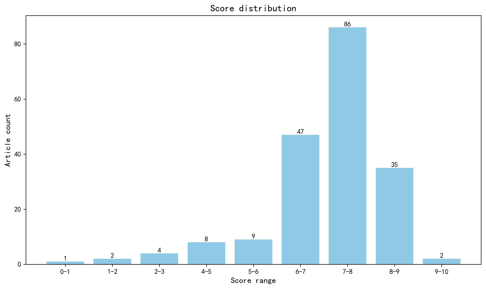

神经科学快讯·第009期 本周神经科学前沿：AI基础模型预测全脑活动，小胶质细胞“沉默”恐惧记忆，麻醉海马仍解语义 (2026-05-10)
📊 本周概览
历史摘要修订（2026-10-18）：第 009 期保留历史期号、日期与封面。本期 413 条记录中补回 302 条正式摘要，仅对这些条目使用 DeepSeek 重新评分和分级推荐，其余评估保持原值。修订后拟发布 174 篇，其中 10 篇仍缺充分摘要，已保留资料不足提示。来源、旧评分和推荐变更见 getfiles/abstract_history_2026-10-18.json。
- 头条推荐: 1 篇
- 深度解读: 99 篇
- 简要提及: 74 篇
- 跨界启发: 0 篇
- 已过滤: 239 篇
🌏 环球视野

地区与机构按本期原始发表记录、ROR 及城市地址规则分别统计；跨地区合作可重复计入，不作为完整机构排名。评分分布不含“域外局限”文章。
🌍 国家/地区分布 TOP 10
| 排名 | 国家 | 文章数量 |
|---|---|---|
| 1 | United States | 94 |
| 2 | United Kingdom | 35 |
| 3 | Germany | 28 |
| 4 | China | 27 |
| 5 | Canada | 14 |
| 6 | Italy | 13 |
| 7 | France | 10 |
| 8 | The Netherlands | 9 |
| 9 | Spain | 9 |
| 10 | Japan | 7 |
地区计次合计: 310 次；取得地区信息 168/194 篇
🏢 研究机构 TOP 10
| 排名 | 机构 | 文章数量 |
|---|---|---|
| 1 | University of Oxford | 14 |
| 2 | Harvard University | 10 |
| 3 | University College London | 10 |
| 4 | Fudan University | 7 |
| 5 | Shanghai Jiao Tong University | 6 |
| 6 | University of Pennsylvania | 6 |
| 7 | University of Cambridge | 6 |
| 8 | University of Michigan | 6 |
| 9 | Stanford University | 6 |
| 10 | Boston Children's Hospital | 5 |
📊 评分分布
| 评分区间 | 文章数量 |
|---|---|
| 0-1 | 1 |
| 1-2 | 2 |
| 2-3 | 4 |
| 4-5 | 8 |
| 5-6 | 9 |
| 6-7 | 47 |
| 7-8 | 86 |
| 8-9 | 35 |
| 9-10 | 2 |
总计: 194 篇评分文章
📈 各领域文章分布
| 领域 | 深度解读 | 简要提及 | 总计 |
|---|---|---|---|
| 临床与转化神经科学 | 23 | 18 | 41 |
| 分子与细胞神经科学 | 19 | 4 | 23 |
| 系统与环路神经科学 | 18 | 4 | 22 |
| 未知领域 | 0 | 21 | 21 |
| 认知神经科学 | 11 | 7 | 18 |
| 计算与理论神经科学 | 7 | 8 | 15 |
| 感觉与运动神经科学 | 8 | 4 | 12 |
| 发育神经科学 | 6 | 2 | 8 |
| 方法学 | 5 | 2 | 7 |
| 社会与情感神经科学 | 2 | 4 | 6 |
合计: 深度解读 99 篇，简要提及 74 篇，共 173 篇
🥇 头条推荐（9.0+分）
中文标题: 蛋白质语言模型与上位性互作引导的快速定向进化
作者: Vincent Q Tran, Matthew Nemeth, Liam J Bartie et al.
单位: Department of Bioengineering, University of California, Berkeley, Berkeley, CA, USA.; Arc Institute, Palo Alto, CA, USA.; Department of Chemistry, University of California, Berkeley, Berkeley, CA, USA. 等
研究地区: United States
关键词: 计算方法, 深度学习, 蛋白质工程, 定向进化, 上位效应建模
亮点: 融合蛋白质语言模型与上位性建模，仅需单轮实验即可实现多突变体的快速定向进化，颠覆传统多轮突变的低效范式。
核心优势: 将零样本计算预测与高通量多突变组装无缝整合，在三种蛋白上验证了高达10倍的功能提升，展示了端到端的普适性工程化能力。
研究局限: 尽管实验验证扎实，论文未深入探讨模型在多亚基复合物或变构蛋白等极端复杂体系中的适用边界及潜在脱靶效应。
目标读者: 系统与合成生物学家、计算生物学家、蛋白质工程师，以及对高通量平台驱动进化感兴趣的神经技术开发者。
推荐理由: 这篇论文虽然属于合成生物学和蛋白质工程领域，但其开发的计算框架对神经科学具有深远的启示。MULTI-evolve 通过整合蛋白质语言模型与上位效应建模，高效探索高维序列空间，这一思路可直接迁移到神经科学中的核心难题——例如，系统性理解离子通道、神经递质受体或光遗传学工具的突变-功能景观。目前，神经科学家在优化光激活通道的动力学特性或受体的配体敏感性时，同样面临组合突变的搜索瓶颈，而本文的方法有望突破传统逐步叠加突变的低效性，大幅减少实验轮次。对于计算与系统神经科学社区，该项研究提供了一种将大数据驱动预测与生物物理约束相结合的强大范式，值得深入关注。
📚 精选文献（按领域分类）
临床与转化神经科学
中文标题: 爆发抑制：一种与网络复杂性丧失相关的默认脑状态
作者: Nina Doorn, Gerco C Hassink, Monica Frega et al.
单位: Department of Clinical Neurophysiology, University of Twente, 7522NB Enschede, The Netherlands.; Department of Neurology and Clinical Neurophysiology, Medisch Spectrum Twente, 7512KZ Enschede, The Netherlands.; Department of Informatics, Bioengineering, Robotics and Systems Engineering, University of Genoa, 16145 Genoa, Italy.
研究地区: The Netherlands, Italy
关键词: 爆发抑制, 脑电图, 网络复杂度, 麻醉, 缺氧后昏迷, 计算建模
亮点: 跨临床、体外与计算模型揭示爆发抑制的统一机制：兴奋性网络复杂度丧失导致默认动态状态。
核心优势: 多模态证据链完整，从患者EEG到iPSC衍生网络和生物物理模型，统一解释了不同病因下爆发抑制的趋同现象。
研究局限: 临床样本量有限（麻醉n=10），且iPSC网络成熟度与体内环境存在差距，机制推断需谨慎。
目标读者: 临床神经生理学家、计算神经科学家、重症监护与麻醉研究者、网络神经科学工作者
推荐理由: 该研究系统解析了爆发抑制（BS）两种形式——均一性爆发抑制（IBS）与异质性爆发抑制（HBS）——在临床结局上的显著差异，并首次提出网络复杂度降低是BS默认脑状态的核心特征。通过跨麻醉、缺氧后昏迷和新生儿脑病等多场景分析，作者建立了BS模式与可逆性之间的机制联系，为临床预后判断提供了客观电生理标志物。研究融合临床神经生理与计算建模，不仅深化了对意识丧失神经机制的理解，也为麻醉深度监测和脑损伤评估开辟了新思路。
中文标题: 现代诊断与治疗时代多发性硬化症的认知功能
作者: James F Sumowski, Sarah Levy, Ilana Katz Sand et al.
单位: Department of Neurology, Perelman School of Medicine at the University of Pennsylvania, Philadelphia, PA 19104, USA.; Corinne Goldsmith Dickinson Center for Multiple Sclerosis, Department of Neurology, Icahn School of Medicine at Mount Sinai, New York, NY 10029, USA.; Department of Psychiatry, Weill-Cornell Medical College, New York, NY 10065, USA. 等
研究地区: United States
关键词: 多发性硬化, 信息处理速度, 认知障碍, 疾病修正治疗, 记忆, 临床队列
亮点: 多发性硬化症认知障碍的范式转变：在诊断与治疗现代化时代，信息处理速度缺陷已不复存在，记忆（尤其是工作记忆维持）才是持续存在且更严重的核心缺陷
核心优势: 将大规模现代临床队列（n=1004）、病例对照设计（早期RRMS n=170，6年纵向随访）与历史研究效应量比较相结合，系统性地挑战了统治该领域三十年的'速度中心'模型
研究局限: 病例对照与临床筛查均依赖标准神经心理学测验而非实验认知神经科学范式，历史对比跨越不同诊断标准与治疗时代，难以完全排除队列与测验版本差异的混杂
目标读者: 多发性硬化症临床研究者、神经心理学家、认知神经科学家、以及关注神经疾病认知障碍机制的系统与计算生物学家
推荐理由: 该研究挑战了多发性硬化认知障碍领域长期占主导的“处理速度中心”模型。基于现代诊疗时代（2001-2025）的患者队列，作者重新评估了认知缺损的结构，发现记忆等下游缺陷并非单纯由处理速度减慢所致。这一发现提示需重新审视认知障碍的机制与临床评估策略，对推动精准认知干预具有重要意义。
中文标题: 语义性痴呆的症状前与早期表现
作者: David J Whiteside, Matthew A Rouse, P Simon Jones et al.
单位: Department of Neurology, Cambridge University Hospitals NHS Foundation Trust, Cambridge CB2 0QQ, UK.; Medical Research Council Cognition and Brain Sciences Unit, University of Cambridge, Cambridge CB2 7EF, UK.; Department of Clinical Neurosciences, University of Cambridge, Cambridge CB2 0SZ, UK. 等
研究地区: United Kingdom
关键词: 语义性痴呆, 症状前阶段, 纵向MRI, 颞叶萎缩, 生物标志物, 神经心理学
亮点: 大规模影像筛查揭示语义痴呆前驱期存在显著前颞叶萎缩负担，挑战仅凭萎缩诊断的临床实践
核心优势: 首次在UK Biobank超6万人中无偏识别前颞叶萎缩个体，并结合剑桥纵向队列建模症状前萎缩时间线，弥合了临床前与症状期之间的空白。
研究局限: UK Biobank中影像学拟诊个体缺乏神经病理或长期临床随访确认，分类器性能依赖训练集且可能存在选择偏倚；右侧病例的行为学表现描述较为主观。
目标读者: 神经影像学、痴呆与额颞叶变性研究、计算神经科学及临床神经病学研究者
推荐理由: 该研究利用症状前个体偶然的MRI数据，首次系统描绘了语义性痴呆在症状出现前的脑结构改变轨迹，填补了前驱期神经病理累积与临床症状脱节的关键空白。通过结合早期患者队列与症状前影像，作者揭示了颞叶萎缩在临床前期已悄然进展，为早期诊断和干预窗口的确定提供了罕见的人体证据。对关注神经退行性疾病早期机制的读者具有重要参考价值。
Translation of GGC repeats into a toxic polyglycine protein in oculopharyngodistal myopathy type 2.
深度解读 8.2/10中文标题: 眼咽远端肌病2型中GGC重复序列翻译为毒性聚甘氨酸蛋白
作者: Kexin Jiao, Xinyu Chen, Mengye Cao et al.
单位: National Center for Neurological Disorders (NCND), Shanghai 200040, China.; Department of Neurology, Huashan Rare Disease Center, Huashan Hospital, Fudan University, Shanghai 200040, China.; Shanghai Institute of Nutrition and Health, Chinese Academy of Sciences, Shanghai 200031, China. 等
研究地区: China
关键词: GGC重复扩增, 多聚甘氨酸, OPDM2, iPSC, 斑马鱼, 重复相关非ATG翻译
亮点: GIPC1基因GGC重复序列通过RAN翻译产生毒性聚甘氨酸蛋白，为眼咽远端肌病2型提供了直接致病机制与候选生物标志物。
核心优势: 多模态证据链完整：报告基因确证翻译产物、定制抗体检测内源蛋白、患者iPSC来源肌管与斑马鱼模型互相印证毒性表型。
研究局限: 机制研究主要基于过表达和体外模型，缺乏GIPC1敲低或polyG清除的体内 rescue 实验，且GGC重复翻译的起始密码子选择与疾病剂量效应关系仍需生理验证。
目标读者: 神经肌肉疾病、重复扩增疾病与RAN翻译机制研究者，以及从事iPSC疾病建模和基因治疗转化的科研人员
推荐理由: 该研究聚焦眼咽远端肌病2型（OPDM2），证实GIPC1基因5'UTR区GGC重复扩增可通过非ATG依赖方式翻译为毒性多聚甘氨酸蛋白，并利用患者来源iPSC分化的肌管及斑马鱼模型验证其表达与毒性。这一发现将重复扩增疾病的致病机制从RNA毒性拓展至蛋白毒性，为OPDM2提供了新的生物标志物和治疗靶点，对神经肌肉疾病的转化研究具有重要启示。
中文标题: 阿尔茨海默病亚型分类方法及共病病理的作用
作者: Klara Gawor, Kevin Statz, Jolien Schaeverbeke et al.
单位: Laboratory of Neuropathology, Department of Imaging and Pathology and Leuven Brain Institute, KU Leuven, Leuven 3000, Belgium.; Department of Neurology, University Hospitals Leuven, Leuven 3000, Belgium.; Penn Digital Neuropathology Lab, Department of Neurology, University of Pennsylvania, Philadelphia, PA 19104, USA. 等
研究地区: Belgium, United States
关键词: 阿尔茨海默病, 亚型分类, 共病理, 生物标志物, 神经影像, 临床异质性
亮点: 系统整合AD亚型分类的证据驱动与假说驱动路径，并首次将常被忽视的共病理纳入分层框架，为精准诊疗提供统一路线图。
核心优势: 跨学科整合临床、神经影像、组学和神经病理学证据，明确指出现有分层体系对TDP-43、α-突触核蛋白及脑血管共病理的系统性忽视，并提出连接临床特征与底层生物学的统一分层框架。
研究局限: 作为综述缺乏原始数据验证，所提出的统一分层框架仍停留在概念层面，未给出可操作的分层标准或外部验证方案，且对共病理影响亚型归属的因果证据梳理有限。
目标读者: 阿尔茨海默病临床研究者、神经病理学家、神经影像与组学数据分析人员及精准医学转化研究者
推荐理由: 该综述系统梳理了阿尔茨海默病亚型分类的传统与新兴策略，强调共病理在临床异质性中的核心作用。文章跨越临床、影像与分子层面，为理解AD的疾病异质性提供了整合框架，并指出了靶向治疗开发中患者分层的关键挑战。对关注神经退行性疾病机制与转化的研究者具有重要参考价值。
中文标题: 自身抗体介导的中枢神经系统疾病致病性级联反应
作者: Federico Montini, Elinor Wing, Max Herman et al.
单位: Center for MS and Autoimmune Neurology, Mayo Clinic, Rochester, MN 55905, USA.; Department of Neurology, Mayo Clinic, Rochester, MN 55905, USA.; Department of Neuroscience, Mayo Clinic, Jacksonville, FL 32224, USA. 等
研究地区: United States, United Kingdom
关键词: 自身抗体, 神经胶质表面抗原, 免疫治疗, 疾病机制, 转化研究, 人类
亮点: 将六大神经胶质表面自身抗体疾病整合为“致病性级联”统一框架，从触发、耐受逃逸、中枢准入到神经胶质功能障碍逐层解析。
核心优势: 由NMOSD、MOGAD和自身免疫性脑炎领域的权威团队撰写，以“大六”自身抗原为主线构建跨疾病可比较的时序病理级联模型，兼具整合深度与转化指向。
研究局限: 作为综述/观点文章，所提出的级联模型多为假设性整合，缺乏原始实验验证；部分环节的机制推演依赖间接证据，证据等级不均。
目标读者: 神经免疫学、临床神经病学、自身免疫性脑炎与脱髓鞘疾病研究者，以及关注抗体介导中枢神经系统疾病的转化医学与计算系统生物学家
推荐理由: 该综述系统阐述了针对神经胶质表面自身抗体（NGSAbs）介导的中枢神经系统疾病从分子识别到致病级联的转化框架。文章整合了临床表型、肿瘤关联与免疫治疗反应，并深入探讨了抗体起源与致病机制，为理解这类可治性疾病的异质性提供了机制性视角，对神经免疫学与临床转化研究具有重要参考价值。
A next-generation HDAC6 inhibitor for amyotrophic lateral sclerosis and frontotemporal dementia.
深度解读 8.0/10中文标题: 用于肌萎缩侧索硬化症和额颞叶痴呆的新一代HDAC6抑制剂
作者: Rebecca E James, Michael Bekier, Pin-Tsun Justin Lee et al.
单位: Eikonizo Therapeutics, Inc., Cambridge, MA 02142, USA.; Department of Neurology, University of Michigan, Ann Arbor, MI 48109, USA.; Department of Neurology, University of Massachusetts Medical School, Worcester, MA 01655, USA. 等
研究地区: United States, France, United Kingdom
关键词: HDAC6抑制剂, 肌萎缩侧索硬化, 额颞叶痴呆, 蛋白质稳态, 自噬, 微管乙酰化
亮点: 下一代高选择性、CNS渗透性HDAC6抑制剂EKZ-438在ALS和FTD模型中同时纠正蛋白稳态与轴突运输缺陷，并延长人源突变神经元存活。
核心优势: 多模型、多模态证据链完整：从药理选择性（>8500倍）、CNS暴露（Kp,uu≥0.55）到SOD1G93A和TDP-43小鼠的在体神经保护，再延伸至人iPSC来源神经元，转化相关性突出。
研究局限: 疗效幅度总体温和（轴突运输改善16%、运动表现约40%），缺乏长期给药、生存期终点和脱靶/安全性系统评估，HDAC6抑制的疾病修饰作用仍需独立重复与临床验证。
目标读者: 神经退行性疾病、蛋白稳态与轴突运输、药物发现与转化神经科学研究者
推荐理由: 该研究报道了一种新一代HDAC6抑制剂，通过同时促进自噬清除蛋白聚集体和增强微管稳定性来改善神经元内运输，从而在ALS和FTD模型中发挥治疗作用。其创新点在于将HDAC6抑制从广谱活性推向选择性亚型靶向，并展示了临床前疗效与安全性。对神经科学读者而言，这不仅提供了神经退行性疾病的多机制干预策略，也强调了蛋白质稳态与细胞运输在疾病修饰中的核心地位，为转化研究提供了新候选药物。
中文标题: SHANK3突变破坏跨物种嗅觉效价编码，并在小鼠中鉴定出皮层杏仁核机制
作者: Yu Hu, Yuli Wu, Mingyu Wei et al.
单位: Shenzhen-Hong Kong Institute of Brain Science, Shenzhen Institute of Advanced Technology, Chinese Academy of Sciences, Shenzhen 518055, China.; State Key Laboratory of Cognitive Science and Mental Health, Institute of Psychology, Chinese Academy of Sciences, Beijing 100101, China.; Research Center for Primate Neuromodulation and Neuroimaging, Institute of Biomedical and Health Engineering, Shenzhen Institutes of Advanced Technology, Chinese Academy of Sciences, Shenzhen 518055, China. 等
研究地区: China
关键词: SHANK3, 自闭症, 嗅觉效价, 皮层杏仁核, EEG, 跨物种
亮点: SHANK3突变跨物种破坏嗅觉效价编码，并将小鼠皮层杏仁核确定为可恢复的行为与突触机制节点。
核心优势: 整合了人类患者嗅探/EEG表型与小鼠Shank3B-/-行为、钙成像和电生理，并通过CoA特异性急性敲除与靶向恢复实现因果闭环。
研究局限: 跨物种证据仍为平行相关性（人EEG与鼠环路未直接对齐），CoA下游/上游回路、发育窗口及效价特异性机制未完全解析，样本量与患者异质性信息有限。
目标读者: 自闭症谱系障碍与SHANK3分子机制研究者、嗅觉与效价处理领域系统神经科学家、皮层杏仁核环路与转化神经科学读者
推荐理由: 该研究首次在SHANK3突变个体和Shank3B-/-小鼠中一致发现嗅觉效价感知障碍，并进一步在小鼠皮层杏仁核鉴定出关键神经机制。通过结合人类嗅觉行为、脑电记录和动物模型环路分析，作者 bridging 了跨物种的转化鸿沟，为自闭症感觉异常提供了新的生物标志物和环路靶点。研究不仅深化了对SHANK3功能的理解，也为开发针对感觉处理障碍的干预策略开辟了道路。
中文标题: EIPR1变异导致伴有内体溶酶体和致密核心囊泡缺陷的神经发育障碍
作者: Saikat Ghosh, Jaskaran Singh, Nadirah S Damseh et al.
单位: Department of Pediatrics & Genetics, Makassed Hospital, Al-Quds Medical School, East Jerusalem 95908, Palestine.; Division of Neuroscience and Cellular Structure, Eunice Kennedy Shriver National Institute of Child Health and Human Development, National Institutes of Health, Bethesda, MD 20892, USA.; INRS-Centre Armand Frappier Santé Biotechnologie, Laval, QC H7V 1B7, Canada. 等
研究地区: United States, Canada, Palestine, Italy, France, Saudi Arabia, Pakistan, South Korea, Israel, Germany, United Kingdom
关键词: EIPR1, 致密核心囊泡, 内体溶酶体, 神经发育障碍, 遗传变异, 囊泡运输
亮点: EIPR1功能缺失被确定为神经发育障碍的新遗传病因，通过人源变异、患者成纤维细胞和斑马鱼敲除模型系统性地关联到内体回收与致密核心囊泡生成缺陷。
核心优势: 多模态证据链完整：6个家系5种错义变异的遗传学发现，结合异源细胞、iPSC来源神经元、患者成纤维细胞及斑马鱼敲除/回补实验，从分子互作到细胞表型再到整体动物行为形成闭环验证。
研究局限: 机制研究主要依赖非神经元异源系统及单一患者成纤维细胞，患者神经元中EIPR1缺陷的直接证据有限；斑马鱼表型与人类表型的对应深度不足，且变异致病性缺乏独立队列复现。
目标读者: 神经遗传学、罕见神经发育障碍、内体运输与囊泡生物学研究者，以及临床遗传咨询与儿科神经科医生
推荐理由: 该研究首次将EIPR1基因变异与人类神经发育障碍联系起来，通过患者遗传学、细胞模型及可能的功能实验，揭示了EIPR1在致密核心囊泡生成和内体溶酶体途径中的关键作用。这项工作不仅扩展了神经发育障碍的遗传病因谱，而且将基础细胞生物学中的囊泡运输机制与临床表型直接对接，为理解突触和内分泌信号传递缺陷如何导致神经发育异常提供了新视角。
Biochemical and brain heterogeneity characterizes psychiatric and non-psychiatric illness
深度解读 7.7/10中文标题: 生化和大脑异质性刻画精神疾病与非精神疾病
作者: Maria A Di Biase, William R Reay, Hadis Jameei et al.
单位: Department of Psychiatry, Brigham and Women's Hospital, Harvard Medical School, Boston, MA, USA. dibiasem@unimelb.edu.au.; Department of Psychiatry, Melbourne Medical School, The University of Melbourne, Melbourne, VIC, Australia. dibiasem@unimelb.edu.au.; Department of Anatomy and Physiology, School of Biomedical Sciences, The University of Melbourne, Melbourne, VIC, Australia. dibiasem@unimelb.edu.au. 等
研究地区: Australia, United States
关键词: 精神疾病, 生物学异质性, 多疾病框架, 大规模队列, 生化标志物, 脑影像
亮点: 在超44万人中刻画9种精神疾病与30种非精神科疾病的生化与脑异质性谱，表明精神疾病异质性可与非精神科疾病相当且常偏离诊断分类
核心优势: 在超大规模队列中将生化与脑影像异质性统一量化，并系统比较精神科与非精神科疾病，同时提供可交互在线资源，兼具规模、泛化性与可复用性。
研究局限: 异质性指标主要基于横断面统计离散度，难以直接映射到个体化生物学亚型或因果机制；生化与脑影像指标的配对覆盖度及非欧洲人群代表性可能限制外推。
目标读者: 精神医学、神经影像遗传学、系统生物学与精准医学研究者
推荐理由: 该研究在44万余人中系统刻画了9种精神疾病与30种非精神疾病的生化与脑异质性，揭示了精神疾病异质性程度与非精神疾病相当且常偏离现有诊断分类。这一发现挑战了基于症状分类的精神疾病诊断体系，强调了跨诊断生物学分型的必要性，为精神疾病的机制理解和转化研究提供了大规模证据。
Circular RNA SCMH1 promotes persistent brain repair via N6-methyladenosine methylation post stroke.
深度解读 7.7/10中文标题: 环状RNA SCMH1通过N6-甲基腺苷甲基化促进卒中后持久脑修复
作者: Ying Bai, Ningbo Cai, Liying Wen et al.
单位: Department of Physiology, Jiangsu Provincial Key Laboratory of Critical Care Medicine, School of Medicine, Southeast University, Nanjing 210009, China.; Jiangsu Provincial Key Laboratory of Critical Care Medicine, Key Laboratory of Developmental Genes and Human Disease, School of Life Science and Technology, Southeast University, Nanjing, 210096, China.; Department of Pharmacology, Jiangsu Provincial Key Laboratory of Critical Care Medicine, School of Medicine, Southeast University, Nanjing 210009, China. 等
研究地区: China
关键词: 环状RNA, m6A甲基化, 卒中, 单细胞测序, MeRIP-seq, 神经修复
亮点: 单剂circSCMH1通过FTO-YTHDC1-Exportin-4轴建立m6A依赖的自持环路，实现卒中后持久脑修复
核心优势: 利用ΔcircSCMH1变异体区分内外源circRNA，结合scRNA-seq、MeRIP-seq与遗传模型多模态验证自持环路及核输出机制
研究局限: 机制主要基于小鼠模型和特定circRNA，自持环路的长期稳定性、剂量效应及向人类卒中的转化可行性尚未充分验证
目标读者: 卒中转化神经生物学、RNA治疗学、表观转录组学和神经免疫研究者
推荐理由: 该研究揭示了外源性环状RNA circSCMH1通过m6A甲基化依赖的自维持环路，在卒中后实现持久脑修复的分子机制。利用单细胞测序和MeRIP-seq等技术，作者证明单次给药即可在梗死周边区维持circSCMH1高水平，为环状RNA疗法的持久性提供了机制解释。这项工作不仅推动了卒中转化研究，也为基于环状RNA的神经修复策略提供了新思路。
中文标题: 长读长测序在帕金森病中识别出FGF14重复扩增
作者: Fulya Akçimen, Kensuke Daida, Lara M Lange et al.
单位: DataTecnica LLC, Washington, DC 20037, USA.; Center for Alzheimer's and Related Dementias, National Institute on Aging and National Institute of Neurological Disorders and Stroke, National Institutes of Health, Bethesda, MD 20892, USA.; Laboratory of Neurogenetics, National Institute on Aging, National Institutes of Health, Bethesda, MD 20892, USA. 等
研究地区: United States, United Kingdom, Chile, Germany
关键词: 长读长测序, 重复扩增, 帕金森病, FGF14, 遗传学, PPMI队列
亮点: 首次通过长读长测序将FGF14 GAA重复扩增与帕金森病联系起来，拓宽了重复扩增疾病的表型谱
核心优势: 长读长全基因组测序结合多队列全球多样性对照，并在四例患者中通过α-突触核蛋白种子扩增实验确认病理，为罕见的遗传贡献提供了多模态证据
研究局限: 仅5例患者携带扩增，病例数少且缺乏功能验证或家系共分离证据，因果性仍属关联性推断，外显率与人群频率需更大样本验证
目标读者: 神经遗传学、运动障碍疾病、重复扩增疾病及长读长测序方法学研究者
推荐理由: 该研究利用长读长全基因组测序，在帕金森病队列中系统筛查FGF14 GAA重复扩增，首次将这一脊髓小脑共济失调致病基因与帕金森病联系起来。研究不仅扩展了帕金森病的遗传病因谱，也展示了长读长测序在解析复杂重复扩增中的方法学优势，为神经退行性疾病的精准诊断和分型提供了新思路。
中文标题: SARS-CoV-2感染和疫苗接种后吉兰-巴雷综合征中腺病毒反应性增强
作者: Roberto Bellanti, Ana Candalija Iserte, Claire Bergstrom Johnson et al.
单位: Department of Neuromuscular Diseases, Queen Square Institute of Neurology, University College London, London WC1N 3BG, UK.; Health and Biomedicine Department, Leitat Technological Center, Barcelona 08028, Spain.; Nuffield Department of Clinical Neurosciences, University of Oxford, Oxford OX3 9DU, UK. 等
研究地区: United Kingdom, Spain, Thailand, United States
关键词: 吉兰-巴雷综合征, SARS-CoV-2, 腺病毒载体疫苗, 糖基化, 抗糖脂抗体, 分子模拟
亮点: 吉兰-巴雷综合征患者对腺病毒蛋白的抗体反应增强，提示腺病毒载体疫苗相关GBS可能存在免疫学机制
核心优势: 在同一研究框架内系统比较感染后、疫苗接种后与非COVID相关GBS，结合血清学、细胞因子与克隆浆母细胞抗体分析，发现GBS患者对腺病毒蛋白的广谱抗体反应显著增强，为机制探索提供新方向。
研究局限: 样本量小（GBS-AC仅10例），缺乏机制性因果证据，未能在外周神经抗原中找到交叉反应，且抗体增强与GBS发病的时间先后和因果关系不明。
目标读者: 神经免疫学、周围神经病学、疫苗安全性和临床转化研究者
推荐理由: 该研究系统探究了SARS-CoV-2感染或疫苗接种后吉兰-巴雷综合征（GBS）患者对腺病毒的增强反应性，为腺病毒载体疫苗相关GBS风险提供了潜在的免疫学解释。通过比较不同触发因素下的GBS患者，研究揭示了腺病毒反应性与抗糖脂抗体之间的关联，提示分子模拟或交叉反应机制。这项工作将临床流行病学观察与基础免疫学机制相衔接，对理解感染/疫苗后自身免疫性神经病的发病机制具有重要价值，并可能指导未来疫苗安全性评估和GBS风险分层。
中文标题: 体先型与脑先型帕金森病亚型中不同的皮肤α-突触核蛋白特征
作者: Minglei Liu, Tingting Wen, Haiyang Luo et al.
单位: Henan Key Laboratory of Cerebrovascular Diseases, Zhengzhou University, Zhengzhou, Henan 450052, China.; Department of Neurology, The First Affiliated Hospital of Zhengzhou University, Zhengzhou, Henan 450052, China.; NHC Key Laboratory of Prevention and Treatment of Cerebrovascular Disease, Zhengzhou, Henan 450052, China. 等
研究地区: China
关键词: 帕金森病, α-突触核蛋白, 皮肤活检, 脑-体轴, 突触核蛋白起源假说, 人类
亮点: 通过双部位皮肤活检将α-突触核蛋白的组织梯度与播散活性同脑-首/体-首帕金森病亚型直接对应，为突触核蛋白起源与连接组模型提供外周病理学证据。
核心优势: 采用126例脑-首、79例体-首患者与60例对照的较大样本，结合免疫染色、RT-QuIC播散活性与神经纤维密度多模态定量，揭示体-首亚型的远端-近端α-突触核蛋白梯度及更快播散动力学，并给出皮肤活检亚型鉴别AUC=0.774。
研究局限: 横断面设计无法确立因果或预测时序，亚型分类依赖RBD前驱史这一单一临床标准，缺乏尸检或影像金标准验证，且AUC仅0.774提示鉴别效能中等；梯度结论基于有限两位点采样。
目标读者: 帕金森病与突触核蛋白病研究者、运动障碍临床医生、皮肤活检与生物标志物开发人员、神经病理与传播机制计算建模者
推荐理由: 该研究基于突触核蛋白起源与连接组模型，在126例脑首发和79例体首发帕金森病患者中系统比较皮肤α-突触核蛋白沉积特征，为两种亚型提供了外周病理学证据。皮肤活检作为微创手段，有望成为区分帕金森病亚型的生物标志物，推动个体化诊疗与疾病修饰试验的患者分层。研究将中枢起源假说与外周自主神经病理联系起来，对理解帕金森病异质性和传播路径具有重要价值。
Brainstem pathology in anti-IgLON5 disease: new insights into early events and tau progression.
深度解读 7.5/10中文标题: 抗IgLON5疾病中的脑干病理：对早期事件和tau进展的新见解
作者: Raphael Reinecke, Sophie Nitsch, Francisca Faber et al.
单位: Department of Neurology, Medical University of Vienna, Austria, Vienna 1090, Austria.; Comprehensive Center for Clinical Neurosciences and Mental Health Vienna, Medical University of Vienna, Vienna 1090, Austria.; Division of Neuropathology and Neurochemistry, Department of Neurology, Medical University of Vienna, Vienna 1090, Austria. 等
研究地区: Austria, Denmark, Spain, Germany, The Netherlands, Finland
关键词: 抗IgLON5病, 脑干, tau蛋白病, 自身免疫, 神经病理分期, 神经退行性变
亮点: 抗IgLON5疾病中tau病理起源于神经元核内pS422-tau与核膜异常，先于胞质tau扩散，提示免疫介导的继发性tauopathy早期事件。
核心优势: 结合14例尸检人脑组织（含不同tau分期与病程）与体外大鼠海马神经元抗体孵育模型，系统绘制tau翻译后修饰的时间序列，并首次将核膜内陷/皱褶与早期核内tau及IgG4沉积直接关联。
研究局限: 样本量小（14例尸检）且为描述性时间序列推断，缺乏纵向因果证据；体外模型仅验证核膜改变，未完全复现核内tau病理；未直接证明IgLON5抗体与核膜蛋白的分子机制。
目标读者: 神经免疫学、神经病理学、tauopathy与神经退行性疾病机制研究者
推荐理由: 本研究聚焦抗IgLON5病这一自身免疫与神经退行性变交叉的罕见疾病，系统刻画了脑干tau病理的早期事件与进展模式，并验证了近期提出的三阶段神经病理分类框架。该工作不仅为理解tau病理在脑干的选择性易感性提供了关键线索，也强调了自身免疫触发神经退行性变的时序关系，对早期诊断和干预策略具有重要转化价值。
Compound heterozygous mutations in the SSPOP gene lead to epilepsy and developmental disorders.
深度解读 7.5/10中文标题: SSPOP基因复合杂合突变导致癫痫和发育障碍
作者: Aojie Cai, Fan Zhang, Jinliang Li et al.
单位: Children's Medical Center, Peking University First Hospital, Beijing 102627, China.; Beijing Key Laboratory of Molecular Diagnosis and Study on Pediatric Genetic Diseases, Beijing 102627, China.; Department of Pediatrics, Children's Hospital of the First Affiliated Hospital of Zhengzhou University, Henan 450000, China. 等
研究地区: China
关键词: 全外显子测序, 癫痫, 神经发育障碍, SSPOP基因, SCO-spondin, 伪基因
亮点: 被标注为假基因的SSPOP实为功能基因：复合杂合突变在三个家系中与癫痫和神经发育障碍共分离，并在类器官和斑马鱼中获得功能验证
核心优势: 从临床家系遗传学到人脑组织、iPSC类器官和CRISPR斑马鱼敲除的多模态证据链，系统性地将长期被忽视的假基因重新定义为致病基因
研究局限: 仅三个家系、四例患者，样本量小且缺乏独立队列复制；斑马鱼和类器官表型与人类癫痫之间的机制关联仍为相关性，SCO-spondin下游通路未阐明
目标读者: 神经遗传学、癫痫遗传学、神经发育生物学及基因发现与功能验证研究者
推荐理由: 该研究通过三人组全外显子测序，在三个无亲缘关系的家庭中鉴定出SSPOP基因的复合杂合突变，该基因此前被注释为伪基因，编码的SCO-spondin蛋白在神经发育中起重要作用。四名患儿表现出癫痫和神经发育障碍，表型异质性显著。研究不仅扩展了SSPOP相关疾病的表型谱，还首次将伪基因与人类癫痫和发育障碍联系起来，强调了重新评估基因组中伪基因功能的重要性。对于临床遗传学和神经发育生物学领域具有重要启示。
中文标题: 通过靶向节律性脑环路改善社交焦虑中的情绪控制
作者: Sjoerd Meijer, Bob Bramson, Ivan Toni et al.
单位: Behavioral Science Institute (BSI), Radboud University Nijmegen, Nijmegen 6525 GD, the Netherlands.; Donders Institute for Brain, Cognition and Behavior, Centre for Cognitive Neuroimaging (DCCN), Radboud University Nijmegen, Nijmegen 6525 EN, the Netherlands.; Donders Institute for Brain, Cognition and Behavior, Centre for Cognitive Neuroimaging (DCCN), Radboud University Nijmegen, Nijmegen 6525 EN, the Netherlands sjoerd.meijer@donders.ru.nl.
研究地区: The Netherlands
关键词: 社交焦虑, 回避行为, 脑电刺激, 相位-振幅耦合, 前额叶, 感觉运动皮层
亮点: 相位耦合双位点电刺激增强前额-感觉运动theta-gamma耦合，从而选择性改善社交焦虑者的回避行为控制。
核心优势: 预注册设计结合行为与fMRI，双位点相位耦合刺激实现靶向神经调控，并显示靶点参与度随特质焦虑变化。
研究局限: 样本量与效应范围有限，缺乏长期临床随访和独立重复；对theta-gamma耦合的因果机制仍多为间接推断。
目标读者: 临床神经科学、神经调控、计算精神病学与情绪行动控制研究者
推荐理由: 该研究采用双位点相位耦合电刺激，增强前额叶-感觉运动皮层内源性θ-γ相位-振幅耦合，以改善社交焦虑个体的情绪控制。预注册设计、生理机制驱动的干预策略及对社交回避行为的调控效果，为社交焦虑障碍提供了新的非侵入性治疗思路，并展示了节律性神经调控在精神疾病转化研究中的潜力。
中文标题: 基因型-结构-表型相关性定义了早发性痉挛性截瘫4型的差异性自然史
作者: Julian E Alecu, Luca M Schierbaum, Amy Tam et al.
单位: Department of Neurodegenerative Diseases, Hertie-Institute for Clinical Brain Research, and Center of Neurology, University of Tübingen, 72076 Tübingen, Germany.; German Center of Neurodegenerative Diseases (DZNE), 72076 Tübingen, Germany.; Movement Disorders Program, Department of Neurology and F.M. Kirby Neurobiology Center, Boston Children's Hospital, Harvard Medical School, Boston 02115, MA, USA. 等
研究地区: United States, Germany, Brazil, South Korea
关键词: SPG4, SPAST基因, 自然史研究, 基因型-表型关联, 早发型痉挛性截瘫, 多中心队列
亮点: 通过整合spastin六聚体结构映射与基因型分层，SPG4被划分为临床轨迹迥异的严重型与温和型两大亚群。
核心优势: 结构信息指导的变异分类框架将蛋白残基重要性、遗传模式与纵向表型轨迹相联系，并得到血浆NfL的支持，为SPG4的试验就绪性提供了具体的分层工具。
研究局限: 队列由多中心及文献来源病例拼合而成，pNfL仅在26例患者中检测，且所提出的分层框架缺乏独立外部队列验证。
目标读者: 神经遗传学家、运动障碍与HSP临床研究者、遗传变异解读与生物标志物方向的转化神经科学家
推荐理由: 该研究基于206例经基因确诊的SPG4患者多中心队列，系统描绘了早发型痉挛性截瘫的基因型-结构-表型关联与自然史，弥补了该领域缺乏稳健基因型-表型相关性和自然史数据的空白。其标准化运动量表与痉挛评级为临床试验终点选择提供了关键依据，对推动SPG4精准医疗和试验就绪度具有重要转化价值。
中文标题: 慢性卒中患者奖赏学习受损但运动激活保留
作者: Sebastian Sporn, Maria Herrojo Ruiz, Rezka Fathana et al.
单位: School of Mind, Body and Society, Goldsmiths, University of London, London, UK.; Department of Clinical and Movement Neuroscience, Queens Square Institute of Neurology, UCL, London, UK.; Wellcome Centre for Integrative Neuroimaging, Nuffield Department of Clinical Neurosciences, University of Oxford, Oxford, UK. 等
研究地区: United Kingdom, Spain
关键词: 中风, 强化学习, 运动康复, 多巴胺, 计算建模, 人类
亮点: 慢性卒中患者奖励动机性提速保留而概率性奖励学习受损的行为-计算分离，提示可利用完整动机通路优化康复。
核心优势: 采用概率反转学习任务结合分层贝叶斯HGF建模，在40例慢性卒中和30例对照中于强/弱肢体间实现行为与计算层面的双重分离，并排除一般运动与认知缺陷的混杂。
研究局限: 样本量中等且为横断面设计，行为学与建模证据为主、缺乏神经机制的直接测量，HGF参数的可识别性与跨任务泛化仍待验证。
目标读者: 卒中康复与神经工程研究者、计算精神病学与强化学习建模者、运动控制与神经影像科学家
推荐理由: 该研究通过行为计算建模区分了奖赏驱动行为的两个成分——运动活力与学习，发现慢性中风患者存在奖赏学习的选择性损伤，而运动活力相对保留。这一发现挑战了中风导致全局奖赏处理障碍的观点，为基于强化学习的康复策略提供了机制依据：针对学习缺陷而非活力缺陷的干预可能更有效。研究将计算精神病学方法引入神经康复领域，具有重要的转化价值。
中文标题: 多系统萎缩的临床预后指标
作者: Yee Yen Goh, Viorica Chelban, Nirosen Vijiaratnam et al.
单位: Department of Neuromuscular Diseases, UCL Queen Square Institute of Neurology, UCL, Queen Square, London, WC1N 3BG, UK.; UCL Medical School, UCL, Gower Street, London, WC1E 6BT, UK.; Department of Clinical and Movement Neurosciences, UCL Queen Square Institute of Neurology, UCL, Queen Square, London, WC1N 3BG, UK. 等
研究地区: United Kingdom
关键词: 多系统萎缩, 生存预后, 尸检队列, 临床异质性, 生物标志物, 疾病分层
亮点: 大型尸检确认队列揭示多系统萎缩生存预后因素具有时间依赖性，为临床分层与试验设计提供可操作的里程碑指标
核心优势: 迄今最大规模尸检病理确认的MSA生存队列（254例），结合多中心前瞻性随访与landmark分析控制保证时间偏倚，系统刻画了不同病程阶段预后因素的变化规律
研究局限: 回顾性QSBB队列与前瞻性PROSPECT-M-UK队列的数据采集方式异质，临床症状群与病理亚型匹配不完全；预后因素多为单变量临床观察指标，缺乏外部独立验证与机制解释
目标读者: 运动障碍与神经退行性疾病临床研究者、临床试验设计者、神经流行病学与预后建模研究者
推荐理由: 该研究基于迄今最大规模尸检确诊的多系统萎缩（MSA）队列（254例尸检确诊，总样本555例），系统评估了生存预后因素，揭示了临床异质性的潜在来源。其重要价值在于：通过严格诊断确认，解决了既往预后研究结果冲突的难题，为临床咨询、晚期规划及临床试验分层提供了更可靠的证据。对神经科学读者而言，该工作强调了尸检验证在神经退行性疾病预后研究中的关键作用，并提示需结合多维度指标（如自主神经衰竭、运动亚型）进行个体化预后评估。方法学上，大样本尸检队列与生存分析框架也可推广至其他神经退行性疾病研究。
Preclinical and first-in-human evidence of 4-hydroxybenzoic acid for mitochondrial COQ2 deficiency.
深度解读 7.2/10中文标题: 4-羟基苯甲酸治疗线粒体COQ2缺乏症的临床前和首次人体证据
作者: Felix Distelmaier, Julia Corral-Sarasa, Laura Jiménez-Sánchez et al.
单位: MetabERN: European Reference Network for Rare Hereditary Metabolic Disorders, Health Care Provider Düsseldorf, Düsseldorf 40225, Germany.; Department of General Pediatrics, Neonatology and Pediatric Cardiology, University Children's Hospital, Heinrich-Heine-University Düsseldorf, Düsseldorf 40225, Germany.; West German Center for Child and Adolescent Health, Partner Site Düsseldorf, Düsseldorf 40225, Germany. 等
研究地区: Germany, Spain
关键词: 线粒体病, CoQ10缺乏, 4-HBA, 小鼠模型, 首次人体试验, 代谢治疗
亮点: 从COQ2小鼠模型到首例人体个体化治疗，4-HBA作为底物增强疗法可逆转致命性线粒体脑病并改善多系统表型
核心优势: 概念验证链条完整：基因敲入小鼠证实4-HBA可预防脑病、撤药后复发，且优于CoQ10；并据此前瞻性开展首例n-of-1人体试验，6个月内肾、神经及生长发育指标均改善，兼具机制与转化价值
研究局限: 人体证据仅为单例、开放标签、无对照的个体化治疗，缺乏药代/剂量-暴露关系、长期安全性数据及可推广性验证，结论易受自然病程、伴随治疗和观察者偏倚影响
目标读者: 线粒体医学与遗传代谢病临床研究者、神经药理学与转化神经科学团队、从事孤儿药早期临床试验及个体化治疗设计的研究者
推荐理由: 该研究针对COQ2缺陷所致原发性辅酶Q10缺乏症，通过临床前模型和首次人体试验验证了4-羟基苯甲酸（4-HBA）作为底物增强疗法的潜力。研究回答了4-HBA是否需要终身补充、是否优于CoQ10以及能否转化到人体等关键问题，为这类目前治疗选择有限的线粒体病提供了新的干预策略。对神经科学读者而言，它不仅展示了从罕见病到通用机制（线粒体功能障碍）的转化路径，也强调了代谢前体补充在神经系统疾病中的治疗价值。
中文标题: 非洲及非洲混合人群中帕金森病的大规模遗传特征分析
作者: Fulya Akçimen, Kimberly Paquette, Peter Wild Crea et al.
单位: Department of Biomedical Sciences, Division of Molecular Biology and Human Genetics, Faculty of Medicine and Health Sciences, Stellenbosch University, Cape Town 7505, South Africa.; Center for Alzheimer's and Related Dementias, National Institute on Aging and National Institute of Neurological Disorders and Stroke, National Institutes of Health, Bethesda, MD 20892, USA.; Laboratory of Neurogenetics, National Institute on Aging, National Institutes of Health, Bethesda, MD 20892, USA. 等
研究地区: United States, South Africa, Brazil, Chile, Nigeria, Japan, Armenia, Germany, United Kingdom
关键词: 帕金森病, 非洲人群, GBA1, 罕见变异, 全外显子测序, 拷贝数变异
亮点: 迄今最大规模的非洲及非洲混合血统人群帕金森病遗传图谱，揭示GBA1/LRRK2变异谱与欧洲/亚洲人群显著不同
核心优势: 在严重代表性不足的非洲及非洲混合血统人群中完成710例病例与11827例对照的大规模测序，系统刻画GBA1、LRRK2、PRKN结构变异及ATXN3重复扩增的谱系差异，并明确欧洲/亚洲常见致病变异在该人群中的缺失
研究局限: 缺乏功能验证与独立队列复制，新变异多为VUS或新发报道，病例对照比不均衡且表型/临床异质性控制有限，结论仍属描述性遗传关联
目标读者: 神经遗传学、帕金森病转化研究、群体遗传学与精准医学研究者
推荐理由: 该研究对非洲及非洲混血人群的帕金森病进行了迄今最大规模的遗传学刻画，在710例患者和11827例对照中系统分析了罕见编码变异、剪接突变、拷贝数变异及纯合片段。研究发现GBA1罕见编码变异是最常见的致病突变，揭示了不同祖先背景下帕金森病遗传架构的差异。这项工作填补了全球遗传学研究中的祖先多样性空白，为开发针对不同人群的精准疗法提供了关键证据，对推动神经退行性疾病的转化研究具有重要意义。
Targeting glutamatergic pathways: genetic insights into comorbid neurodevelopmental disorders.
深度解读 7.1/10中文标题: 靶向谷氨酸能通路：共病神经发育障碍的遗传学见解
作者: Joseph T Glessner, Munir E Khan, Xiao Chang et al.
单位: Department of Cell Biology, the Province and Ministry Co-sponsored Collaborative Innovation Center for Medical Epigenetics, School of Basic Medical Sciences, Tianjin Medical University, Tianjin 300070, China.; Center for Applied Genomics, Children's Hospital of Philadelphia Research Institute, Philadelphia PA 19104, USA.; Department of Pediatrics, Perelman School of Medicine, University of Pennsylvania, Philadelphia PA 19104, USA. 等
研究地区: United States, China
关键词: CNV, 谷氨酸受体, ADHD, 自闭症, 遗传学, 儿童队列
亮点: 大规模儿科队列揭示ADHD共病神经发育障碍患者中谷氨酸能GRM互作网络的CNV富集特征
核心优势: 基于72,626名儿童的大样本CNV分析，结合STRING蛋白互作网络，发现共病ADHD患者中GRM互作基因（DLG2、NRXN1、SHANK3、SYNGAP1）的显著CNV富集（FDR<0.05），为共病表型的遗传异质性提供了新证据。
研究局限: 仅为CNV关联分析，缺乏功能验证和机制实验；GRM互作网络依赖STRING数据库预测，可能存在假阳性；共病分组与混杂因素控制细节有限，且结论主要基于欧洲裔儿科队列，跨人群泛化性存疑。
目标读者: 精神遗传学、神经发育障碍、计算系统生物学及转化神经科学研究者
推荐理由: 该研究基于7.2万儿童队列，系统评估了代谢型谷氨酸受体基因（GRM）拷贝数变异在ADHD及其共病神经发育障碍中的富集与网络互作，为谷氨酸能通路在共病焦虑、自闭症及发育迟缓中的遗传贡献提供了大样本证据。其发现强化了谷氨酸信号作为跨诊断治疗靶点的转化价值，并提示GRM网络分析可用于风险分层。
The glymphatic system and glioblastoma.
简要提及 7.0/10中文标题: 类淋巴系统与胶质母细胞瘤
作者: Andrea Soumbasis, Aito Ueno, David Elliott et al.
单位: Department of Clinical Neurosciences, Foothills Medical Centre, Calgary, AB T2N 2T9, Canada.; Cumming School of Medicine, University of Calgary, Calgary, AB T2N 4N1, Canada.; Hotchkiss Brain Institute, University of Calgary, Calgary, AB T2N 4N1, Canada. 等
研究地区: Canada
摘要: 胶质母细胞瘤与类淋巴系统之间的双向交互如何影响免疫监视、药物递送和肿瘤进展，以及治疗干预的潜在窗口
优势: 清晰整合了类淋巴功能障碍与GBM免疫、液体调控和药物递送的联系，并明确提出了治疗干预方向 局限: 作为综述缺乏原创数据，机制证据多来自相关性研究，因果链条和临床转化可行性仍待验证 受众: 神经肿瘤学、类淋巴/脑膜淋巴系统研究、神经免疫学和药物递送研究者
Beyond human-initiated screening: the imperative for fully autonomous brain health surveillance.
简要提及 6.9/10中文标题: 超越人类发起的筛查：全自主脑健康监测的迫切需求
作者: Neguine Rezaii, Hossein Estiri
单位: Department of Neurology, Massachusetts General Hospital, Harvard Medical School, Boston, MA 02114, USA.; Clinical Augmented Intelligence Group, Massachusetts General Hospital, Harvard Medical School, Boston, MA 02114, USA.
研究地区: United States
摘要: 提出以被动、近零成本的全自主AI（分析常规病历与患者语音）替代低频、高负担的传统认知筛查，实现阿尔茨海默病早期主动监测。
优势: 问题定位精准，将早期AD检测的瓶颈归结为筛查模式（频率、成本、负担），并给出可扩展的自主AI监测路径，政策与转化指向明确。 局限: 观点类文章，缺乏实证数据或原型验证；对语音与病历被动监测的隐私、知情同意、算法偏倚、假阳性与临床落地路径讨论不足。 受众: 数字健康与AI医疗研究者、神经科与记忆门诊临床医生、公共卫生与卫生政策制定者、计算神经科学与系统生物学交叉研究者
中文标题: 多焦点超声神经调控作用于背侧前扣带皮层可干扰疼痛的行为与神经加工过程
作者: Sophie Clarke, Samuel Mugglestone, Mathilde Lojkiewiez et al.
摘要: 首次通过TUS-fMRI与MRS联用，揭示多靶点超声神经调控对疼痛神经编码的延迟性重塑机制。
优势: 结合多模态影像（fMRI、MRS）与行为学指标，在严格控制条件下阐明了dACC超声刺激对疼痛感知的动态、多维神经调控效应。 局限: 未见显著的主治疗效应，其核心结论依赖事后时间窗口分析和健康被试，限制了向临床镇痛的直接推论强度。 受众: 非侵入性神经调控、疼痛神经影像及计算神经科学研究者。
Apathy, effort-based decisions and brain integrity in Alzheimer's and Parkinson's diseases.
简要提及 6.7/10中文标题: 阿尔茨海默病和帕金森病中的淡漠、基于努力的决策与脑完整性
作者: Lee-Anne Morris, Hideo Suzuki, Seonjoo Lee et al.
单位: Department of Neurology, Baylor College of Medicine, Houston, TX 77030, USA.; New Zealand Brain Research Institute, Christchurch 8011, New Zealand.; Department of Medicine, University of Otago Christchurch, Christchurch 8011, New Zealand. 等
研究地区: New Zealand, United States
摘要: 在阿尔茨海默病与帕金森病中，冷漠共享“拒绝提议偏向”这一跨疾病计算表型，但努力成本敏感性方向相反，且分别锚定于dACC-纹状体白质完整性与背侧注意网络功能连接。
优势: 采用模型无关+漂移扩散建模+结构/功能影像的三层递进设计，在同一努力型决策范式中直接比较aMCI/pAD与PD，揭示了冷漠的共享计算成分（决策偏向）与疾病特异性成分（努力敏感性方向相反）的双重结构。 局限: 样本量偏小且组间不均衡（PD 51、aMCI/pAD 37、健康对照仅21），PD患者处于DBS术前评估阶段存在选择偏倚，横断面设计无法确立因果方向，影像关联分析未充分校正多重比较且效应量有限。 受众: 从事动机与决策神经科学、阿尔茨海默病与帕金森病临床研究、计算精神病学及神经影像生物标志物开发的研究者
King's stages of amyotrophic lateral sclerosis: an 18F-FDG-PET study of brain connectivity.
简要提及 6.6/10中文标题: 肌萎缩侧索硬化症的King分期：一项18F-FDG-PET脑连接研究
作者: Francesca Di Pede, Sara Cabras, Umberto Manera et al.
单位: School of Advanced Studies, Centre for Neuroscience, University of Camerino, Camerino 62032, Italy.; ALS Centre, 'Rita Levi Montalcini' Department of Neuroscience, University of Turin, Turin 10126, Italy.; Neurology Unit 1U, Azienda Ospedaliero-Universitaria Città della Salute e della Scienza di Torino, Turin 10126, Italy. 等
研究地区: Italy, Sweden
摘要: 将King's临床分期与18F-FDG-PET脑代谢及跨区连接梯度对应起来，提示ALS病理在网络层面的分期式扩散。
优势: 大样本单中心队列（832例）结合King's分期与种子点IRCA连接分析，系统刻画了从运动到认知及颞叶、小脑连接随分期的动态变化。 局限: 横断面设计无法确立因果与纵向轨迹；组间年龄、病程、ALSFRS-R、C9orf72和认知分布存在差异且未充分校正，连接推断基于代谢相关而非直接结构/功能连接，结论的机制解释（TDP-43扩散vs代偿）仍属推测。 受众: ALS临床研究者、神经影像与脑连接组学研究者、神经退行性疾病生物标志物与临床试验设计人员
中文标题: 长寿因子klotho与帕金森病患者及α-突触核蛋白小鼠模型认知缺陷抵抗力的关联
作者: Nijee S Luthra, Luke W Bonham, Arturo J Moreno et al.
单位: Department of Neurology, Weill Institute for Neurosciences, University of California, San Francisco, California 94158.; Department of Neurology, Weill Institute for Neurosciences, University of California, San Francisco, California 94158 dena.dubal@ucsf.edu nijee.luthra@ucsf.edu.; Movement Disorders and Neuromodulation Center, University of California, San Francisco, California 94158. 等
研究地区: United States
摘要: 衰老相关长寿因子klotho通过调控α-突触核蛋白水平与GluN2B信号，赋予帕金森病认知缺陷以韧性。
优势: 整合人类双队列KL-VS遗传关联、klotho转基因小鼠寿命与认知表型以及体外机制探索，构建了从遗传关联到因果验证的多层次证据链。 局限: 人类证据仅为KL-VS变异与执行功能的关联，未直接测定循环klotho水平或建立因果；小鼠认知改善与α-syn降低之间的机制链条仍为相关性推断，体外GluN2B与微胶质摄取实验缺乏体内因果验证；运动功能未改善与认知改善的解离削弱了PD模型相关性。 受众: 帕金森病与神经退行性疾病研究者、衰老生物学与klotho信号领域学者、转化神经科学与认知障碍临床研究者
中文标题: 4-羟基苯甲酸成功治疗新生儿COQ2缺乏症
输入资料不足：原始摘要未取得，当前评估仅供初筛，推送前需核对原文。
作者: Juliane Münch, Thomas Strahleck, Annette Seibt et al.
单位: Institute of Biochemistry and Center for Structural Studies, Heinrich-Heine-University, Düsseldorf 40225, Germany.; Department of Neonatology and Perinatology, Olgahospital, Klinikum Stuttgart, Stuttgart 70174, Germany.; Department of General Pediatrics, Neonatology and Pediatric Cardiology, University Hospital Düsseldorf, Medical Faculty, Heinrich-Heine-University Düsseldorf, Düsseldorf 40225, Germany. 等
研究地区: Germany, Spain
摘要: 罕见病治疗：用廉价膳食补充剂逆转新生儿神经退行性病变，提供COQ2缺乏症的精准生化治疗新范式。
优势: 提供了从基因诊断、生化机制到口服小分子有效治疗的完整转化医学证据链，在致命性新生儿线粒体病中实现了功能性治愈。 局限: 作为单中心病例报告，方法学创新有限，且疗效和普适性需更大规模队列验证以排除自发缓解或基因型特异性。 受众: 儿童神经科医生与神经代谢病专家；线粒体生物学与辅酶Q10合成通路研究者；罕见病药物研发与转化医学科学家。
中文标题: 靶向HMGB1-TLR4轴缓解神经病理性疼痛相关认知缺陷
作者: Junhua Li, Yafang Liu, Zhaoxia Liao et al.
单位: Department of Anesthesiology, Sun Yat-sen Memorial Hospital, Sun Yat-sen University, Guangzhou 510120, China shenzhw3@mail.sysu.edu.cn wuyi55@mail.sysu.edu.cn.; Guangdong Provincial Key Laboratory of Malignant Tumor Epigenetics and Gene Regulation, Sun Yat-sen Memorial Hospital, Sun Yat-sen University, Guangzhou 510120, China.; Department of Anesthesiology, Sun Yat-sen Memorial Hospital, Sun Yat-sen University, Guangzhou 510120, China.
研究地区: China
摘要: HMGB1-TLR4轴被确立为连接慢性神经病理性疼痛与海马依赖性认知障碍的关键神经炎症通路，并可通过药理学干预缓解。
优势: 构建了从外周损伤到海马神经炎症与突触可塑性受损的完整因果链，结合基因敲除、神经元特异性敲低、外源性HMGB1补充及甘草酸抑制等多层次实验加以验证。 局限: 核心通路HMGB1-TLR4在疼痛-认知共病中并非全新概念，机制新意有限；仅使用雄性小鼠，缺乏雌性验证与细胞类型特异性分子下游的深入解析。 受众: 神经免疫学、疼痛机制与突触可塑性研究者，以及关注神经炎症靶点转化的临床前药理学家
Extracellular vesicles as liquid biopsy tools for personalized therapeutic goals in glioblastoma.
简要提及 6.0/10中文标题: 细胞外囊泡作为液体活检工具用于胶质母细胞瘤的个性化治疗目标
作者: Camille Menaceur Vandenbroucke, Kavitha Unnikrishnan, Michael Itak Ita et al.
单位: Department of Molecular Biology and Genetics, Aarhus University, Aarhus C 8000, Denmark.; Cancer Research Program, Biotechnology Research and Innovation Council-Rajiv Gandhi Centre for Biotechnology (BRIC-RGCB), Thiruvananthapuram 695014, India.; Manipal Academy of Higher Education (MAHE), Manipal 576104, India. 等
研究地区: Denmark, India, Sweden
摘要: 细胞外囊泡作为胶质母细胞瘤液体活检与个体化治疗靶点的整合框架
优势: 将EV货物（cargo）生物学与胶质母细胞瘤个体化治疗决策和疗效监测的临床需求系统连接，提出较清晰的转化路线图。 局限: 作为综述缺乏原创数据或定量整合分析，对EV分离/检测标准化、血脑屏障通透性和临床验证瓶颈的批判性讨论深度有限。 受众: 神经肿瘤学、液体活检与细胞外囊泡研究、转化医学和神经外科研究者
中文标题: 自体脂肪来源间充质基质细胞治疗慢性创伤性脑损伤
作者: Charles S Cox, Janet R Ashley, Jenifer Juranek et al.
单位: Center for Translational Injury Research, Department of Surgery, McGovern Medical School at The University of Texas Health Science Center at Houston (UTHealth Houston), Houston, TX, 77030, USA.; Program in Regenerative Medicine, McGovern Medical School at The University of Texas Health Science Center at Houston (UTHealth Houston), Houston, TX, 77030, USA.; Department of Pediatric Surgery, McGovern Medical School at The University of Texas Health Science Center at Houston (UTHealth Houston), Houston, TX, 77030, USA. 等
研究地区: United States
摘要: 自体脂肪来源间充质干细胞治疗慢性TBI的I/IIa期试验，结合[11C]ER176 PET与DT-MRI首次提示可降低脑内免疫细胞密度并改善微结构完整性。
优势: 多模态影像（DT-MRI、[11C]ER176 PET）与功能/神经心理结局结合，并在预设ROI中报告了统计学显著的影像学改变与脑-行为交互，为下一阶段试验提供样本量估算依据。 局限: 样本量小（n=24）、缺乏安慰剂对照、部分关键结果仅为趋势或探索性分析（如杏仁核P=0.058），且影像学效应与临床获益之间的因果链未建立，难以排除自然恢复与回归均值。 受众: 神经创伤、神经免疫影像、细胞治疗转化研究及临床试验设计研究者
中文标题: 通过远程毛细血管采样测量的阿尔茨海默病血液生物标志物与老年人认知功能相关
作者: Anne Corbett, Millie Sander-Long, Nicholas Ashton et al.
单位: University of Exeter Medical School, ,; Department of Psychiatry and Neurochemistry, Institute of Neuroscience & Physiology, the Sahlgrenska Academy at the , ,; and , , , 等
研究地区: United Kingdom
摘要: 远程毛细血管采样p-tau217检测的临床可行性和认知相关性验证，为阿尔茨海默病规模化早期筛查提供新途径。
优势: 将已确立的p-tau217生物标志物与可扩展的远程采样技术结合，并提供了认知功能、诊断性能及患者接受度的多维现实世界证据。 局限: 技术原创性不足，核心检测方法（p-tau217）和采样技术均非首创，研究本质是对已有工具的临床应用验证，缺乏生物学新发现或颠覆性技术突破。 受众: 临床神经科医生、老年医学专家、卫生健康政策制定者及诊断技术转化研究人员。
中文标题: 脑电图与肌电图作为神经再生的非侵入性生物标志物：中枢与外周神经系统损伤及再生的综述
作者: Maryam Kheyrollah, Reza Khanbabaie, Chris Ullrich et al.
单位: Affiliation: Congnixion Inc., Santa Barbara, CA, USA; Affiliation: Department of Physics, University of Ottawa, Ottawa, Canada; Affiliation: Congnixion Inc., Toronto, Canada 等
研究地区: Canada, United States, Germany
摘要: 从双系统视角（CNS与PNS）重新定位EEG和EMG，从诊断工具升维为实时功能再生生物标志物。
优势: 提供了一个清晰的双系统平行分析框架，有效整合了中枢和外周损伤后电生理标志物的变化。 局限: 作为综述，缺乏基于顶级期刊最新文献的系统性批判和原创性范式提炼，观点整合深度不足。 受众: 临床神经康复医生、计算神经科学家及寻求非侵入性电生理生物标志物的转化研究人员
中文标题: 儿童功能性发作：当照护模式遭遇临床现实
作者: Apurva Parikh, Dara V F Albert, Ilana Yel et al.
单位: Department of Psychiatry and Behavioral Health, Renaissance School of Medicine at Stony Brook University, Stony Brook, New York, 11794, USA.; Division of Neurology, Department of Pediatrics, Nationwide Children's Hospital/The Ohio State University, Columbus, Ohio, 43205, United States of America.
研究地区: United States
摘要: 聚焦儿童功能性癫痫发作中理想照护模式与临床现实之间的落差，探讨儿科神经科医生在难以获得多学科协作时的实际角色。
优势: 选题切中儿童功能性癫痫这一常被忽视的临床痛点，强调儿科神经科医生在诊断沟通与不确定性管理中的实际作用。 局限: 属观点/评论类文章，缺乏原始数据或系统综述框架，全面性与批判性整合有限，对领域范式推动力较弱。 受众: 儿科神经科医生、儿童心理/精神科医生、癫痫照护团队及临床服务模式研究者
中文标题: 先有鸡还是先有蛋的困境已解：自身抗体启动神经退行性变
输入资料不足：原始摘要未取得，当前评估仅供初筛，推送前需核对原文。
作者: Giovanni Di Liberto, Sarosh R Irani
单位: Department of Pathology and Immunology, University of Geneva, 1211 Geneva, Switzerland.; Department of Clinical Neurosciences, Neurology Service, Lausanne University Hospital and University of Lausanne, Switzerland.; Department of Basic Neuroscience, University of Geneva, 1211 Geneva, Switzerland. 等
研究地区: Switzerland, United Kingdom, United States
摘要: 一篇拨开自身免疫性神经退行性疾病迷雾，提出自身抗体作为神经变性触发因素这一新框架的及时观点。
优势: 极具批判性地整合了当前领域的矛盾证据，提出了一个清晰、可验证的“自身抗体先行”的假说框架，对指导未来转化研究有很强的针对性。 局限: 作为一篇观点文章，不包含任何新的实验数据，其核心假说有待严格的纵向队列研究和干预性实验来证实。 受众: 神经免疫学家、神经退行性疾病研究者以及对自身免疫和神经变性交叉方向感兴趣的临床转化科学家。
Forget processing speed: cognitive changes in multiple sclerosis call for new measurement tools.
简要提及 2.2/10中文标题: 忘掉处理速度：多发性硬化的认知变化需要新的测量工具
输入资料不足：原始摘要未取得，当前评估仅供初筛，推送前需核对原文。
作者: Victoria M Leavitt
单位: Cognitive Neuroscience Division, Department of Neurology, Columbia University Irving Medical Center, New York, NY 10032, USA.
研究地区: United States
摘要: 审视多发性硬化症认知评估的范式局限，呼吁开发超越信息处理速度的测量工具。
优势: 精准识别了现有核心测量指标的不足，提出了具有临床和科研启发性的批判性质询。 局限: 为观点类文章，缺乏原创实验数据、系统性元分析或可操作的新工具原型，观点本身尚未构成新范式。 受众: 多发性硬化症临床医生、神经心理学评估方法学研究者及认知康复领域学者。
中文标题: 时间、空间与闭环深部脑刺激
输入资料不足：原始摘要未取得，当前评估仅供初筛，推送前需核对原文。
作者: Michael G Hart
单位: Neurosciences & Cell Biology Research Institute, St George's School of Health and Medical Sciences, City St George's, University of London, London SW17 0RE, UK.
研究地区: United Kingdom
摘要: 标题含“时间、空间与闭环”，但这是Opinion文章，无新数据，严格按顶刊标准仅具基础科普引导价值
优势: 概念框架可能清晰，对非专家理解闭环DBS的时空维度有通俗解释潜力 局限: 作为Opinion/评论，缺乏原创数据、方法学创新、系统性证据与严谨论证，对领域前沿推进贡献极微弱 受众: 初步接触闭环DBS概念的临床医生、神经科学低年级学生或跨学科入门者
中文标题: 神经精神症状是散发性克雅氏病诊断标准的一部分
输入资料不足：原始摘要未取得，当前评估仅供初筛，推送前需核对原文。
作者: Brian S Appleby, Lawrence B Schonberger, Ryan A Maddox
单位: Department of Neurology, University Hospitals Cleveland Medical Center, Cleveland, OH 44106, USA.; Department of Neurology, Case Western Reserve University School of Medicine, Cleveland, OH 44106, USA.; National Prion Disease Pathology Surveillance Center, Case Western Reserve University School of Medicine, Cleveland, OH 44106, USA. 等
研究地区: United States
摘要: 将神经精神症状正式纳入散发型克雅氏病诊断标准，可能对临床诊断流程产生影响。
优势: 直接向现行诊断标准提出基于证据的更新建议，具有潜在的政策与实践影响力。 局限: 非原创研究，属于观点/评述类文章，缺乏新的实验数据和方法学突破，对认知和计算神经科学领域贡献甚微。 受众: 临床神经科医生与朊病毒病专科医师
中文标题: 回复：前颅窝FLAIR高信号
输入资料不足：原始摘要未取得，当前评估仅供初筛，推送前需核对原文。
作者: Mehmet Albayram, Onder Albayram
单位: Department of Radiology, University of Florida College of Medicine, Gainesville, FL, USA. salbayram@gmail.com.; Department of Pathology and Laboratory Medicine, Medical University of South Carolina, Charleston, SC, USA. albayram@musc.edu.; Department of Radiology, Adventhealth, Orlando, FL, USA. salbayram@gmail.com. 等
研究地区: United States
摘要: 针对特定影像学发现（前颅窝FLAIR高信号）的学术争鸣与澄清。
优势: 通过简要回复快速解决一个具体的学术争议或误解。 局限: 作为一篇Reply，缺乏独立的原创研究、系统性分析或新的实验数据，学术贡献极为有限。 受众: 神经影像学专家及对前颅窝解剖和影像学伪影/正常变异鉴别诊断感兴趣的临床医生。
分子与细胞神经科学
Short RNA chaperones promote aggregation-resistant TDP-43 conformers to mitigate neurodegeneration
深度解读 9.0/10中文标题: 短RNA伴侣促进抗聚集的TDP-43构象以减轻神经退行性病变
作者: Katie E. Copley, Jocelyn C. Mauna, Helen L. Danielson et al.
单位: Department Of Biochemistry And Biophysics, Perelman School Of Medicine, University Of Pennsylvania, Philadelphia, Pa, Usa.
资深研究者: James Shorter (h指数=80)
关键词: RNA生物学, 蛋白质聚集与相分离, 结构生物学与变构调控, 肌萎缩侧索硬化症 (ALS), TDP-43, 体外生化与细胞模型
亮点: 首次揭示短RNA作为分子伴侣变构调控TDP-43构象以抵抗聚集的机制，并开发出在体内缓解神经退行性病变的增强型RNA疗法。
核心优势: 从原子层面的变构机制到ALS患者神经元和活体小鼠模型的完整治疗性验证链条，实现了从机制洞察到临床前概念验证的完美闭环。
研究局限: 短RNA在体内的长期安全性、递送效率及对其他RNA结合蛋白的选择性仍有待深入评估。
目标读者: RNA生物学、蛋白质稳态与相分离、神经退行性疾病机制及核酸疗法开发领域的研究人员。
推荐理由: 这篇论文以极高的精度揭示了短RNA如何作为“分子伴侣”，通过变构调控来阻止TDP-43的病理性聚集，为ALS等蛋白质病的治疗开辟了全新的思路。研究巧妙地结合了结构生物学和序列空间挖掘，不仅阐明了短RNA结合RNA识别基序（RRM）后如何远程稳定朊病毒样结构域（PrLD）中的关键螺旋，从而促进抗聚集构象，还进一步筛选出对多种致病突变体均有效的高活性短RNA。这项工作超越了传统的“抑制聚集”策略，转而通过稳定蛋白天然态来预防病理发生，其机制发现和工程化核酸方法具有极高的转化潜力，对神经科学和RNA治疗领域的研究者而言都是必读之作。
中文标题: 雄激素丧失通过HPA轴激活加速脑肿瘤生长
作者: Juyeun Lee, Yoon-Mi Chung, Daniel J Silver et al.
单位: Sylvester Comprehensive Cancer Center, University of Miami Miller School of Medicine, Miami, FL, USA.; Desai Sethi Urology Institute, University of Miami Miller School of Medicine, Miami, FL, USA.; Department of Cancer Sciences, Cleveland Clinic Research, Cleveland, OH, USA. 等
研究地区: United States, Denmark
关键词: 性别差异, 神经免疫, HPA轴, 小鼠模型, GBM
亮点: 首次揭示雄激素在大脑肿瘤中的抑癌新角色，颠覆其促癌的传统认知，并阐明脑-免疫-内分泌轴的全新调控机制。
核心优势: 颠覆性发现（雄激素的器官特异性抗肿瘤作用）结合了从分子机制（HPA轴/神经炎症）到小鼠模型再到人类临床数据的全链条多模态证据。
研究局限: 人类临床证据部分为回顾性分析，尚需前瞻性临床试验进一步验证睾酮治疗在男性胶质母细胞瘤患者中的疗效与安全性。
目标读者: 神经肿瘤学家、神经免疫学家、神经内分泌学家、系统生物学家以及对器官特异性肿瘤微环境感兴趣的基础研究者。
推荐理由: 这项研究颠覆了传统认知，首次揭示雄激素在脑肿瘤中具有免疫依赖性的肿瘤抑制作用。作者通过精巧的小鼠去势模型和颅内GBM植入，证明雄激素剥夺会异常激活HPA轴，导致循环糖皮质激素水平升高，进而抑制抗肿瘤T细胞免疫，加速肿瘤生长。该工作不仅为GBM显著的男性发病偏向提供了全新的神经内分泌-免疫交互机制，还将下丘脑-垂体-肾上腺轴置于肿瘤微环境调控的核心位置。对于神经科学读者而言，这项研究出色地展示了如何从系统生理学角度理解局部脑病理，在神经免疫和肿瘤微环境两个高热度领域之间架起了关键桥梁，其研究范式值得借鉴。
中文标题: NMDA受体钙通透性和镁阻断的分子机制
作者: Ruben Steigerwald, Max Epstein, Tsung-Han Chou et al.
单位: W.M. Keck Structural Biology Laboratory, Cold Spring Harbor Laboratory, Cold Spring Harbor, NY, USA.; W.M. Keck Structural Biology Laboratory, Cold Spring Harbor Laboratory, Cold Spring Harbor, NY, USA. furukawa@cshl.edu.
研究地区: United States
关键词: NMDA受体, 离子通道门控, 钙信号, 分子动力学模拟, 电生理学, 谷氨酸受体
亮点: 首次通过冷冻电镜在近原子分辨率下阐明NMDA受体钙离子通透与镁离子阻断的结构化学机制，解开了神经可塑性启动的关键分子开关。
核心优势: 利用单颗粒冷冻电镜直接揭示了钙离子与镁离子在选择性过滤器截然不同的水合和结合状态，提供了决定离子通透与阻断的结构基础。
研究局限: 研究主要基于静态结构，对脂质网络电压依赖性调控镁离子解离的动态过程仍需进一步的分子动力学模拟或电生理实验来功能性验证。
目标读者: 离子通道生物物理学家、结构神经生物学家、计算神经科学家，以及研究突触可塑性和学习记忆机制的神经科学家。
推荐理由: 这篇论文触及了兴奋性神经传递的核心谜题：NMDA受体如何实现其独特的钙通透性和电压依赖性镁离子阻断，这两个特性是Hebbian突触可塑性的分子基础。尽管该摘要暗示全文可能采用了冷冻电镜（cryo-EM）与分子动力学模拟相结合的前沿结构生物学手段，但其科学价值远超结构描述本身。对于计算和系统神经科学家而言，这项研究有望提供一个精确的物理化学模型，用以桥接受体构象变化与神经元整合功能。精确的离子通透路径和镁离子阻断位点的阐明，将直接影响对树突整合、LTP/LTD诱导阈值计算的底层细节理解，并可能为开发亚型特异性NMDA受体调节剂提供关键的药效团模型。这是一项在原子尺度解释经典电生理现象的标杆性工作，强烈推荐给关注突触生物物理学的读者。
中文标题: FILM: 通过中红外光热调制荧光成像绘制细胞器代谢图谱
作者: Jianpeng Ao, Jiaze Yin, Meng C. Wang
资深研究者: Jianpeng Ao (h指数=15); Jiaze Yin (h指数=10)
关键词: 方法学, 光热成像, 代谢成像, 溶酶体, 小鼠模型, 多模态成像
亮点: 首次实现单细胞器（溶酶体）水平的活体代谢指纹图谱原位成像，为代谢组学提供纳米级空间分辨率。
核心优势: 将中红外光热显微技术与荧光检测及AI算法巧妙融合，实现了从细胞到活体生物体内单个溶酶体代谢活性和成分的动态、非侵入性映射。
研究局限: 仅展示了溶酶体这一种细胞器，对脂解和蛋白水解之外的代谢通路覆盖度有限，且AI辅助分析可能引入模型依赖性偏差。
目标读者: 专注于细胞器生物学、代谢组学、衰老及溶酶体贮积症研究的计算生物学家和系统生物学家。
推荐理由: 本文报道的FILM技术对神经科学领域具有变革性的价值。溶酶体代谢异常是阿尔茨海默病、帕金森病和额颞叶痴呆等多种神经退行性疾病的核心病理特征，但目前缺乏在活体内原位观测亚细胞器代谢活动的手段。FILM首次将中红外光热效应与荧光检测创造性结合，突破了传统显微技术无法在体内进行无标记亚细胞代谢成分分析的局限。对于计算与系统神经生物学家而言，这项技术提供了空间分辨的代谢图谱，可与连接组、转录组等多模态数据整合，构建从分子代谢到环路功能的跨尺度模型。该方法的高灵敏度、化学特异性和体内兼容性，使其成为研究突触可塑性、胶质细胞代谢以及神经免疫相互作用中代谢重编程的理想工具。这是一个概念验证性工作，展示了技术在溶酶体代谢追踪上的强大能力，其应用潜力将远远超越细胞器生物学，重塑神经代谢研究的技术版图。
Decoding the structure of GPR151 via NELiS.
深度解读 8.2/10中文标题: 通过NELiS解码GPR151的结构
作者: Yumeng Wang, Luyu Fan, Qianqian Song et al.
单位: Key Laboratory of Multi-Cell Systems, Shanghai Institute of Biochemistry and Cell Biology, Center for Excellence in Molecular Cell Science, Chinese Academy of Sciences, University of Chinese Academy of Sciences, Shanghai 200031, China.; Shanghai Nanoport, Thermofisher Scientific, Shanghai 201203, China.; Key Laboratory of Systems Health Science of Zhejiang Province, School of Life Science, Hangzhou Institute for Advanced Study, University of Chinese Academy of Sciences, Hangzhou 310024, China. 等
研究地区: China
关键词: GPR151, 孤儿GPCR, NELiS, 结构解析, 缰核, 神经精神疾病
亮点: 开发不依赖配体与纯化的 orphan GPCR 稳定化平台 NELiS，并成功解析 GPR151 结构，揭示其独特激活抵抗机制与 N 端自抑制。
核心优势: NELiS 平台策略新颖，无需配体或纯化蛋白即可鉴定稳定化突变，成功应用于 GPR151 并解析其高分辨率结构，结合功能实验揭示新机制。
研究局限: 目前仅在一个 orphan GPCR 上验证，普适性仍需更多实例证明；结构解析依赖额外发现的纳米抗体，可能引入偏差；体内功能验证有限。
目标读者: 膜蛋白结构生物学、GPCR 药理学、神经精神疾病研究及计算生物学研究者
推荐理由: 该研究开发了NELiS平台，一种无需配体和纯化的稳定化突变筛选方法，并成功应用于孤儿GPCR GPR151。GPR151富集于缰核，与神经精神疾病相关。NELiS鉴定出四个显著提高稳定性的突变，为GPR151的结构解析奠定了基础。这项工作不仅为孤儿GPCR的结构研究提供了通用策略，也推动了缰核相关神经精神疾病的机制理解和潜在药物靶点发现。
中文标题: 双链断裂在有或无体细胞扩增的亨廷顿病小鼠模型中驱动毒性
作者: Aris A Polyzos, Ana Cheong, Jung Hyun Yoo et al.
单位: Department of Environmental Health, John B Little Centre of Radiation Sciences, Harvard T.H. Chan School of Public Health, Boston, MA, USA.; Division of Molecular Biophysics and Integrated Bioimaging, Lawrence Berkeley National Laboratory, Berkeley, CA, USA. aapolyzos@lbl.gov.; Division of Molecular Biophysics and Integrated Bioimaging, Lawrence Berkeley National Laboratory, Berkeley, CA, USA. 等
研究地区: United States
关键词: 亨廷顿病, DNA双链断裂, 体细胞扩增, 错配修复, 小鼠模型, 神经退行
亮点: DNA双链断裂是亨廷顿病神经毒性的独立驱动因素，与体细胞CAG扩增可分离
核心优势: 通过体细胞扩增缺失小鼠与双链断裂抑制的遗传学操作，首次将双链断裂与CAG体细胞扩增拆分为两个可分离的致病驱动因素，并揭示突变亨廷顿蛋白抑制非同源末端连接的全基因组机制。
研究局限: 主要基于单一HdhQ(150/150)雄性小鼠模型，雌性及不同CAG长度模型未系统验证；双链断裂抑制的长期 rescue 效应与具体分子通路仍需进一步因果解析。
目标读者: 亨廷顿病与神经退行性疾病研究者、DNA损伤修复领域学者、遗传修饰因子与体细胞扩增方向的计算与系统生物学家
推荐理由: 该研究在HdhQ(150/150)小鼠中揭示DNA双链断裂（DSBs）是驱动亨廷顿病神经病理的直接因素，且独立于CAG重复序列的体细胞扩增。DSBs与体细胞扩增在HD脑中同时发生，但通过不同机制致病：体细胞扩增依赖错配修复，而DSBs直接引发神经毒性。这一发现挑战了以体细胞扩增为唯一治疗靶点的策略，提示靶向DSB修复可能为亨廷顿病提供新的治疗方向，对神经退行性疾病DNA损伤机制研究具有重要启示。
中文标题: 细胞膜纳米尺度组织动态调控电压门控钠通道的生物物理特性
作者: Mikhail Tarasov, Madison Ammon, Jan Otto Wirth et al.
单位: The Frick Center for Heart Failure and Arrhythmia, Dorothy M. Davis Heart and Lung Research Institute, College of Medicine, The Ohio State University Wexner Medical Center, Columbus, OH, USA.; Division of Pharmaceutics and Pharmacology, College of Pharmacy, The Ohio State University, Columbus, OH, USA.; Department of Biomedical Engineering, College of Engineering, The Ohio State University, Columbus, OH, USA. 等
研究地区: United States, Germany
关键词: 电压门控钠通道, 膜纳米结构域, 单通道电生理, 计算建模, 海马神经元, 通道簇
亮点: 多通道聚簇导致单通道预测高估钠电流，揭示膜纳米尺度组织对NaV生物物理特性的动态调控及其抗心律失常/抗癫痫治疗潜力
核心优势: 整合异源与原代系统电生理、计算建模与药理学验证，提出并验证相邻NaV通道相互作用模型，将纳米尺度聚簇组织与宏观电生理功能及疾病治疗直接联系
研究局限: 聚簇相互作用的分子机制（如具体结构界面）未直接解析，模型参数与聚簇尺寸/密度的定量关系主要依赖计算推断，体内疾病模型的治疗验证深度有限
目标读者: 离子通道生物物理学家、电生理学家、计算神经科学家、药理学与心律失常/癫痫转化研究学者
推荐理由: 该研究结合单通道记录、超分辨率成像与计算建模，揭示膜纳米尺度组织动态调控电压门控钠通道的生物物理特性。发现通道簇内相互作用导致电流幅度远低于单通道预测，挑战了传统基于孤立通道的兴奋性建模框架，为理解神经元电信号精确调控提供了新机制。
中文标题: X连锁肌张力障碍-帕金森综合征分子表型的纠正揭示BRD4的非经典功能
作者: Simona Capponi, Sandra Ehret, Zeynep Camgöz et al.
单位: Institute for Anatomy and Cell Biology, Department of Molecular Embryology, Faculty of Medicine, Albert-Ludwigs-University Freiburg, Freiburg, Germany.; German Cancer Consortium (DKTK), partner site Freiburg, German Cancer Research Center (DKFZ), Heidelberg, Germany.; Department of Urology, Medical Centre, Faculty of Medicine, University of Freiburg, Freiburg, Germany. 等
研究地区: Germany, United States
关键词: X连锁肌张力障碍-帕金森综合征, BRD4, 转录调控, mRNA加工, 染色质阅读器, 神经退行性疾病
亮点: BRD4缺失通过非经典机制绕过XDP-SVA诱导的TAF1位点内含子提前切割与多聚腺苷酸化检查点，从而逆转X连锁肌张力障碍-帕金森综合征的分子表型
核心优势: 将BRD4的功能从经典转录暂停释放拓展到mRNA加工调控，并揭示XDP-SVA在TAF1位点触发内含子提前切割和多聚腺苷酸化这一新的致病机制，为XDP提供了可操作的分子干预靶点
研究局限: 主要基于细胞模型的分子表型拯救，缺乏动物模型或患者来源神经元的在体验证，且BRD4缺失的广泛转录效应可能带来脱靶安全性问题
目标读者: 神经遗传病、转录调控与RNA加工、染色质生物学及药物开发研究者
推荐理由: 该研究揭示了BRD4在X连锁肌张力障碍-帕金森综合征（XDP）中的非经典功能，通过敲低BRD4纠正XDP分子表型，将异常mRNA加工与基础转录机器联系起来。这项工作不仅为XDP的发病机制提供了新见解，还提出了BRD4作为潜在治疗靶点，对神经退行性疾病的转录调控研究具有广泛意义。
Neuroinflammation and neurodegeneration trigger a specific splice form of ribosomal protein S24.
深度解读 7.6/10中文标题: 神经炎症与神经退行性变触发核糖体蛋白S24的特异性剪接形式
作者: Srivathsa S Magadi, Maria Jonson, Pablo B Lucena et al.
单位: Wallenberg Center for Molecular Medicine, Linköping University, Linköping, Sweden SE-581 83.; Department of Biomedical and Clinical Sciences, Linköping University, Linköping, Sweden SE-581 83.; Luxembourg Centre for Systems Biomedicine, University of Luxembourg, Belvaux, Luxembourg L-4367. 等
研究地区: Sweden, Luxembourg, United States, Canada, Germany
关键词: 神经炎症, 神经退行, 核糖体异质性, 小胶质细胞, 可变剪接, RPS24
亮点: 核糖体蛋白S24的特定剪接变体S24-PKE由神经炎症诱导，并在阿尔茨海默病、帕金森病和亨廷顿病中升高，提示“特化核糖体”参与神经退行性疾病。
核心优势: 跨物种、多模型验证：从细胞类型特异性翻译组分析到自制定量抗体，再到小鼠衰老、神经退行模型和人脑死后组织（AD、PD、HD），证据链完整，并挑战了常用内参基因的稳定性假设。
研究局限: 核心发现仍属相关性观察，缺乏Rps24c/S24-PKE在神经炎症或神经元死亡中的因果功能实验；人类组织样本量和临床变量控制未在摘要中说明，抗体特异性验证细节有限。
目标读者: 神经炎症、神经退行性疾病、核糖体生物学与翻译调控、以及脑细胞类型特异性组学研究者
推荐理由: 该研究揭示神经炎症与神经退行触发核糖体蛋白S24的特异性剪接变体，将核糖体从静态翻译机器提升为可调控的蛋白质组成平台。这一发现为理解小胶质细胞在疾病中的翻译重编程提供了新视角，并提示RPS24剪接体可能作为神经退行性疾病的生物标志物或干预靶点，值得分子与细胞神经科学及转化研究读者关注。
Astroglial disinhibition of cortical circuits disrupts cognition via kynurenic acid in mice
深度解读 7.6/10中文标题: 星形胶质细胞去抑制皮层回路通过犬尿喹啉酸破坏小鼠认知功能
作者: Viktor Beilmann, Johanna Furrer, Tina Notter
单位: Institute Of Pharmacology And Toxicology, University Of Zurich, Zurich, Switzerland. Tina.Notter@Pharma.Uzh.Ch.
资深研究者: Tina Notter (h指数=17)
关键词: 星形胶质细胞, 化学遗传学, NMDA受体, 前额叶皮层, 小鼠, 认知障碍
亮点: 揭示了一条从星形胶质细胞代谢到皮层微环路去抑制，进而损害认知的完整因果链（KYNA-KAT II-PV神经元轴）。
核心优势: 多维度因果验证严谨：从化学遗传学操控到细胞特异性基因敲降，结合药理学挽救和跨多个认知范式，证据链完整。
研究局限: 机制上未阐明星形胶质细胞活动异常的上游信号，且KYNA的细胞来源特异性证据高度依赖于单一酶（KAT II）敲降策略。
目标读者: 计算与系统神经科学家，以及研究胶质细胞、代谢和认知功能的神经生物学家。
推荐理由: 这篇论文揭示了星形胶质细胞通过犬尿喹啉酸（KYNA）调控皮层环路和认知功能的全新机制，对理解认知障碍的细胞非自主性起源具有重要价值。研究将星形胶质细胞异常活动、代谢产物KYNA积累与NMDA受体介导的PV+中间神经元去抑制效应联系起来，形成了一个从分子到环路再到行为的完整因果链。方法上，化学遗传学操控、星形细胞特异性KAT II敲低、药理学回补实验以及电生理记录的结合令人信服。该工作不仅为经典的犬尿氨酸通路赋予了新的细胞来源和功能意义，也为精神分裂症等认知障碍疾病提供了星形胶质细胞-神经元代谢偶联这一潜在干预靶点，对胶质生物学和突触生理学领域的研究者都有很高的启发价值。
中文标题: Pde4介导少突胶质细胞中MHCII的表达
作者: Miguel M Madeira, Zachary Hage, Dimitris Koliatsis et al.
单位: Department of Pharmacological Sciences, Renaissance School of Medicine at Stony Brook University, Stony Brook, NY 11794.; Scholars in Biomedical Sciences Program, Renaissance School of Medicine at Stony Brook University, Stony Brook, NY 11794.; Molecular and Cellular Pharmacology Graduate Program, Renaissance School of Medicine at Stony Brook University, Stony Brook, NY 11794. 等
研究地区: United States, Canada
关键词: 少突胶质细胞, MHCII, Pde4b, 慢性应激, 单核RNA测序, 前额叶皮层
亮点: 慢性应激诱导的“免疫样少突胶质细胞”由Pde4b-cAMP-ISR轴调控，是连接髓鞘、神经免疫与抑郁样行为的新靶点。
核心优势: 以慢性社会挫败应激结合snRNA-seq，在mPFC少突胶质谱系中鉴定出易感动物特异的MHCII+成熟少突胶质亚群，并在人MDD数据中验证保守的ImOL特征；再以PDE4抑制剂、IFNγ刺激和ISR双向药理学（ISRIB/胍那苄）串联机制与行为，形成“发现-守恒-因果”闭环。
研究局限: Pde4b-cAMP与ISR之间的分子因果顺序仍不明确（抑制PDE4既阻断MHCII又激活ISR，方向似有张力），且ISRIB/胍那苄为全脑全身给药、缺乏少突胶质特异性遗传操控；人数据仅为相关性验证，样本与亚群比例效应需独立队列复核。
目标读者: 神经免疫学、少突胶质细胞生物学、应激与精神疾病机制研究及计算/系统神经科学研究者
推荐理由: 该研究通过慢性社会挫败应激模型和单核RNA测序，在前额叶皮层少突胶质细胞中鉴定出一个与应激易感性相关的成熟亚群，其特征为免疫基因MHCII表达和Pde4b上调，并与人类抑郁症数据保守。研究进一步揭示Pde4介导MHCII表达的机制，将应激、少突胶质细胞免疫样转化和髓鞘异常联系起来，为抑郁症的胶质-免疫机制提供了新视角，并提示Pde4b作为潜在治疗靶点。
中文标题: 内体成熟由内向外的质子信号通过Na⁺/H⁺交换体及pH依赖性Rab GTP酶循环协调
作者: Eric Morrow, YouJin Lee, Qing Ouyang et al.
关键词: 内体运输, pH调控, Rab GTPase, Christianson综合征, 溶酶体功能障碍, 膜运输
亮点: 首次提出内吞体成熟的“由内向外”质子信号传导模型，将腔内酸化通过NHE6-TBC1D5-Rab7轴与胞质GTPase循环直接耦合。
核心优势: 多维度证据链（生化互作、pH依赖性GAP活性、神经元敲入模型、功能回补、生物物理模型）严密论证了从腔内侧pH感应到胞质侧Rab7活化的分子机制。
研究局限: 缺乏高时空分辨率的活细胞或体内实时成像数据，直接展示NHE6-TBC1D5-Rab7复合物上pH微域的形成与Rab7活化的动态过程。
目标读者: 研究胞内运输、pH感应及Rab GTPase调控的细胞生物学家，以及关注Christianson综合征等神经发育/退行性疾病的转化神经科学家。
推荐理由: 这项研究揭示了内体成熟过程中一个精巧的“由内向外”质子信号机制，通过内体膜上的Na⁺/H⁺交换体NHE6将腔内酸化信号传递至胞质侧，调控Rab7 GTPase的活化。这一发现颠覆了传统的由外向内调控模式，为理解内体-溶酶体系统如何在空间和时间上精确协调提供了新范式。尤其值得神经科学界关注的是，NHE6的突变直接导致Christianson综合征这一严重儿童神经系统疾病，该工作将分子层面的pH感应缺陷与Rab7功能异常联系起来，为神经发育障碍的病理机制提供了明确的分子靶点，对开发干预策略具有重要指导意义。
中文标题: MYC驱动的胶质增生损害肌萎缩侧索硬化中的神经元-胶质细胞通讯
作者: Paolo V Fioretti, Anna Barbieri, Alice Migazzi et al.
单位: National Institute of Neurological Disorders and Stroke, National Institutes of Health, Bethesda, MD 20892, USA.; 'Rita Levi Montalcini' Department of Neuroscience, ALS Centre, University of Turin, Turin 10126, Italy.; Department of Cellular, Computational and Integrative Biology (CIBIO), University of Trento, Trento 38123, Italy. 等
研究地区: Italy, United States, United Kingdom, Lebanon, Spain, Japan
关键词: ALS, 胶质增生, MYC, TDP-43, SOD1, C9ORF72
亮点: MYC驱动胶质增生导致星形胶质细胞来源的细胞外囊泡丧失营养支持，从而引发ALS中胶质-神经元通讯障碍。
核心优势: 跨细胞、小鼠及患者来源细胞模型，结合TDP-43、SOD1、C9ORF72及散发ALS多基因背景，并利用小鼠遗传学证明星形胶质细胞突变TDP-43足以驱动胶质增生和行为异常。
研究局限: MYC上游调控机制及其与不同ALS致病基因的特异性关系尚不明确，细胞外囊泡货物分析及因果回补实验证据有限，人体组织验证仍不充分。
目标读者: ALS/FTD疾病机制、胶质细胞生物学、细胞外囊泡及神经退行性疾病转化研究学者
推荐理由: 该研究通过多模型（TDP-43、SOD1、C9ORF72及散发ALS）揭示胶质增生从反应性增殖向炎症过渡的序列过程，并首次将MYC驱动通路置于神经元-胶质通讯障碍的核心。其创新点在于将胶质增生与神经退行性变直接关联，为ALS和FTD的早期干预提供了新的分子靶点。研究整合细胞、小鼠和患者来源细胞，方法严谨，对理解神经炎症在疾病起源中的作用具有重要推动意义。
Mettl5 coordinates protein production and degradation of PERIOD to regulate sleep in Drosophila.
深度解读 7.3/10中文标题: Mettl5协调PERIOD蛋白的生成与降解以调控果蝇睡眠
作者: Xiaoyu Wu, Xingzhuo Yang, Tiantian Fu et al.
单位: State Key Laboratory of Agricultural and Forestry Biosecurity, MOA Key Lab of Pest Monitoring and Green Management, Department of Entomology, College of Plant Protection, China Agricultural University, Beijing, China.; MOE Key Lab of Rare Pediatric Diseases, Hengyang College of Medicine, University of South China, Hengyang, China.
研究地区: China
关键词: 果蝇, 睡眠, Mettl5, PERIOD, 翻译调控, 蛋白降解
亮点: 果蝇Mettl5/Trmt112通过rRNA甲基化耦联翻译与蛋白酶体降解来调控PERIOD蛋白稳态，从而控制睡眠，为智力障碍相关睡眠紊乱提供机制线索。
核心优势: 将核糖体rRNA甲基化、时钟蛋白PERIOD翻译后稳定性和蛋白酶体通路整合成睡眠调控的完整链条，并借助RNA-seq和Ribo-seq等多组学手段系统解析下游效应。
研究局限: 机制研究主要依赖果蝇遗传学，且仅聚焦单一突变背景与单一睡眠范式；PERIOD蛋白净增加与睡眠表型之间的因果充分性以及跨物种保守性仍缺少直接证据。
目标读者: 昼夜节律与睡眠神经生物学、RNA修饰与翻译调控、蛋白稳态及果蝇遗传学研究者
推荐理由: 该研究揭示果蝇Mettl5通过协调PERIOD蛋白的合成与降解来调控睡眠，将RNA甲基化修饰与核心生物钟蛋白的周转联系起来。Mettl5在神经元和胶质细胞中的功能凸显了胶质细胞在睡眠调节中的主动作用，为智力障碍相关睡眠紊乱提供了分子细胞机制。工作连接了表观转录组学、蛋白质稳态与睡眠行为，对理解睡眠调控的分子基础具有重要价值。
中文标题: 基于纳米孔传感的疾病相关RNA串联重复序列定量分析
作者: Gerardo Patiño-Guillén, Jovan Pešović, Filip Bošković
单位: University Of Belgrade-Faculty Of Biology, Centre For Human Molecular Genetics, Belgrade, Serbia.
资深研究者: Jovan Pešović (h指数=15)
关键词: RNA串联重复, 纳米孔测序, 重复扩增疾病, 单分子传感, RNA纳米结构, 计算方法
亮点: 首次实现纳米孔对天然RNA中疾病相关串联重复序列的单分子直接定量，精度达18个核苷酸。
核心优势: 巧妙利用RNA纳米结构编码重复数作为内标，在复杂生物样本中实现了无需扩增的重复序列长度精准分辨。
研究局限: 18核苷酸的分辨率尚不足以区分某些微小但具临床意义的重复长度差异，且目前仅验证了三种特定疾病模型。
目标读者: 神经遗传病研究者、RNA生物学家及单分子诊断技术开发者
推荐理由: 这篇文章提出了一种优雅的单分子纳米孔方法，直接对疾病相关RNA串联重复的长度和序列进行定量，这在技术上是对传统PCR和短读长测序的重大突破。研究者巧妙设计了RNA纳米结构，将特定重复数编码为可区分的电流信号特征，从而绕过了扩增偏差和均聚物分辨难题。该方法在神经退行性和神经肌肉疾病的重复扩增障碍（如C9orf72-ALS/FTD、亨廷顿病、脆性X综合征等）中具有广泛的应用前景，不仅可实现等位基因级别的重复长度精确测定，还为研究重复序列的转录后修饰、RNA foci的形成机制提供了新的单分子分析工具。对计算和系统生物学家而言，该平台输出的结构化电流时序数据也为开发新的信号解码算法和重复序列动力学模型提供了丰富的训练素材。本文虽侧重于方法创新，但其生物学问题的指向明确，值得神经科学社区的高度关注。
中文标题: KIF2A下调将阿尔茨海默病中的淀粉样蛋白-β与Tau磷酸化联系起来
作者: Nuria Ruiz-Reig, Margaux Virosztek, Georges Chehade et al.
单位: Developmental Neurobiology Laboratory, Université Catholique de Louvain, Institute of Neuroscience, Brussels 1200, Belgium.; Aging and Dementia Laboratory, Université Catholique de Louvain, Institute of Neuroscience, Brussels 1200, Belgium.; Louvain Aging Brain Laboratory, Université Catholique de Louvain, Institute of Neuroscience, Brussels 1200, Belgium. 等
研究地区: Belgium, Qatar
关键词: 阿尔茨海默病, Aβ, Tau蛋白, KIF2A, 微管动力学, 磷酸化
亮点: KIF2A下调被鉴定为将Aβ累积与Tau过度磷酸化连接起来的关键微管去稳定节点，并且在AD而非其他原发性tauopathy中选择性降低。
核心优势: 采用成年皮层/海马条件性KIF2A消融、5xFAD模型和尸检人脑组织的多层证据，将Aβ、KIF2A丢失、MAPK/ERK1/2激活和Tau磷酸化串联为一个连贯的致病级联。
研究局限: 因果链主要依赖相关性观察和泛MAPK/ERK操作，KIF2A丢失与Tau病理之间的直接分子中介尚未被严格的遗传学或药理学解剖所证实；人体数据为描述性且样本量有限。
目标读者: 阿尔茨海默病、tauopathy、微管/细胞骨架生物学和神经退行性疾病模型研究者
推荐理由: 该研究揭示了KIF2A下调连接Aβ与Tau磷酸化的新机制：Aβ通过降低微管解聚驱动蛋白KIF2A的表达，导致微管稳定性改变，进而激活Tau磷酸化，为AD中Aβ与Tau病理的关联提供了直接分子桥梁。这一发现不仅深化了对AD早期病理级联的理解，也为靶向微管动力学干预Tau病变提供了潜在转化方向。
中文标题: GluN2A-NMDA受体介导BDNF对海马神经元网络超兴奋性的影响
作者: Pasqualino De Luca, Miranda Mele, Francesca Napoli et al.
单位: Institute for Interdisciplinary Research, University of Coimbra, 3030-789 Coimbra, Portugal.; CIBB-Center for Innovation in Biomedicine and Biotechnology, University of Coimbra, 3004-504 Coimbra, Portugal.; CNC-Center for Neuroscience and Cell Biology, University of Coimbra, Coimbra, 3004-504 Coimbra, Portugal. 等
研究地区: Portugal, Nigeria
关键词: BDNF, TrkB, GluN2A-NMDAR, 海马, 突触可塑性, 癫痫
亮点: BDNF-TrkB信号通过PKC-Pyk2-hnRNPK级联调控GluN2A-NMDAR突触聚集，为癫痫网络高兴奋性提供分子通路解析
核心优势: 从体外生化、培养神经元到在体癫痫模型的跨层次验证，完整勾勒出BDNF调控GluN2A受体的信号级联，并用电生理网络活动读数将分子机制与兴奋性表型联系起来。
研究局限: 核心机制多在体外培养体系和药理学工具下建立，缺乏细胞类型特异性遗传操控和在体直接电生理因果验证；hnRNPK-Pyk2-PKC各节点的上下游时序与直接互作证据仍显间接。
目标读者: 神经可塑性、突触信号转导、癫痫机制及分子细胞神经科学研究者
推荐理由: 该研究揭示了BDNF-TrkB信号通过蛋白质合成依赖的方式上调突触GluN2A-NMDA受体，进而驱动海马神经网络超兴奋性的分子细胞机制。结合突触小体与培养神经元的多层次证据，将神经营养因子信号、NMDA受体亚基组成与网络同步化活动直接联系起来，为理解癫痫发生提供了新的突触靶点，并提示GluN2A-NMDAR可能是干预BDNF相关过度兴奋的潜在节点。
中文标题: 磷酸丙糖异构酶1重塑线粒体嵴超微结构以重连小胶质细胞免疫代谢对抗缺血性卒中
作者: Xiao-Wen Zhang, Xiao-Ming Ye, Ran Wang et al.
单位: Shandong Academy of Pharmaceutical Sciences, New Sustained and Controlled Release Formulations and Drug Targeted Delivery System Shandong Engineering Research Center, Jinan, China.; State Key Laboratory of Natural and Biomimetic Drugs, School of Pharmaceutical Sciences, Peking University, Beijing, China.; Beijing Research Institute of Chinese Medicine, Beijing University of Chinese Medicine, Beijing, China. 等
研究地区: China
关键词: 缺血性卒中, 小胶质细胞, 线粒体嵴, 免疫代谢, TPI1, ATP合酶
亮点: 靶向TPI1重塑线粒体嵴超微结构，将小胶质细胞免疫代谢重编程与缺血性卒中治疗直接联系起来。
核心优势: 从天然化合物ICS出发定位到TPI1，串联构象转换、ATP5MF招募、ATP合酶二聚化与心磷脂介导的膜曲率生成，形成较完整的机制链条并推进到体内卒中模型。
研究局限: 核心机制主要依赖单一化学探针和过表达/敲低式因果推断，TPI1与嵴形态的分子细节缺乏结构生物学直接证据；体内实验仅用雄性大鼠，患者数据仅为相关性，离体与在体验证深度不均衡。
目标读者: 神经免疫学、线粒体生物学、缺血性卒中转化研究和代谢重编程研究者
推荐理由: 该研究揭示了TPI1通过构象转换招募ATP5MF驱动F1Fo-ATP合酶二聚化，进而重塑线粒体嵴超微结构以重编程小胶质细胞免疫代谢的新机制。研究不仅首次将糖酵解酶TPI1与线粒体嵴重塑直接联系，还鉴定出天然化合物ICS作为靶向TPI1的先导分子，在缺血性卒中模型中展现治疗潜力。这项工作为神经炎症的代谢调控提供了新视角，并为卒中治疗开辟了以线粒体超微结构为靶点的新策略。
中文标题: 小鼠周围神经损伤后，炎性单核细胞来源的巨噬细胞通过产生神经生长因子驱动疼痛
作者: Maxime Kusik, Alexandre Paré, Felipe Da Gama Monteiro et al.
单位: Département de médecine moléculaire, Faculté de médecine, Université Laval, Québec, Quebec G1V 0A6, Canada.; Neuroscience and Mental Health Institute, University of Alberta, Edmonton, Alberta T6G 2E1, Canada.; Axe neurosciences, Centre de recherche du Centre hospitalier universitaire (CHU) de Québec-Université Laval, Québec, Quebec G1V 4G2, Canada. 等
研究地区: Canada
关键词: 神经病理性疼痛, 周围神经损伤, 巨噬细胞, 神经生长因子, 炎症单核细胞, 小鼠
亮点: 外周神经损伤后，IL-1依赖、CCR2非依赖的单核细胞来源巨噬细胞浸润坐骨神经并局部释放成熟NGF，从而同时驱动神经再生与机械性疼痛。
核心优势: 将单核细胞来源巨噬细胞浸润、局部NGF成熟释放与疼痛行为学通过CSF1R抑制剂耗竭和抗NGF中和抗体两条独立干预线串联起来，机制链条相对完整，且分性别验证增强了结论稳健性。
研究局限: 研究主要基于小鼠坐骨神经损伤模型，NGF来源的细胞特异性遗传学敲除或谱系追踪证据不足，PLX73086的药理学选择性及疼痛行为学的多模态验证有限，向临床疼痛转化的外推性仍需谨慎。
目标读者: 神经免疫学、疼痛机制、外周神经再生与胶质细胞-免疫互作方向的研究者
推荐理由: 该研究揭示了周围神经损伤后，炎症单核细胞来源的巨噬细胞通过产生神经生长因子（NGF）驱动疼痛的新机制。它不仅细化了不同髓系细胞在神经损伤后的功能异质性，还将NGF这一经典神经营养因子与疼痛超敏反应直接关联，为神经病理性疼痛的免疫学机制提供了关键证据。鉴于NGF信号通路已是疼痛治疗的重要靶点，该发现对开发靶向特定免疫细胞亚群的镇痛策略具有转化意义。
中文标题: RNArchitects：hnRNP如何塑造神经元景观
作者: Afonso Lourinho, Marta Silva, Emanuel Tahiri et al.
单位: Institute for Interdisciplinary Research, University of Coimbra, 3030-789 Coimbra, Portugal.; CIBB - Center for Innovative Biomedicine and Biotechnology, University of Coimbra, 3000-548 Coimbra, Portugal.; CNC-UC - Center for Neuroscience and Cell Biology, University of Coimbra, 3004-504 Coimbra, Portugal. 等
研究地区: Portugal
摘要: 系统梳理hnRNPs如何多层次调控神经元RNA代谢，并将其功能异常与多种神经系统疾病的病理机制及靶向治疗前景联系起来。
优势: 主题覆盖完整，将hnRNP介导的可变剪接、稳定性、转运与局部翻译等机制与突触可塑性、轴突功能和神经发育及疾病谱系有机整合，对转化方向有明确讨论。 局限: 作为综述缺乏原创数据与定量整合分析，对hnRNP亚型特异性、因果证据强度及疾病机制的争议缺少批判性分层，难以形成新框架或里程碑式洞见。 受众: RNA生物学、神经退行性疾病与神经发育障碍研究者，以及关注RNA靶向治疗转化的计算与系统生物学家
中文标题: CaMKII在斑马鱼视网膜视杆双极细胞带突触中突触囊泡动态的独特作用
作者: Johane M Boff, Sivatharshan Sivakumar, Nirujan Rameshkumar et al.
单位: Department of Health, University of Waterloo, Waterloo, Ontario N2L3G5, Canada.; Department of Pharmacology, Addiction Science, and Toxicology, College of Medicine, University of Tennessee Health Science Center, Memphis, Tennessee 38163.; Department of Ophthalmology and Visual Sciences, Washington University in St Louis School of Medicine, St. Louis, Missouri 63110. 等
研究地区: United States, Canada
摘要: CaMKII活性存在最适水平以维持视网膜带突触的囊泡释放，不同囊泡库对CaMKII水平的依赖存在差异
优势: 在斑马鱼视网膜双极细胞带突触上同时采用抑制肽、CaM抑制与组成型激活CaMKII的急性操控，结合电容测量与突触前钙成像，清晰区分了钙通道活动与囊泡动力学两个环节，并揭示激活与抑制均降低融合的“最适活性”现象。 局限: 主要基于单一物种（斑马鱼）和单一突触类型的急性药理性肽干预，缺乏分子敲除/敲低或高分辨结构验证，CaMKII与突触带的具体分子耦联机制未阐明，结论的跨突触类型普适性有限。 受众: 突触生理学、视网膜神经生物学、钙信号与蛋白激酶调控研究者
CLASHub is an integrated database and analytical platform for microRNA-target interactions
简要提及 6.0/10中文标题: CLASHub：一个整合的microRNA-靶标相互作用数据库与分析平台
作者: Lu Li, Peike Sheng, Nicholas Hiers et al.
摘要: 整合多物种CLASH直接映射数据并提供在线分析工具的综合性miRNA-靶标交互资源库
优势: 整合了基于CLASH技术的直接miRNA-靶标配对证据，并包含ZSWIM8敲除样本以揭示TDMD机制，提供了从数据到分析的一站式平台 局限: 本质为数据库和工具平台，缺乏生物学机制深度解析；对计算神经科学的直接贡献有限，原创分析仅为一个靶标的发现，未展示大规模新颖生物学见解 受众: 专注于非编码RNA和转录后调控的计算与系统生物学家，以及从事miRNA靶标预测与验证的实验生物学家
Long-read sequencing and the evolving landscape of facioscapulohumeral muscular dystrophy diagnosis.
简要提及 4.1/10中文标题: 长读长测序与面肩肱型肌营养不良症诊断的演进
输入资料不足：原始摘要未取得，当前评估仅供初筛，推送前需核对原文。
作者: Emiliano Giardina, Claudia Strafella
单位: UOC Diagnostica di Laboratorio e Genomica Medica, Santa Lucia Foundation IRCCS, Roma 00179, Italy.; Department of Biomedicine and Prevention, Tor Vergata University, Rome 00133, Italy.
研究地区: Italy
摘要: 一篇针对面肩肱型肌营养不良症（FSHD）长读长测序诊断现状的及时综述，梳理了技术进展与临床适用性。
优势: 系统性地整合了长读长测序在FSHD复杂遗传位点诊断中的关键进展与技术瓶颈。 局限: 缺乏对现有证据的深度批判性评价，未提出突破性的新分析框架或诊断范式。 受众: 神经遗传学临床医生及分子诊断领域的研究人员。
发育神经科学
中文标题: 源自BNST的组胺在出生后早期发育中调节皮层纹状体突触传递
作者: Ricardo Márquez-Gómez, Yasmin Cras, Brenna Parke et al.
单位: Department of Physiology, Anatomy and Genetics, University of Oxford, Oxford, United Kingdom.; Department of Biomedical Sciences, University of Antwerp, Antwerp, Belgium.; Department of Pharmacology, University of Oxford, Oxford, United Kingdom. 等
研究地区: United Kingdom, Belgium
关键词: 组胺, BNST, 皮层纹状体通路, 光遗传学, 膜片钳, 小鼠
亮点: ovBNST被鉴定为产后早期纹状体组胺的脑外来源，组胺可跨解剖边界以旁分泌方式调控皮层-纹状体突触传递
核心优势: 多模态证据链完整：膜片钳+光遗传、组胺免疫组化、电刺激ovBNST结合快速扫描循环伏安法和荧光组胺传感器（离体与在体），并以H3受体验证通路功能性
研究局限: 研究局限于小鼠第二产后周的早期发育窗口，成体期是否保留该ovBNST-纹状体组胺通路及行为相关性未验证；电刺激的频率特异性与生理放电模式匹配仍属推断
目标读者: 发育神经生物学、神经调质与组胺系统、纹状体与皮层-基底节环路研究者
推荐理由: 该研究挑战了纹状体组胺主要来自结节乳头体核的经典观点，通过光遗传学与膜片钳记录证明，产后第二周BNST来源的组胺可调节皮层纹状体突触传递。这一发现揭示了发育早期组胺能调控的新环路来源，为理解基底节环路成熟及神经调质在发育关键期的作用提供了重要机制。
中文标题: 结构与功能流形的典型神经发育轨迹
作者: Alicja Monaghan, Richard A I Bethlehem, Danyal Akarca et al.
单位: The Alan Turing Institute, London, United Kingdom.; Department of Psychology, University of Cambridge, Cambridge, United Kingdom.; MRC Cognition and Brain Sciences Unit, University of Cambridge, Cambridge, United Kingdom. 等
研究地区: United Kingdom, France
关键词: 神经影像, 纵向队列, 脑网络, 流形学习, 神经典型-非典型连续谱, 全脑梯度
亮点: 跨神经典型与神经多样性人群的纵向多模态影像揭示结构-功能组织梯度(流形)的发育轨迹及工作记忆对耦合的预测
核心优势: 两套多模态纵向+横断面数据集覆盖全神经典型-神经多样性连续谱，以非线性样条建模发育轨迹，发现结构流形收缩(整合)、功能流形扩张(分化)这一清晰可复现的双向发育规律，并首次将结构-功能耦合与工作记忆及精神病理维度定量关联。
研究局限: 样本量偏小且纵向观测稀疏(多数仅1-2次)，随访跨度与年龄覆盖有限；梯度估计依赖降维方法的选择与参数，结构-功能耦合的因果方向与机制解释仍停留在相关层面，神经多样性组间差异可能受样本异质性混淆。
目标读者: 发育认知神经科学、神经影像方法学、计算精神病学与系统生物学研究者
推荐理由: 该研究利用两个多模态神经影像数据集（纵向与横断面），在神经典型-非典型连续谱上刻画了结构（6个）与功能（6个）组织流形的发育轨迹。通过低维嵌入的梯度分析，揭示了脑组织原则在发育中的变异与精细化过程，为理解脑-行为关系提供了可量化的框架。方法学上，纵向与横断面数据的结合增强了对发育轨迹的推断能力，且跨连续谱的设计有助于识别偏离典型轨迹的个体差异。研究结果对发育神经科学具有重要参考价值，并为后续关联行为与基因表达提供了空间梯度基础。
Cell death modalities modulate inflammatory and regenerative programs in zebrafish sensory organs
深度解读 7.7/10中文标题: 细胞死亡方式调控斑马鱼感觉器官的炎症与再生程序
作者: Daniela Münch, Shiyuan Chen, Elizabeth Ellis et al.
单位: Stowers Institute for Medical Research, Kansas City, MO, USA.; Janelia Research Campus, Howard Hughes Medical Institute, Ashburn, VA, USA.; The University of Texas at San Antonio Health Science Center, San Antonio, TX, USA. 等
研究地区: United States
关键词: 斑马鱼, 侧线毛细胞, 细胞死亡, 巨噬细胞, 再生, 转录组
亮点: 系统性解析不同细胞死亡方式如何塑造斑马鱼侧线感觉毛细胞的炎症与再生程序，揭示免疫抑制下再生结局依赖于死亡模式。
核心优势: 在同一感觉器官中并排比较化学遗传诱导的程序性死亡与药物诱导的细胞裂解，结合巨噬细胞和侧线细胞的动态转录组，并证明阻断免疫细胞募集会以死亡方式依赖的方式增强支持细胞增殖。
研究局限: 主要基于斑马鱼侧线毛细胞再生模型，所揭示的死亡方式特异性炎症程序能否外推到哺乳动物中枢神经系统损伤与再生仍需验证，且化学遗传与药理学诱导之间的脱靶效应难以完全排除。
目标读者: 神经免疫学、再生生物学、斑马鱼遗传学与感觉器官研究者
推荐理由: 该研究系统比较了不同细胞死亡方式（化学遗传诱导的程序性死亡 vs. 药物诱导的裂解）在斑马鱼侧线毛细胞再生中的转录响应，揭示了巨噬细胞和侧线细胞的动态变化。发现程序性死亡引发较弱的炎症反应和中性粒细胞招募，表明死亡方式本身可调节再生微环境。这一发现对理解神经感觉器官再生中的炎症调控具有重要价值，并为再生医学提供了新思路。
中文标题: 自噬是多巴胺能轴突发育所必需的，并赋予其对导向线索的响应能力
作者: Marcos Schaan Profes, Charles Gora, Flavie Lavoie-Cardinal et al.
单位: Department of Cellular and Molecular Medicine, University of Ottawa, Ottawa, Ontario K1H 8M5, Canada.; Department of Psychiatry and Neurosciences, Faculty of Medicine, Université Laval, Québec, Quebec G1V 0A6, Canada.; CERVO Brain Research Centre, Québec, Quebec G1J 2G3, Canada. 等
研究地区: Canada
关键词: 自噬, 中脑多巴胺神经元, 轴突导向, 小鼠, 生长锥, Atg5/Atg12
亮点: 自噬在发育中脑多巴胺神经元生长锥中动态响应导向信号，且是轴突分支与导向线索反应性的必要条件，将细胞代谢回收通路与神经环路构建直接联系起来。
核心优势: 通过mDA特异性Atg12/Atg5双基因敲除结合体外与体内模型、以及趋化排斥和吸引两类导向线索的功能实验，系统建立自噬与轴突导向之间的因果联系。
研究局限: 机制层面仍停留在相关性描述（自噬水平动态变化、敲除后反应完全丧失），未阐明自噬底物或下游信号如何与导向受体通路耦合；且缺乏行为学或环路功能层面的后果验证。
目标读者: 神经发育生物学、轴突导向与细胞自噬研究领域的科研人员
推荐理由: 该研究揭示自噬在中脑多巴胺能轴突发育中的关键作用：自噬在生长锥中活跃并受导向信号动态调节，特异性敲除Atg5/Atg12导致轴突肿胀、分支减少及导向反应缺陷。这一发现将自噬从传统存活功能拓展至轴突导向领域，为理解多巴胺环路形成机制及轴突导向的细胞生物学提供了新视角，对发育神经生物学和自噬研究领域均有重要启发。
中文标题: 随机生长与配体-受体相互作用介导的稳定化产生定型树突分枝
作者: Rebecca Shi, Xue Yan Ho, Kang Shen
资深研究者: Kang Shen (h指数=64)
关键词: 树突形态发生, 配体-受体相互作用, 随机动态与稳态, 秀丽隐杆线虫, PVD感觉神经元, 结构-功能分析
亮点: 揭示配体非依赖性的受体池驱动树突随机生长，而配体结合本质上发挥抑制和稳定作用，颠覆了传统“吸引-生长”范式。
核心优势: 通过精巧的结构-功能与内吞循环实验，清晰剥离了引导受体的两种独立功能（生长 vs. 稳定），提出了逻辑严密的新模型。
研究局限: 研究主要限于线虫PVD神经元，且对内吞循环调控通路的分子细节和体内动态证据阐述尚浅，跨物种普适性待验证。
目标读者: 从事神经发育、细胞骨架动力学、膜运输以及计算神经建模的研究人员。
推荐理由: 这项研究深入解析了树突树枝状结构定型化的分子与动态机制，揭示了随机性生长与配体-受体介导的稳定化如何协同塑造PVD感觉神经元的复杂树枝。作者通过对DMA-1受体的精细结构-功能分析，意外地发现稳健的随机生长与SAX-7/L1CAM配体接触依赖的稳定化过程共同驱动了可重复的树枝形态发生。这项工作超越了传统的指导线索吸引/排斥范式，提出了一个“生成-验证”模型，为理解发育过程中如何从随机动态中产生可靠的结构提供了优雅的理论框架。对于研究神经元形态建成、细胞表面识别以及生物系统中随机性与确定性平衡的计算和系统生物学家来说，这篇文章在细胞分辨率下建立的定量模型和实验证据具有极高的参考价值。
中文标题: 力模式驱动听觉上皮的准分层与组织尺度梯度空间有序
作者: Julian Weninger, Anubhav Prakash, Sukanya Raman et al.
单位: Trivedi School of Biosciences, Ashoka University, Sonipat 131029, India.; Department of Biochemistry, University of Geneva, Geneva 1211, Switzerland.; Department of Theoretical Physics, University of Geneva, Geneva 1211, Switzerland. 等
研究地区: Switzerland, India
关键词: 听觉上皮, 毛细胞, 支持细胞, Notch信号, 机械力, 组织尺度空间秩序
亮点: 连接蛋白收缩性的空间模式如何协调混合上皮中的细胞重排，从而生成准分层三维组织结构
核心优势: 将定量成像、三维顶点模型与扰动实验相结合，把连接处收缩性差异与组织尺度上的面内和顶端-基底有序性直接联系起来。
研究局限: 证据主要来自鸟类听觉上皮，因此对哺乳动物内耳或更广泛混合上皮的普适性尚不清楚；模型依赖一些简化假设，且对比的分子扰动范围有限。
目标读者: 发育神经生物学家、内耳/听觉研究者、上皮形态发生研究者及计算组织力学建模者
推荐理由: 该研究揭示 avian 听觉上皮发育中，毛细胞与支持细胞在 Notch-Delta 介导的镶嵌模式基础上，通过毛细胞部分挤出和顶端表面积梯度形成，驱动组织尺度的准分层与梯度空间秩序。这一力模式化机制将细胞力学与经典信号通路结合，为理解感觉上皮如何自组织形成精确三维结构提供了新范式，对听觉神经科学和上皮形态发生领域具有重要启示。
中文标题: 硬脂酰辅酶A去饱和酶-1在少突胶质细胞发育中的时间需求而非髓鞘维持
作者: Iris Farnum, Thaddeus J Kunkel, Adam M Coombs et al.
单位: Papé Family Pediatric Research Institute, Oregon Health and Science University, Portland, Oregon 97239.; Department of Pediatrics, Neuroscience Division, Oregon Health and Science University, Portland, Oregon 97239.; Vollum Institute, Oregon Health and Science University, Portland, Oregon 97239. 等
研究地区: United States
摘要: 少突胶质细胞中Scd1呈现发育阶段特异性需求：分化髓鞘化期不可或缺，成熟髓鞘维持期却可缺失
优势: 采用OPC特异性与成熟少突胶质细胞特异性条件敲除的双重遗传学策略，清晰解耦了Scd1在发育性髓鞘化与髓鞘维持中的时间特异性功能。 局限: 机制层面停留于表型描述，未阐明Scd1缺失导致分化延迟的下游脂质信号通路；行为学与长期髓鞘功能后果证据不足。 受众: 胶质细胞生物学、髓鞘发育与再生、脂质代谢与神经系统疾病研究者
中文标题: 核因子Y通过平衡BMP信号控制神经突起延伸
作者: Pedro Moreira, Paul Papatheodorou, Roger Pocock
单位: Development and Stem Cells Program, Monash Biomedicine Discovery Institute and Department of Anatomy and Developmental Biology, Monash University, Melbourne, Victoria 3800, Australia.; Development and Stem Cells Program, Monash Biomedicine Discovery Institute and Department of Anatomy and Developmental Biology, Monash University, Melbourne, Victoria 3800, Australia pedro.moreira@monash.edu roger.pocock@monash.edu.
研究地区: Australia
摘要: 通过无偏遗传筛选揭示保守转录因子NF-YA-1细胞自主限制NSM神经元轴突延伸，并通过BMP信号通路平衡实现调控。
优势: 在秀丽隐杆线虫中结合无偏遗传筛选与单细胞分辨率的轴突形态学分析，建立了NF-YA-1–DBL-1/BMP信号轴作为轴突延伸限制因子的因果联系，并提示NF-Y在跨物种神经环路塑造中的保守但机制多样的作用。 局限: 主要证据来自单一模式生物（C. elegans）的单一神经元类型（NSM），缺乏脊椎动物或哺乳动物系统的验证；机制层面仅通过遗传上位性实验推断BMP信号平衡，缺乏分子直接互作或转录组水平的靶基因鉴定。 受众: 神经发育生物学、轴突导向与环路形成、BMP信号通路及线虫遗传学研究者
感觉与运动神经科学
中文标题: 鸣唱小鼠运动皮层投射的特异性扩展
作者: Emily C. Isko, Clifford E. Harpole, Arkarup Banerjee
关键词: 啮齿类动物模型, 运动皮层, 单神经元示踪, 跨物种比较, 发声行为, 进化神经生物学
亮点: 首次以单神经元分辨率绘制跨物种运动皮层全脑投射图谱，揭示了发声行为进化的特定神经环路扩张。
核心优势: 利用高通量DNA条形码神经元追踪技术，在76,000个神经元规模上定量比较了两个物种的投射组差异，提供了因果关系明确的进化机制证据。
研究局限: 仅比较了两个物种，且行为差异的因果性仍主要基于解剖学相关性，缺乏对扩张环路进行功能操控的直接证据。
目标读者: 系统神经科学家、进化生物学家、计算神经科学研究者及对行为演化神经基础感兴趣的专业读者。
推荐理由: 该研究为理解神经环路结构如何驱动行为创新提供了极为稀缺的量化证据。作者聚焦于一种表现出复杂发声行为的鸣唱小鼠，利用高通量单神经元分辨率示踪技术，将其运动皮层长程投射模式与非鸣唱近缘物种进行了系统比较。其核心发现在于：鸣唱小鼠的运动皮层投射经历了特异性扩张，而非全局性改变，且这种扩张集中靶向脑干发声相关核团。这一结果直接将宏观的行为创新锚定于微观的、可测量的环路基序变化上，极大地超越了传统的描述性比较。对于神经科学读者而言，这项工作不仅展示了高精度环路追踪在进化问题上的强大威力，更为研究运动皮层如何编码精细技能（如语言和音乐）提供了独特的比较框架，弥补了常规小鼠模型在发声学习研究中的局限性。
中文标题: 沿人类鼓阶同时多电极记录：强度依赖性位置编码的证据
作者: Amit Walia, Matthew A Shew, Shannon M Lefler et al.
单位: Department of Otolaryngology Head & Neck Surgery, Washington University School of Medicine, St. Louis, MO 63110.; Department of Otolaryngology-Head & Neck Surgery, University of Utah School of Medicine, Salt Lake City, UT 84132.; Department of Otolaryngology-Head and Neck Surgery, Case Western Reserve University School of Medicine, Cleveland, OH 44106.
研究地区: United States
关键词: 耳蜗电图, 多电极记录, 人类, 耳蜗, 音调拓扑, 强度编码
亮点: 通过在人类耳蜗鼓阶内多电极同步记录，首次直接证明声音强度会系统性地改变人耳蜗的频率位置编码，挑战了“音调图谱固定不变”的传统观点。
核心优势: 利用人工耳蜗植入患者鼓阶内固定间距的多电极阵列进行同步耳蜗电图记录，在人类活体中直接量化了行波峰值随强度基底向偏移及空间激活展宽，并分离出相位响应稳定这一关键约束。
研究局限: 样本以听觉神经病变谱系障碍患者为主，仅含一例正常听力受试者，且记录来自接受耳蜗植入评估的特殊人群，向健康耳蜗及更广频率-强度范围的推广仍需验证；机制层面（如外毛细胞非线性放大）缺乏直接因果操控证据。
目标读者: 听觉神经科学、耳蜗生理学、计算听觉建模及人工耳蜗转化研究者
推荐理由: 该研究首次在人类耳蜗沿鼓阶进行同步多电极耳蜗电图记录，直接验证了声音强度对耳蜗行波峰值位置的基底偏移效应。这一发现不仅填补了人类耳蜗水平依赖位置编码的生理证据空白，也为听觉编码理论提供了跨物种验证。多电极记录方法为人类耳蜗生理研究开辟了新途径，对理解听力损失和人工耳蜗设计具有转化意义。
中文标题: 听觉感知和时间特征神经表征受年龄影响而非耳蜗突触病变影响
作者: Friederike Steenken, Rainer Beutelmann, Henning Oetjen et al.
单位: Cluster of Excellence 'Hearing4all,' Carl von Ossietzky University Oldenburg, Oldenburg, Germany.; Department of Neuroscience, School of Medicine and Health Science, Carl von Ossietzky University Oldenburg, Oldenburg, Germany.; Research Centre Neurosensory Science, Carl von Ossietzky University Oldenburg, Oldenburg, Germany.
研究地区: Germany
关键词: 老年沙鼠, 时间精细结构, 耳蜗突触病, 行为学, 电生理, 听觉脑干
亮点: 药物诱导的耳蜗突触病变不影响时间精细结构感知，而衰老导致的听觉神经时间编码偏移（包络驱动增强）可能是老年听力障碍的中央机制
核心优势: 在同一实验框架内将药理学诱导的突触病变与自然衰老解耦，结合行为心理物理与听神经单单位记录，直接挑战了“突触病变即隐性听力损失主因”的主流假说
研究局限: 药理学诱导的突触病变可能未完全复现自然退变的时间进程与空间模式，且单单位记录仅限听神经，缺乏中央听觉系统的直接电生理证据来支撑“中央无法提取信息”的推论
目标读者: 听觉神经科学、老年神经科学、耳蜗突触病变与隐性听力损失研究、听觉计算建模研究者
推荐理由: 该研究通过药物诱导年轻沙鼠耳蜗突触病，并结合行为学与电生理记录，发现单纯突触损失不影响时间精细结构感知，而老年动物则表现出显著缺陷。这一结果挑战了耳蜗突触病直接导致听觉感知障碍的简单假设，强调了老化过程中中枢代偿或多种病理叠加的重要性，对理解年龄相关听力损失的机制具有重要启示。
中文标题: 果蝇嗅觉神经元中气味诱发的钙升高存在内在多样性
作者: Yiyi Xiao 肖奕艺, Shiuan-Tze Wu, Renny Ng et al.
单位: Department of Neurobiology, University of California San Diego, La Jolla, California 92093.
研究地区: United States
关键词: 果蝇, 嗅觉受体神经元, 钙成像, 电生理, 钙增益, 活动依赖性可塑性
亮点: 同一刺激下不同嗅觉神经元钙增益可相差十倍以上，揭示感觉神经元活动-钙耦合存在类型特异的巨大异质性。
核心优势: 在多数已表征的果蝇ORN类型中同步进行电生理与钙成像，系统绘制了气味诱发钙增益谱，并证明增益由神经元内在属性而非受体身份决定。
研究局限: 研究局限于果蝇外周嗅觉系统，钙增益异质性的分子基础及其对行为或可塑性的因果影响尚未直接验证。
目标读者: 嗅觉与感觉系统神经科学家、钙成像方法学研究者、神经计算与系统生物学家
推荐理由: 该研究结合电生理与钙成像，系统绘制了果蝇多数嗅觉受体神经元类型的气味诱发钙增益图谱，发现即使放电活动相当，不同ORC类型的钙升高幅度存在内在差异。这一发现揭示了钙信号增益在神经元类型间的多样性，为理解活动依赖性基因表达调控和神经元可塑性的差异提供了重要基础，对感觉神经生物学和细胞信号传导领域具有广泛意义。
中文标题: 耳蜗色散对频率扫描声处理的影响
作者: Karolina K Charaziak
单位: Caruso Department of Otolaryngology, Head and Neck Surgery, Keck School of Medicine, University of Southern California, Los Angeles, California 90033 charazia@usc.edu.
研究地区: United States
关键词: 人类, 听觉, 耳蜗力学, 心理物理学, 计算模型, 频率扫描
亮点: 耳蜗机械色散为上扬扫频更强的掩蔽效应提供了直接的机械学解释。
核心优势: 利用小鼠耳蜗振动测量，系统操纵扫频方向、速率和强度，将知觉掩蔽不对称性与耳蜗抑制调谐的机械机制定量关联。
研究局限: 结论主要基于小鼠耳蜗机械测量，向人类听觉知觉的跨物种外推需谨慎，且缺乏行为或电生理层面的直接验证。
目标读者: 听觉神经科学、耳蜗力学、心理声学及计算听觉建模研究者
推荐理由: 该研究通过心理物理学与耳蜗建模相结合，揭示上行频率扫描比下行扫描更有效掩蔽纯音和言语信号的现象源于耳蜗弥散特性。这一发现将听觉掩蔽的方向敏感性从外周力学层面进行解释，为理解动态声环境下的听觉分组提供了新机制，并强调了耳蜗非线性在复杂声处理中的核心作用。
中文标题: 黑视素的光转导与放电响应在光感受器导向的多焦视网膜电图中清晰可见
作者: Thomas W Nugent, Beatrix Feigl, Aniruddha Banerjee et al.
单位: Queensland Eye Institute, Brisbane, Queensland 4102, Australia.; School of Medicine, Queensland University of Technology, Brisbane, Queensland 4059, Australia.; Centre for Vision and Eye Research, Queensland University of Technology, Brisbane, Queensland 4059, Australia. 等
研究地区: Australia
关键词: 视网膜电图, 黑视素, 光转导, 人类, 视觉系统, 电生理
亮点: 在人体内首次用面向感光细胞的多焦视网膜电图分离出视黑素光转导与尖峰发电成分，实现视网膜层面而非皮层推断的功能读取
核心优势: 将多焦ERG范式的空间分辨能力与视黑素定向刺激结合，在活体人眼中拆分出快速正电位、慢持续负电位和后续正电位三个成分，并借环境光操纵持续成分展示光化学三稳态，方法学上较现有皮层推断手段更直接。
研究局限: 样本仅8人（7男1女），证据统计效力有限；成分归因依赖间接时间与极性特征，缺乏药理学或遗传学阻断验证；地图与ipRGC密度的相关性为观察性，且分辨率与跨个体一致性未充分量化。
目标读者: 视网膜神经生理学、视黑素/ipRGC生物学、临床视觉电生理及昼夜节律与睡眠研究者
推荐理由: 该研究开发了一种在体分离人类黑视素视网膜信号的多焦视网膜电图方法，首次将黑视素驱动的神经视网膜反应分解为三个独立成分，包括一个快速正电位。这为直接、无创地研究黑视素光转导和放电响应提供了新工具，超越了以往仅能通过皮层间接解读的局限，对理解非成像视觉功能及相关疾病具有重要意义。
Continuous flash suppression of neural responses and population orientation coding in macaque V1.
深度解读 7.4/10中文标题: 猕猴V1神经反应与群体朝向编码的连续闪烁抑制
作者: Cai-Xia Chen, Xin Wang, Dan-Qing Jiang et al.
单位: School of Psychological and Cognitive Sciences, Peking University, Beijing, China.; IDG-McGovern Institute for Brain Research, Peking University, Beijing, China.; School of Life Sciences, Peking University, Beijing, China. 等
研究地区: China
关键词: 双光子钙成像, 猕猴V1, 连续闪烁抑制, 朝向编码, 群体编码, 意识与无意识视觉
亮点: 清醒猕猴V1双光子钙成像揭示连续闪光抑制以眼优势依赖方式大幅削弱朝向编码，为意识下视觉提供定量边界
核心优势: 在清醒、固视猕猴V1中以大规模双光子钙成像直接量化CFS对神经元朝向反应的抑制强度，并结合建模区分“粗略分类”与“精确重建”两种下游可用性
研究局限: 仅记录V1且依赖钙成像群体读出，缺乏与V2/V4等下游区域神经信号的同步测量，行为与神经抑制强度的因果对应未验证，单个研究也难以调和既有CFS保存高层面加工的争议
目标读者: 视觉神经科学、意识研究、系统神经科学与计算神经科学研究者
推荐理由: 该研究利用双光子钙成像在猕猴V1直接测量CFS对神经元反应和群体朝向编码的抑制程度，填补了CFS在皮层最初双眼汇聚阶段如何影响神经信号的空白。结果不仅量化了残余信号对下游处理的支撑能力，也澄清了高级视觉意识研究中的低层特征混淆问题，对理解无意识视觉处理的神经基础具有重要价值。
中文标题: 哺乳动物自然光的最小模拟物与图谱
作者: Philippe Morquette, Michael Tri H Do
单位: F. M. Kirby Neurobiology Center and Department of Neurology, Boston Children's Hospital and Harvard Medical School, Boston, Massachusetts 02115 philippe.morquette@childrens.harvard.edu michael.do@childrens.harvard.edu.
研究地区: United States
关键词: 光感受器, 视蛋白, 光转换, 昼夜节律, 光谱模拟, 人类
亮点: 仅用两个波长即可逼近自然光对哺乳动物多种光色素的刺激谱，并为不同物种提供直观的光照图谱。
核心优势: 将光色素光转换态纳入高维光照表征，提出可操作的双波长最小化仿自然光方案，并给出物种特异性映射图。
研究局限: 以计算/理论建模与文献参数为主，缺乏系统的在体生理或行为学实验验证，且结论对光色素光谱参数的依赖未充分量化。
目标读者: 视觉神经科学、昼夜节律与睡眠研究、光照生理学及照明工程交叉领域研究者
推荐理由: 本文从光色素分子（视紫红质和视锥蛋白）的热稳定光转换态出发，提出用人工光模拟自然光光谱以匹配生理性光色素刺激谱的方法。该框架将光感受器生物物理与照明工程结合，为研究光对昼夜节律、睡眠、代谢和发育的调控提供了可量化的工具，并有望指导健康照明设计。
中文标题: 对新奇味道快速熟悉化的神经和行为相关物
作者: Daniel A Svedberg, Avi P Patel, Donald B Katz
单位: Psychology Department and Program in Neuroscience, Brandeis University, Waltham, Massachusetts 02453.; Psychology Department and Program in Neuroscience, Brandeis University, Waltham, Massachusetts 02453 daniel_svedberg@hms.havard.edu.
研究地区: United States
关键词: 味觉皮层, 新味觉, 快速习惯化, 群体编码, 行为学, 小鼠
摘要: 味觉皮层并非固定硬编码，首次暴露数分钟内即经历“用进调谐”的快速可塑性，同步驱动舔舐行为变化
优势: 以首次暴露前6-9个试次的精细时间分辨率，结合神经群体动态与舔舐行为，直接挑战成年感觉皮层“硬连线”的传统观点 局限: 仅限雌性大鼠、单一实验室范式与有限样本，未解析快速可塑性的回路机制，且现象非味觉特异削弱了其领域独特性 受众: 系统神经科学、味觉与感觉皮层可塑性、行为神经科学及计算神经科学研究者和研究生
Are kinocilia motile?
简要提及 6.0/10中文标题: 动纤毛是运动性的吗？
作者: Ruth Anne Eatock, Marina Kabirova
单位: Department of Neurobiology, University of Chicago, Chicago, United States.
研究地区: United States
摘要: 以内耳动纤毛基因表达新证据重新点燃“动纤毛是否真正具有运动性”的经典争议
优势: 由领域内权威学者撰写，借助最新基因表达模式对长期悬而未决的动纤毛运动性问题提出清晰、聚焦的再评估视角。 局限: 属观点/评论类文章，缺乏原始实验数据与系统性的文献整合，论证深度和证据强度受限于篇幅与体裁。 受众: 听觉与前庭系统神经科学家、毛细胞生物学及纤毛生物学研究者
中文标题: 踏板节奏差异性影响脑血流但不影响运动后执行功能获益：来自主动与被动运动的证据
作者: Benjamin Tari, Alma Rahimi, Lian Buwadi et al.
单位: Body-Brain-Mind Laboratory, School of Psychology, Shenzhen University, Shenzhen, People's Republic of China.; Institute of Sport, Exercise and Health, University College London, London, United Kingdom.; Graduate Program in Neuroscience, Schulich School of Medicine & Dentistry, University of Western Ontario, London, Ontario, Canada. 等
研究地区: United Kingdom, Canada, China
摘要: 通过巧妙对比主动与被动运动，系统解耦了脑血流变化与运动后执行功能提升的关联，为理解运动-认知关系提供了重要的阴性证据。
优势: 实验设计精巧，通过主动/被动运动和不同踏频的2x2折因设计，明确检验了CBF作为中介机制的特异性，并运用频率论与贝叶斯统计双重验证阴性结论。 局限: 仅为单次急性运动干预的健康青年研究，结论局限于运动模式对比，未能揭示执行功能获益的真正机制，对系统/计算神经科学领域的理论贡献有限。 受众: 运动神经科学、脑血流生理学及运动认知心理学研究者，特别是关注急性运动与认知功能关联机制的学者。
中文标题: 小鼠感觉运动皮层中躯体感觉的群体水平编码
作者: Megan H Lipton, Seungbin Park, Maria C Dadarlat
单位: Purdue University Interdisciplinary Life Science Program, Purdue University, West Lafayette, Indiana, United States.; Weldon School of Biomedical Engineering, Purdue University, West Lafayette, Indiana, United States.
研究地区: United States
摘要: 揭示躯体感觉与运动皮层在群体水平共享低维、正交的编码结构，为感觉运动整合提供简化原则。
优势: 概念清晰，通过比较麻醉与清醒状态、两组独立数据集验证了群体编码结构的保守性。 局限: 仅在被动肢体偏转范式下验证，缺乏主动运动中的感觉编码证据，且对‘感觉运动整合’主张的因果性支撑不足。 受众: 感觉运动整合、群体编码与计算神经科学领域的研究人员。
方法学
中文标题: 无监督迁移学习实现无需训练标注的多动物追踪
作者: Yixin Li, Qi Zhang, Yuanlong Zhang et al.
单位: College of Future Information Technology, Fudan University, Shanghai, China.; Department of Automation, Beijing National Research Center for Information Science and Technology, Tsinghua University, Beijing, China.; College of AI, Tsinghua University, Beijing, China. 等
研究地区: China, Hong Kong
关键词: 行为追踪, 多动物行为, 无监督学习, 时空Transformer, 跨物种适用
亮点: 无需人工标注的无监督迁移学习框架，实现跨物种、多场景的鲁棒多动物追踪，破解行为神经科学数据采集瓶颈。
核心优势: 提出无监督深度迁移学习范式，整合双向闭路追踪与时-空Transformer，彻底摆脱对昂贵人工标注的依赖，并在多种模式和物种间展现顶尖泛化能力。
研究局限: 虽展示了与神经活动的关联，但作为工具性方法论研究，缺乏对特定神经回路或行为控制机制的新生物学发现，其下游生物学洞察仍有待验证。
目标读者: 计算神经科学家、系统行为神经生物学家及需要高通量、自动化多动物行为表型分析的神经精神疾病研究者。
推荐理由: 该研究提出了一种无需标注的无监督迁移学习方法（UDMT），用于多动物运动追踪，从根本上打破了对费时费力的人工标注的依赖，并在复杂条件下实现了最先进的追踪性能。方法核心是双向闭环追踪策略与时空Transformer网络的结合，三个专用模块分别应对检测、重识别和遮挡问题，使其在多动物交互、遮挡频繁等自然场景中表现出色。对神经科学研究者而言，这项工作直接解决了群体社会行为分析的关键技术瓶颈，可广泛应用于啮齿类、斑马鱼及果蝇等模式动物的社会互动、群体决策及疾病模型研究。其零标注特性大幅降低了实验门槛，有望成为标准化工具，推动社会神经科学与定量行为学的发展。
中文标题: 行波经颅交流电刺激（twtACS）因果性地将神经时序与认知功能联系起来
作者: Sangjun Lee, Jimin Park, Ivan Alekseichuk et al.
单位: Department of Neuroscience, University of Minnesota, Minneapolis, MN 55455.; Stephen M. Stahl Center for Psychiatric Neuroscience, Department of Psychiatry and Behavioral Sciences, Northwestern University Feinberg School of Medicine, Chicago, IL 60611.; Department of Biomedical Engineering, University of Minnesota, Minneapolis, MN 55455. 等
研究地区: United States
关键词: tACS, 行波, 因果操控, 认知功能, 神经振荡, 电场建模
亮点: 用行波式经颅交流电刺激在人体与猴脑之间建立“神经时序—认知功能”的因果链
核心优势: 首次通过可传播方向性电场的外源行波刺激，结合颅内记录与猴电生理，直接证明行波方向对神经放电与认知行为的因果调控作用。
研究局限: 人类行为效应为方向依赖性的中等改善，样本与任务范式有限；猴电生理与人类认知结果的跨物种机制衔接及电场空间精度仍需更多验证。
目标读者: 认知神经科学、神经调控、系统与计算神经科学及脑机接口研究者
推荐理由: 该研究开发了行波经颅交流电刺激（twtACS），首次通过非侵入方式生成方向性行波电场，因果性地操控皮层行波方向并影响认知功能。这项工作将行波这一系统-level振荡模式从相关观察推向因果检验，为神经时序与认知的因果关系提供了直接证据，同时为无创神经调控提供了新工具，对系统与计算神经科学具有重要方法学和理论意义。
Multiplexed magnetic resonance imaging
深度解读 8.1/10中文标题: 多重磁共振成像
作者: Yudu Li, Rong Guo, Yibo Zhao et al.
单位: Beckman Institute for Advanced Science and Technology, University of Illinois at Urbana-Champaign, Urbana, IL, USA.; Department of Bioengineering, University of Illinois at Urbana-Champaign, Urbana, IL, USA.; Siemens Medical Solutions USA, Inc., Malvern, PA, USA. 等
研究地区: United States, China
关键词: 人类, 全脑, 超高场MRI, 定量核磁共振
亮点: 首次实现临床条件下全脑多分子定量成像，将MRI从宏观解剖观察推向个性化精准医疗所需的分子表征时代。
核心优势: 提出并验证了'Multiplexed MRI'这一新范式，可一次性获取大量结构、生理和分子定量生物标记物，并展示了其在脑肿瘤及多发性硬化症亚型分型中的直接临床潜力。
研究局限: 摘要中未提供具体技术原理、验证样本量或多中心证据，证据强度基于已发表的临床演示，缺乏详尽的体内验证和与传统方法的头对头比较数据。
目标读者: 神经影像学家、计算神经科学家、临床神经科医生（特别是神经肿瘤及脱髓鞘疾病领域）以及关注定量生物标记物与精准医学的系统生物学家。
推荐理由: 这篇论文介绍了一种名为“多路复用磁共振成像”的方法，它从根本上重新思考了MRI数据的采集与处理范式，旨在从传统的宏观组织视觉检查转向提供定量的、多维度的组织生物标志物。对于神经科学界，尤其是研究肿瘤、多发性硬化及神经退行性疾病的同行，其价值不可估量。该方法有望一次性量化出髓鞘含量、铁沉积、细胞密度等关键微结构参数，从而在活体无创的条件下，实现精准的病理特征描绘。这为追踪疾病异质性、监测治疗反应以及推动个性化神经医学提供了前所未有的技术手段，堪称定量MRI领域的一次重要飞跃。其概念与计算层面的创新，值得所有关注脑组织微结构影像的读者深度学习。
({\bf{Micro}}{{\mathbb{S}}}{\bf{plit}}): semantic unmixing of fluorescent microscopy data
深度解读 7.8/10中文标题: MicroSplit：荧光显微数据的语义解混
作者: Ashesh Ashesh, Federico Carrara, Florian Jug
资深研究者: Florian Jug (h指数=31)
关键词: 计算方法, 荧光显微镜, 深度学习, 图像去噪与分离, 模式生物通用, 全脑/多脑区
亮点: 仅用一个荧光通道对多种细胞结构同时成像，实现光子预算有限的“计算复用”，并提供像素级不确定性估计。
核心优势: 将贝叶斯变分推理与物理图像形成模型有机融合，使深度网络能够输出空间分辨的预测误差，这在计算显微成像领域极具创新性。
研究局限: 在神经科学中的验证主要基于固定细胞和结构标记，缺乏在活体动态功能成像（如钙成像）中的端到端生物发现验证。
目标读者: 从事定量生物成像、计算显微术和系统细胞生物学研究，并亟需在速度和光毒性之间权衡的科研人员。
推荐理由: 本文介绍了一种名为MicroSplit的深度学习计算复用方法，它突破了传统荧光显微镜中“一个荧光通道标记一种结构”的物理限制。该方法允许在单一荧光通道中同时成像多达四种叠加的细胞结构，并通过语义层面的解混，将其分离为高信噪比、无串扰的独立图像通道。对于系统与计算神经科学家而言，这一工具的价值在于：它提供了一种极其优雅的手段来大幅提升成像效率、降低光毒性并加速活体与固定样本实验。通过在训练中学习标签共存的统计结构，MicroSplit的降噪与分离性能显著优于传统线性解混算法，为精细神经环路解析、突触蛋白共定位分析及大规模脑图谱绘制提供了高质量、低成本的数据采集新范式。我们强烈推荐关注方法学创新的神经科学家和成像专家深入阅读。
中文标题: 多孔板格式的人源贴壁皮层类器官
作者: Mark van der Kroeg, Sakshi Bansal, Maurits A Unkel et al.
单位: Department of Psychiatry, Columbia University Irving Medical Center, New York, United States.; Department of Psychiatry, Erasmus MC, Rotterdam, Netherlands.; Stavros Niarchos Foundation (SNF) Center for Precision Psychiatry & Mental Health, Columbia University, New York, United States. 等
研究地区: The Netherlands, United States
关键词: 类器官, iPSC, 皮层发育, 384孔板, 高通量, 自组织
亮点: 可在384孔板中自组织形成分层皮层的贴壁皮质类器官，兼具标准化形貌与长期活性，适配高通量筛选。
核心优势: 将皮质类器官的3D分层自组织压缩到384孔贴壁微格式中，形貌高度可重复，并规避游离类器官常见的内部坏死，直接对接高通量药物与神经毒性筛选。
研究局限: 本质上是面向培养格式与可重复性的工程化改进，机制新颖性有限；转录组/电生理深度、批次间一致性定量及与游离类器官的严格头对头比较尚不充分，且为eLife期刊、非Nature/Science/Cell级范式突破。
目标读者: 类器官与iPSC疾病建模研究者、神经毒理学与高通量药物筛选团队、皮层发育与系统神经科学工作者
推荐理由: 该研究开发了一种在384孔板中生成贴壁皮质类器官（ACOs）的高通量方法，仅需8周即可自组织形成具有三层皮质结构、尺寸均一（3×3×0.2 mm）的类器官，包含多种神经元亚型、星形胶质细胞和少突胶质谱系细胞。这一平台克服了传统类器官培养通量低、可重复性差的瓶颈，为人类皮质发育研究、疾病建模和药物筛选提供了可扩展的标准化工具，尤其适用于需要大量重复样本的组学分析和化合物测试。
Transcranial magnetic stimulation with intracranial recording in humans and primates: a review.
简要提及 7.0/10中文标题: 经颅磁刺激与颅内记录在人类和非人灵长类中的结合：综述
作者: Eric W Tsang, Joshua R Tatz, Umair Hassan et al.
单位: Department of Psychiatry, University of Iowa Carver College of Medicine, Iowa City, IA 52242, USA.; Department of Psychiatry and Behavioral Sciences, Stanford University School of Medicine, Stanford, CA 94305, USA.; Department of Neurosurgery, University of Nebraska Medical Center, University of Nebraska, Omaha, NE 68198, USA. 等
研究地区: United States, Italy
摘要: 系统梳理TMS与颅内电生理同步记录的人与非人灵长类证据，绘制从单脉冲到rTMS的时空效应图谱。
优势: 首次系统整合TMS-µsEEG/TMS-iEEG这一小众但高信息量交叉领域，涵盖13项研究并给出从2 ms单细胞兴奋到40 min网络可塑性的时间尺度框架。 局限: 纳入研究仅13项且以方法学异质的小样本为主，综述以描述性罗列为主，缺乏对证据质量的分层批判与定量整合，难以支撑强结论。 受众: 脑刺激与电生理方法学研究者、系统神经科学家、转化神经调控与癫痫术前评估临床医生
中文标题: NeuralSet: 一个高性能的神经科学与人工智能融合Python软件包
作者: Jean-Rémi King, Corentin Bel, Linnea Evanson et al.
单位: Affiliation: École Normale Supérieure - PSL Université, Paris; Affiliation: Foundation Adolphe de Rothschild Hospital, Paris; Affiliation: FAIR, Meta 等
资深研究者: Jean-Rémi King (h指数=38); Jérémy Rapin (h指数=14)
研究地区: Germany, Israel, France
摘要: 提供首个将多模态神经数据与AI嵌入在PyTorch框架下进行懒加载统一处理的规模化工具
优势: 通过解耦元数据与惰性数据提取，解决了当前神经-AI研究中由碎片化工具和内存瓶颈导致的互操作性难题 局限: 文章仅描述软件架构，缺乏任何实证数据验证其在真实多模态、大规模神经科学问题上的性能优势或分析增益 受众: 计算神经科学家、神经-AI交叉领域的研究者，以及需要处理大规模多模态神经数据的系统生物学家
社会与情感神经科学
中文标题: 社会熟悉度在攻击行为传递中的作用
输入资料不足：原始摘要未取得，当前评估仅供初筛，推送前需核对原文。
作者: Jessie Y S Choy
单位: Division of Psychology and Language Sciences, University College London, London, United Kingdom jessie.choy.25@ucl.ac.uk.
研究地区: United Kingdom
关键词: 体内电生理, 啮齿类（小鼠）, 杏仁核, 下丘脑
亮点: 揭示社会经验如何通过特定神经环路重塑先天攻击行为，为理解攻击行为的社会传播提供新的神经机制框架。
核心优势: 将社会熟悉度这一高级认知变量与明确的神经环路（mPFC-VMHvl）及突触可塑性机制直接联系起来，实验设计精巧且因果证据链完整。
研究局限: 研究主要基于雄性小鼠间的攻击行为，其结论在雌性、其他社会行为或更复杂社会结构中的普适性有待验证。
目标读者: 社会神经科学、攻击行为与环路神经生物学研究者，以及计算系统生物学中对社会行为建模感兴趣的读者。
推荐理由: 该研究揭示了社会熟悉度在调节攻击行为传递中的关键神经机制，具有高度的系统与计算神经科学价值。通过结合行为学范式与体内电生理记录，作者证明了观察者小鼠在目睹熟悉同类的攻击行为后，其攻击性显著增强，这一现象依赖于杏仁核-下丘脑神经环路的重塑。这项工作的突出之处在于，它将社会性学习与攻击行为的神经编码巧妙地联系起来，不仅为理解攻击行为的传染性提供了细胞层面的解释，也为探索社会信息如何塑造本能行为的神经计算模型打开了新的大门。对于研究社会认知、行为可塑性以及神经环路功能的读者而言，这是一篇兼顾机制深度与理论广度的优秀研究。
中文标题: 杏仁核损伤后共情动机得以保留
作者: Julian A Scheffer, Justin Reber, C Daryl Cameron et al.
单位: Department of Psychology, University of Western Ontario, London, ON N6A 5C2, Canada.; Department of Neurology, University of Iowa, Iowa City, IA 52242, USA.; Department of Psychology and Rock Ethics Institute, The Pennsylvania State University, University Park, PA 16802, USA.
研究地区: Canada, United States
关键词: 共情动机, 杏仁核, 脑损伤患者, 心理理论, 社会决策, 情感准确性
亮点: 杏仁核损伤患者仍保有共情动机，挑战将杏仁核功能障碍直接等同于精神病态冷漠特质的传统观点
核心优势: 利用罕见人类局灶性杏仁核损伤患者样本（n=21）结合自由选择范式，直接检验共情动机与共情准确性的分离，并为临床轶事观察提供定量证据
研究局限: 横断面病例对照设计难以排除损伤年限、病因异质性和代偿机制的影响；自由选择范式对动机的操作化定义较窄，且缺乏生态效度和纵向追踪
目标读者: 社会神经科学、情感神经科学、临床神经心理学及精神病态研究领域的研究者
推荐理由: 该研究挑战了杏仁核损伤必然导致共情缺陷的经典观点，通过患者实验揭示共情动机与共情准确性双重分离：杏仁核损伤患者虽在识别他人情绪（尤其恐惧）上存在困难，却表现出更强的共情动机和接近陌生人的意愿。这一发现将共情研究从“能力缺陷”转向“动机驱动”框架，为理解精神变态的异质性提供了新视角，并提示临床干预应区分共情能力与动机。
中文标题: 岛叶对前边缘皮层的输入构成大鼠社会情感行为的基础
作者: E K Chun, A Djerdjaj, T Matulis et al.
单位: Department of Psychology & Neuroscience, Boston College, Chestnut Hill, Massachusetts 02460 j.christianson@bc.edu.; Department of Psychology & Neuroscience, Boston College, Chestnut Hill, Massachusetts 02460.
研究地区: United States
摘要: 前额叶-岛叶环路因果性介导大鼠对压力同伴的社交情感决策
优势: 结合位点特异性与投射通路特异性抑制，将IC→PL环路直接与社交情感偏好行为的因果控制联系起来 局限: 仅限雄性大鼠与单一行为范式，缺失电生理或环路动态证据以阐明信息编码机制 受众: 社会神经科学、决策神经科学、前额叶-岛叶环路研究者
中文标题: 幼儿利用局部信息在网络中构建群体共识
作者: Isabelle Brocas, Juan D Carrillo, Ulysses Rios
单位: Economics Department, University of Southern California, Los Angeles, CA, USA.; Center for Economic and Policy Research, London, UK.; Institute for Advanced Study in Toulouse, Toulouse, France. 等
研究地区: United States, France, United Kingdom
摘要: 通过受控实验证明儿童在信息局部化网络中能自发形成领导-辩论-终结者角色，以超越简单算法的效率达成共识，揭示了人类早期社会智能的计算优势。
优势: 巧妙结合发展心理学与群体决策计算理论，通过对比儿童群体与计算算法，清晰量化了人类行为策略的优越性。 局限: 受限于实验室环境与特定年龄段儿童，行为生态效度不足；未深入神经机制层面，与核心神经科学理论关联薄弱。 受众: 社会认知、群体决策、计算社会科学及发展心理学研究者，但对严格意义上的系统与计算神经科学家吸引力有限。
The emotional cost of caring: amygdala lesions reduce the aversiveness of affective empathy.
简要提及 6.0/10中文标题: 关怀的情感代价：杏仁核损伤降低情感共情的厌恶性
输入资料不足：原始摘要未取得，当前评估仅供初筛，推送前需核对原文。
作者: Sijia Zhao
单位: Department of Experimental Psychology, University of Oxford, Oxford OX1 3EL, UK.
研究地区: United Kingdom
摘要: 通过人类杏仁核损伤模型，为情感共情的厌恶成本提供了因果性神经证据，巧妙桥接了动物模型理论与人类情感体验。
优势: 利用罕见的人脑局灶性病变进行因果推断，证据等级远高于相关性的神经影像学研究。 局限: 样本量受限且损伤异质性可能模糊核团亚功能，缺乏逆行/顺行追踪验证，对计算模型的具体贡献有限。 受众: 社会与情感神经科学研究人员，特别是关注共情、道德决策和脑损伤模型的认知神经科学家。
系统与环路神经科学
中文标题: 前额叶至腹侧被盖区动态驱动关联性退化
作者: Madelyn M Hjort, Zoe Q Garrett, Adam G Gordon et al.
单位: Graduate Program in Neuroscience, University of Washington, Seattle, WA, USA.; Department of Anesthesiology and Pain Medicine, University of Washington, Seattle, WA, USA.; Center for Neurobiology of Addiction Pain and Emotion, University of Washington, Seattle, WA, USA. 等
研究地区: United States
关键词: 光遗传学, 电生理记录, 钙成像, 行为学, 小鼠, 腹侧被盖区
亮点: 首次在单细胞和环路水平上揭示mPFC-VTA轴动态驱动认知灵活性，并开发了可量化的meta-RPE计算模型。
核心优势: 将计算模型、纵向双光子钙成像、全息光遗传学与行为学精妙结合，实现了从理论、神经编码到因果验证的闭环证据链。
研究局限: 模型虽提升了拟合优度，但meta-learning参数背后的生物学实现机制（如突触可塑性规则）尚未被直接验证。
目标读者: 系统与环路神经科学家、计算神经科学家、以及研究决策与灵活性认知的学者。
推荐理由: 这篇论文巧妙地结合了定量行为建模、光遗传学操控和电生理记录，揭示了内侧前额叶皮层（mPFC）到腹侧被盖区（VTA）的神经环路动态如何驱动关联性退化（contingency degradation）这一关键的认知灵活性形式。研究超越了传统的行为学描述，通过构建计算模型来解析观察到的行为适应背后的算法过程，并进一步将模型的关键参数与特定的神经活动模式和环路连接联系起来。这项工作不仅为理解前额叶调控目标导向行为的精确机制提供了重要的环路层面解析，也为认知灵活性障碍（如强迫症、成瘾）的研究提供了新的理论框架和潜在干预靶点。其将计算模型与精细环路操控相结合的研究范式，为系统神经科学领域树立了高标准的范例。
中文标题: 小鼠脑内受新一代减重药物抑制的奖赏回路
作者: Elizabeth N Godschall, Taha Bugra Gungul, Isabelle R Sajonia et al.
单位: Department of Pharmacology, University of Washington, Seattle, WA, USA.; Department of Biology, University of Virginia, Charlottesville, VA, USA.; Department of Physiology and Biophysics, University of California, Irvine, Irvine, CA, USA. 等
研究地区: United States, Türkiye
关键词: 化学遗传学/药理学, 小鼠模型, 下丘脑, 基因编辑与转基因技术, 奖赏与动机
亮点: 首次利用人源化小鼠模型，精准解析新一代口服减肥药通过中央杏仁核-伏隔核多巴胺回路抑制享乐性进食的神经机制。
核心优势: 开发了关键的人源化GLP1R小鼠模型，突破了小分子药物因种属选择性而难以进行体内机制研究的瓶颈。
研究局限: 研究主要在小鼠模型中完成，中央杏仁核回路在人类中的保守性及功能还需进一步验证。
目标读者: 从事进食行为、奖赏系统、代谢疾病神经机制研究及减肥药物开发的神经科学家。
推荐理由: 这篇论文巧妙地解决了新一代减肥药物的核心机制谜题：小分子GLP-1受体激动剂如何通过神经系统抑制食欲。研究团队构建了人源化GLP1R小鼠模型，克服了物种差异限制，从而得以精确追踪这类口服药物的神经靶点。他们揭示了药物同时作用于下丘脑稳态摄食中枢和边缘系统奖赏环路，通过平行的神经通路调控进食行为。这一发现不仅为肥胖治疗提供了新的神经环路层面理解，也展示了外周代谢信号如何精密地整合进入大脑奖赏系统。对于研究摄食行为、能量代谢神经调控以及药物开发的神经科学家而言，这项工作提供了关键的方法学范式和环路功能层面上的重要见解。
中文标题: 额叶运动皮层中的丛状树突实现灵活学习
作者: Eduardo Maristany de las Casas, Kris Killmann, Moritz Drüke et al.
单位: Institute For Biology, Humboldt University Of Berlin, Berlin, Germany.; Biology Department, Emory University, Atlanta, Ga, Usa.
资深研究者: Dieter Jaeger (h指数=41); Matthew E. Larkum (h指数=55)
关键词: 体内电生理, 光遗传学, 钙成像, 啮齿类, 额叶运动皮层, L5锥体神经元
亮点: 揭示树突整合作为计算基元在灵活学习中扮演的因果性角色，将树突功能从感觉皮层拓展至高级运动皮层。
核心优势: 因果性地证明了L5锥体神经元顶端树突的钙活动及突触输入聚类对规则转换学习是必须的，而非仅与学习相关。
研究局限: 研究主要在小鼠中进行，向前额叶或人类高级认知功能的跨物种可推广性有待验证；行为范式相对单一。
目标读者: 系统神经科学家、计算神经科学家，以及对树突计算和认知灵活性感兴趣的研究人员。
推荐理由: 这篇论文以精细的环路和细胞靶向操作，揭示了运动皮层中一类特定树突结构在灵活行为中的关键角色。研究聚焦于前外侧运动皮层（ALM）第5层锥体神经元的顶树突簇（tuft dendrites），通过激活支配该区域的第1层中间神经元来实现选择性的树突抑制。最令人信服的发现是，这一操作特异性地损害了动物在新规则下的再学习能力，却完全不影响已习得行为的执行，巧妙地分离了学习与表现。这项工作将树突计算从理论推向生理实验，为理解皮层如何在不干扰原有记忆的情况下整合新的情境信息以调整输出，提供了一个优雅的机制模型。对于研究学习、决策以及树突信息处理的计算神经科学家而言，是不可多得的范例。
中文标题: 小胶质细胞依赖的恐惧记忆消退调节
作者: Yunlong Liu, Jiaoyang Wo, Emily E Kramer et al.
单位: Department of Psychology, University of Toronto, Toronto, Ontario, Canada.; Department of Physiology, University of Toronto, Toronto, Ontario, Canada.; Neuroscience and Mental Health, The Hospital for Sick Children, Toronto, Ontario, Canada. 等
研究地区: Canada
关键词: 光遗传学, 体内双光子成像, 小鼠模型, 齿状回, engram, 小胶质细胞
亮点: 首次揭示小胶质细胞在恐惧记忆消退中的双机制作用：胞体接触暂抑与树突突触修剪。
核心优势: 概念上将小胶质细胞从被动的免疫哨兵提升为记忆消退的主动调控者，整合了神经元集群与胶质细胞交互的跨尺度机制。
研究局限: 缺乏对人类或灵长类模型的验证，且未明确小胶质细胞招募的空间特异性分子线索。
目标读者: 记忆神经生物学、突触可塑性及神经免疫领域的计算与系统神经科学家。
推荐理由: 这项研究在记忆消退领域取得了概念性突破，首次揭示小胶质细胞在恐惧记忆消退中的主动调控作用，而非常规的被动炎症反应角色。作者通过精巧的实验设计，结合engram标记、体内双光子成像和细胞特异性操作，证明在消退学习过程中，小胶质细胞被特异招募至齿状回的恐惧印迹神经元，通过胞体接触介导印迹神经元的短暂沉默，且此过程依赖于补体信号通路。该工作巧妙地将神经免疫互作整合到经典的记忆动态调控框架中，为理解消退学习的细胞机制提供了全新维度，并对创伤后应激障碍等疾病的治疗策略开发具有重要启示。研究逻辑严谨，证据链完整，图片质量高，达到了顶级期刊的发表标准。
中文标题: 前扣带皮层调控瞳孔相关的觉醒
作者: Nithik Chintalacheruvu, Anagha Kalelkar, Hector Alatriste-León et al.
单位: Department of Psychiatry and Neuroscience, CERVO Brain Research Center, Université Laval, Québec City, Québec, Canada.; WM Keck Center for Collaborative Neuroscience, Department of Cell Biology and Neuroscience, Rutgers University-New Brunswick, Piscataway, NJ, USA.
研究地区: United States, Canada
关键词: 前扣带回, 瞳孔, 蓝斑, 光遗传学, 闭环反馈, 觉醒
亮点: 闭环光遗传实时操控前扣带皮层，揭示皮层对瞳孔相关觉醒状态的因果性调控及其与蓝斑去甲肾上腺素信号的时序分工。
核心优势: 采用闭环光遗传系统在瞳孔扩张事件发生时实时失活ACC，并结合群体活动记录与蓝斑对比，提供了皮层因果性参与觉醒调节的直接证据。
研究局限: ACC与蓝斑的因果环路关系尚未解析，瞳孔作为觉醒指标存在间接性，且研究主要基于相关性与失活动力学，跨行为状态和物种的泛化性有待验证。
目标读者: 系统神经科学、觉醒与注意调控、瞳孔测量学、光遗传学及计算神经科学研究者和神经科学专业读者
推荐理由: 该研究通过闭环光遗传学系统实时抑制前扣带回（ACC）活动，发现ACC失活会降低自发瞳孔扩张幅度，且ACC群体活动与瞳孔事件大小相关，同时ACC对显著感觉刺激的响应也随瞳孔扩张而增强。这首次揭示了皮层（ACC）对瞳孔相关自主觉醒的因果性调控，突破了传统认为蓝斑（LC）等皮层下结构主导觉醒的观点，为理解皮层-皮层下环路如何协同调节觉醒状态提供了新证据。
中文标题: 前 optic 区 kisspeptin 神经元持续振荡活动是小鼠排卵前黄体生成素激增的基础
作者: Ziyue Zhou, Cheng-Yu Huang, Allan Edward Herbison
单位: Department of Physiology, Development and Neuroscience, University of Cambridge, Cambridge, United Kingdom.
研究地区: United Kingdom
关键词: 光纤光度记录, 小鼠, 视前区, Kisspeptin神经元, LH surge, 振荡
亮点: 光纤光度记录首次捕捉到排卵前LH surge期间RP3V kisspeptin神经元长达13小时的慢振荡群体活动，并揭示其与LH峰值及雌激素依赖的时间关系。
核心优势: 在自由活动雌鼠完整动情周期中实现RP3V kisspeptin神经元群体活动的长时程在体记录，并将振荡起始与LH surge峰值进行同步血液采样配对，提供了此前缺失的时序因果线索。
研究局限: 相关性记录无法确立振荡活动对LH surge的因果驱动作用；雌激素替代实验仅显示模式出现而不改变急性活动，机制层面仍较间接，且样本量与统计细节未在摘要中体现。
目标读者: 神经内分泌学、生殖神经科学、钙成像与在体群体记录技术研究者
推荐理由: 该研究利用改良的光纤光度记录技术，首次在自由活动雌鼠中连续追踪RP3V区Kisspeptin神经元群体活动长达13小时，揭示了排卵前LH surge伴随的慢振荡（周期约91分钟）和高频爆发活动。这一发现将Kisspeptin神经元的活动模式与LH分泌动态直接关联，为理解生殖轴调控提供了环路层面的新机制，并展示了长时程在体记录在神经内分泌研究中的强大潜力。
中文标题: 抑制性神经元在规则和随机统计情境下异常声音检测中的作用
作者: Xiaomao Ding, Nathan W Vogler, Melanie Tobin et al.
单位: University of Sheffield, Sheffield S10 2TN, United Kingdom.; Neuroscience Graduate Group, University of Pennsylvania, Philadelphia, Pennsylvania 19104.; Department of Otorhinolaryngology, University of Pennsylvania, Philadelphia, Pennsylvania 19104. 等
研究地区: United States, United Kingdom
关键词: 听觉皮层, 抑制性神经元, 偏差检测, 统计学习, 双光子钙成像, 小鼠
亮点: VIP抑制性神经元是听觉皮层中根据声音统计规律性调节偏差检测的关键节点，为预测编码的细胞类型特异性机制提供了直接证据。
核心优势: 在清醒小鼠听觉皮层中结合双光子钙成像与PV/SST/VIP细胞类型选择性失活，在同一实验范式中系统比较规则与随机统计情境下的偏差反应，并发现VIP失活选择性削弱规则情境的偏差增强效应。
研究局限: 细胞类型失活的空间与时间特异性有限，VIP效应是否直接源于局部皮层微环路而非下游或弥散性调制尚不明确；行为层面的偏差检测表现未同步测量，因果链不完整。
目标读者: 听觉神经科学、预测编码与统计学习、皮层抑制性微环路及计算系统神经科学研究者
推荐理由: 该研究利用双光子钙成像在清醒小鼠听觉皮层中记录了抑制性神经元在规则与随机声学统计背景下的偏差反应，揭示了抑制性环路对上下文依赖性偏差检测的贡献。研究将统计学习与感觉预测的神经机制联系起来，为理解大脑如何编码环境规律性提供了细胞级证据，对系统与计算神经科学均有重要启示。
中文标题: 额叶皮层中相似的响应动态表征相反的行为与奖赏
作者: Pingbo Yin, Susanne Radtke-Schuller, Jonathan B Fritz et al.
单位: Center for Neural Science, New York University, New York 10012.; Department of Psychiatry & Center for Neurostimulation, University of North Carolina at Chapel Hill, Chapel Hill, North Carolina 27599.; Institute for Systems Research & Department of Electrical and Computer Engineering, University of Maryland College Park, College Park, Maryland 20742. 等
研究地区: United States, France
关键词: 前额叶, 听觉分类, Go-NoGo, 雪貂, 电生理, 群体编码
亮点: 相反行为与奖赏情境下额叶皮层呈现相似的群体响应动力学，提示其编码高度抽象的任务表征。
核心优势: 通过两组雪貂执行相反Go-NoGo听觉分类任务，结合单细胞、LFP与解码分析，直接对比同一刺激在相反行为与奖赏下的神经表征，设计巧妙且证据模态互补。
研究局限: 结论基于单一物种、感觉—运动转换范式及较小样本量，跨脑区与跨任务泛化性尚待验证；所提出的三簇—基底节通路模型仅为假设，缺乏因果或解剖学直接证据。
目标读者: 系统神经科学、决策与运动控制、计算神经科学及比较神经生物学研究者
推荐理由: 该研究揭示前额叶皮层在相反行为关联下对相同刺激产生相似的单位反应，表明其编码更多反映刺激的行为相关性而非具体运动指令。这一发现挑战了刺激-反应映射的简单模型，为理解前额叶在灵活行为控制中的一般性机制提供了关键证据。跨任务的一致反应模式提示可能存在共享的神经计算基础，对系统神经科学和认知神经科学均有重要启示。
中文标题: 自然非编码pumilio变体重新调谐价值编码中间神经元以偏置果蝇产卵决策
作者: Dorsa Motevalli, Robert Alfredson, Sydney Fogleman et al.
单位: Dept. of Biology, University of North Carolina, Chapel Hill, NC 27599, USA.; Dept. of Neurobiology, Duke University Medical School, Durham, NC 27710, USA.; Dept. of Cell Biology and Physiology, University of North Carolina, Chapel Hill, NC 27599, USA. 等
研究地区: United States
关键词: 果蝇, 自然变异, pumilio, GABA能中间神经元, 价值编码, 产卵决策
亮点: 从自然非编码变异到神经环路再到行为：果蝇产卵决策的经济学偏好遗传解析框架
核心优势: 将三个非洲特异内含子SNP与pumilio下调、para钠通道去抑制、GABA能中间神经元兴奋性升高及价值对比压缩串联成完整因果链，并用细胞类型特异性操作双向验证。
研究局限: 机制主要在单一实验室与野生品系对比中建立，环境相关适应意义和pum-para轴在其他决策环路中的普适性仍需验证；行为经济学的价值对比解释可能简化了潜在的竞争模型。
目标读者: 行为遗传学、神经环路与决策神经科学、系统生物学及进化神经科学研究者
推荐理由: 该研究揭示了自然非编码变异如何通过调控pumilio表达，进而影响GABA能中间神经元中钠通道para的表达，从而改变价值编码环路功能并最终塑造果蝇产卵的先天经济决策。这项工作将基因变异、环路功能与行为决策相连接，为理解自然遗传变异如何产生行为多样性提供了机制性范例，对系统与计算神经科学均有重要启示。
中文标题: Hugin-AstA神经环路是直接调控果蝇和小鼠甜味感知的新型中枢能量传感器
作者: Wusa Qin, Tingting Song, Zeliang Lai et al.
单位: Chinese Institutes for Medical Research, Beijing, China.; Laboratory for Clinical Medicine, School of Public Health, Capital Medical University, Beijing, China.; Institute of Molecular Physiology, Shenzhen Bay Laboratory, Shenzhen, China. 等
研究地区: China
关键词: 果蝇, 小鼠, Hugin神经元, AstA, 葡萄糖感应, 甜味感知
亮点: 果蝇Hugin神经元经Glut1与KATP直接感知血糖，经PK2-R1→AstA→AstA-R1通路抑制甜味感知，并跨物种验证NMU的保守能量传感功能。
核心优势: 在果蝇中建立从葡萄糖感知到甜味抑制的完整分子-环路-行为链条，并用小鼠NMU同源通路提供跨物种保守性证据，概念整合度高。
研究局限: 机制证据主要依赖遗传操控与药理学干预，缺乏在体动态葡萄糖/ATP测量和环路水平的直接电生理因果验证，跨物种同源性仍停留在现象相关层面。
目标读者: 系统神经科学、摄食与代谢调控、味觉与化学感觉、神经肽信号及跨物种比较神经生物学研究者
推荐理由: 该研究在果蝇大脑中鉴定出一条连接能量感应与味觉感知的神经环路：表达Hugin的神经肽能神经元通过葡萄糖感应直接检测循环血糖水平，并调控甜味感知。作者进一步在小鼠中验证了Hugin-AstA通路的保守性，揭示了能量状态直接影响感觉处理的保守机制。这项工作为理解饥饿/饱腹如何塑造摄食行为提供了环路层面的直接证据，对系统与环路神经科学及代谢-感觉交互研究具有重要推动作用。
中文标题: 通过BCAA分解代谢的器官间代谢反馈调节果蝇中胰高血糖素样激素分泌
作者: Takashi Nishimura, Chisei Arakawa, Yuto Yoshinari
单位: Laboratory of Metabolic Regulation and Genetics, Institute for Molecular and Cellular Regulation, Gunma University, Maebashi, Gunma, Japan.; Laboratory of Metabolic Regulation and Genetics, Gunma University Graduate School of Medicine, Maebashi, Gunma, Japan. t-nishimura@gunma-u.ac.jp.; Laboratory of Metabolic Regulation and Genetics, Institute for Molecular and Cellular Regulation, Gunma University, Maebashi, Gunma, Japan. t-nishimura@gunma-u.ac.jp. 等
研究地区: Japan
关键词: 果蝇, 神经内分泌, 饥饿, 代谢反馈, 质谱, 支链氨基酸
亮点: 果蝇脂肪体通过BCAA分解代谢与氧化还原稳态向神经内分泌细胞回传信号，形成Akh分泌的负反馈环路，将能量动员与氨基酸清除直接耦合。
核心优势: 开发基于串联质谱的Akh定量检测方法，并结合代谢组学、遗传学操作与自噬/BCAA清除分析，系统追踪了Akh→脂肪体Bcat→BCAA分解→谷胱甘肽/氧化还原→Akh分泌这一跨器官反馈链。
研究局限: 机制主要在果蝇饥饿模型中建立，Akh与哺乳动物胰高血糖素样肽之间的功能外推有限；BCAA分解与谷胱甘肽合成之间的分子偶联细节及反馈环路的因果闭环仍需更直接的时间分辨干预证据。
目标读者: 昆虫内分泌学、代谢神经科学、能量稳态与氨基酸代谢研究者，以及关注跨器官反馈和氧化还原信号的计算与系统生物学家
推荐理由: 该研究利用定量质谱技术，首次揭示了果蝇在饥饿状态下通过支链氨基酸分解代谢介导的器官间代谢反馈调控Akh（胰高血糖素样激素）分泌的机制。这项工作将神经内分泌细胞的功能与全身代谢状态直接联系起来，为理解能量稳态的环路调控提供了新的分子与系统层面的见解，对研究代谢性疾病和神经内分泌调控具有重要启示。
中文标题: 人类海马涟漪协调新皮层的规划序列与组合表征
作者: Li He, Xiongfei Wang, Yunzhe Liu
资深研究者: Xiongfei Wang (h指数=83); Yunzhe Liu (h指数=24)
关键词: 人类颅内电生理, 海马-前额叶环路, 序列规划, 成分表征, 规划和推理, iEEG
亮点: 首次揭示人类海马涟漪通过记忆重放动态更新内侧前额叶的组合表征，为离线与在线认知灵活性架起机制桥梁。
核心优势: 利用高分辨率颅内脑电图在人类被试中实时捕捉海马-前额叶动态交互，将涟漪与在线规划行为直接因果关联。
研究局限: 关联性而非因果性证据；iEEG的空间分辨率局限；任务设计的泛化性有限（依赖特定乐高推理范式）且尚未直接证明机制的特异性。
目标读者: 系统与认知神经科学家、计算神经科学家、研究海马-皮层交互与记忆规划的学者。
推荐理由: 这篇论文通过大规模人类颅内电生理记录，直接揭示了海马体尖波涟漪在协调新皮层进行灵活规划和组合表征中的核心作用，为理解人类高级认知的神经机制提供了确凿的环路层级证据。研究巧妙地运用了两个类似乐高积木的推理任务，将计算层面的“组合性”与神经生理层面的海马-前额叶交互联系起来，证实了序列重放不仅支持记忆巩固，更直接参与前瞻性的计划构建。这对系统与环路神经科学以及认知神经科学领域都具有重要意义，因为它将海马体的计算功能从传统的记忆领域拓展至灵活的、生成式的推理与规划，并为人工智能中的组合泛化问题提供了直接的生物启发。其高分辨率、多脑区的同步记录数据弥足珍贵，为构建人类认知的机械论模型打下了坚实基础。
中文标题: 奖赏效价在运动启动过程中差异性参与开环和闭环基底神经节回路
作者: Neil M Dundon, Elizabeth J Rizor, Joanne E Stasiak et al.
单位: Aligning Science Across Parkinson's Collaborative Research Network, Chevy Chase, MD 20815.; Department of Psychological and Brain Sciences, University of California, Santa Barbara, CA 93106.; Department of Social and Psychological Sciences, University of Huddersfield, Huddersfield HD1 3DH, United Kingdom. 等
研究地区: United States, United Kingdom
关键词: 人类, 基底节, 动机效价, 运动启动, 闭环/开环, fMRI
亮点: 7T静息态与3T任务fMRI联合证据支持腹侧壳核到运动皮层的开环通路，揭示奖赏与惩罚效价差异化招募开环/闭环基底节-皮层回路调控运动启动
核心优势: 用同一批被试的7T静息态功能连接和3T奖赏/惩罚任务fMRI，为PUTv开环通路（包括与扣带运动区的连接）及效价特异的回路招募提供了双重证据，思路清晰
研究局限: 研究所用证据主要是相关性功能连接和BOLD关联，缺少因果或通路层面的直接操纵证据；样本规模与任务范式有限，开环回路的解剖与功能独立性仍需在更广范式和人群中验证
目标读者: 系统与认知神经科学家、运动控制与基底节研究者、奖赏与情感神经科学研究者、神经影像方法学研究者
推荐理由: 该研究挑战了基底节仅通过背侧壳核-运动皮层闭环环路调控运动的经典观点，提出并验证了从腹侧壳核到运动皮层的开环通路，该通路优先传递激励效价信号以促进运动启动。结合人类实验与计算建模，揭示了动机如何通过分离的解剖环路影响行为，为理解动机-运动整合及相关疾病（如帕金森病、冷漠症）提供了新框架。
中文标题: 小脑中的三种简约时空模式揭示了功能和行为的个体特质
作者: Shuo Lv, Jinlong Li, Guoyuan Yang
单位: School Of Interdisciplinary Science, Beijing Institute Of Technology, Beijing, China.
资深研究者: Jinlong Li (h指数=37)
关键词: 功能磁共振成像, 小脑, 人类, 静息态, 复主成分分析, 层级梯度
亮点: 揭示小脑三个简约时空模式作为个体功能与行为特征的可解码神经表征
核心优势: 创新性地将复PCA应用于小脑静息态fMRI，提炼出简约且可解释的时空动态，并验证其对个体化表型的预测力
研究局限: 依赖HCP年轻健康成人数据集，缺乏跨数据集、跨年龄段及临床队列的独立外部验证，CPCA特征的可解释性和生物学意义可进一步深化
目标读者: 系统与计算神经科学家、个体差异神经影像研究者、小脑功能研究者
推荐理由: 这篇研究巧妙地填补了小脑功能架构研究中的一个关键空白。当皮层中零滞后与时间滞后的同步化模式已被广泛描绘时，小脑的低维时空组织却很大程度上被忽视。作者利用复主成分分析(CPCA)在HCP大数据集上，清晰揭示出小脑内三种主导且简约的时空模式，展现了从单模态到跨模态的层级化梯度。这一发现不仅在计算上将复杂波动提炼为可解释的时空特征，更将其与个体化的行为与认知功能联系起来，为理解小脑如何在全脑同步中扮演协调角色提供了新颖的系统层面框架。对于研究大规模脑网络、层级加工和脑-行为关联的计算与系统神经科学家而言，此文提供了一个将时空动力学与个体差异精准链接的分析典范。
中文标题: 灵长类松果体的单细胞多组学与空间图谱揭示昼夜节律与褪黑素调控架构
作者: Jihong Zheng, Yuchen Xiao, Jianjun Lyu et al.
单位: Hubei Topgene Xinsheng Biotechnology Co., Ltd, No. 41, Great Health Industrial Park, South of the Optics Valley, Jiangxia District, Wuhan, Hubei Province 430207, People's Republic of China.; Department of Orthopedics and Precision Research Center for Refractory Diseases, Shanghai General Hospital, Shanghai Jiao Tong University School of Medicine, Shanghai 200080, People's Republic of China.; Department of Neuroscience, School of Basic Medical Science, Soochow University, Jiangsu Province 215000, People's Republic of China. 等
研究地区: China
关键词: 松果体, 灵长类, 单细胞多组学, 空间转录组, 褪黑素, 昼夜节律
亮点: 首次以单细胞多组学+空间转录组描绘灵长类松果体，揭示褪黑素合成与生物钟调控的双层空间逻辑
核心优势: 多模态整合（snRNA-seq、snATAC-seq、空间转录组）在非人灵长类松果体上构建了细胞类型分辨的调控图谱，并将睡眠与神经精神疾病遗传风险变异映射到特定调控模块，具有较强的转化连接性。
研究局限: 描述性图谱为主，缺乏功能扰动或因果验证；样本量、个体差异与发育/昼夜时相的影响未充分交代；将GWAS风险变异映射到调控元件仍属计算推断，距离机制性结论有差距。
目标读者: 昼夜节律与神经内分泌研究者、系统生物学与单细胞多组学方法学家、睡眠与精神疾病遗传学研究者
推荐理由: 该研究首次构建了灵长类松果体的单细胞多组学与空间图谱，整合snRNA-seq、snATAC-seq和空间转录组，鉴定了松果体细胞及六种胶质/血管谱系，并揭示了褪黑素合成与昼夜节律调控的细胞类型特异性染色质可及性区域。这项工作为理解神经内分泌节律的细胞架构提供了高分辨率资源，对系统与环路神经科学及方法学均有重要价值。
中文标题: 人类中丘脑电刺激诱发的电生理脑连接与主观状态
作者: Sofia Pantis, Masaya Togo, Dian Lyu et al.
单位: Department of Neurology and Neurological Sciences, Stanford School of Medicine, Palo Alto, California 94304.; Laboratory of Behavioral and Cognitive Neuroscience, Department of Neurology and Neurological Sciences, Stanford School of Medicine, Palo Alto, California 94304.; Department of Pathology, Stanford University, Stanford, California 94305. 等
研究地区: United States, Germany
关键词: 颅内脑电, 电刺激, 丘脑, 丘脑皮层环路, 意识状态, 人类
亮点: 直接丘脑电刺激在人类中同时诱发主观体验并揭示丘脑-皮层非对称因果连接
核心优势: 在30例癫痫患者丘脑内128个位点结合高频刺激诱发主观状态与低频单脉冲因果连接分析，首次在个体水平系统刻画丘脑-岛叶/扣带/前额叶的非对称电生理流向
研究局限: 癫痫患者样本与丘脑内电极位置受临床限制，高频刺激的主观报告缺乏标准化量化与对照条件，连接分析基于单脉冲诱发电位且样本量在个体水平有限，因果推断仍有局限
目标读者: 意识神经科学、丘脑-皮层环路、颅内电生理与脑刺激研究者
推荐理由: 该研究利用颅内脑电与直接电刺激，在人类丘脑中央区域（靠近丘脑背内侧核）探索了丘脑皮层环路的因果作用。通过对30名癫痫患者进行50Hz刺激，作者发现刺激可诱发主观体验变化，并同步记录到皮层电生理响应，为丘脑在意识内容与觉醒调控中的角色提供了直接人类证据。研究将主观状态与因果脑连接相结合，推动了系统与认知神经科学交叉领域对意识神经基质的理解。
中文标题: Ih电流塑造黑质网状部的通路特异性抑制
作者: Ya E Gao, Xiaoyang Ma, Jianan Jian et al.
单位: Neuroscience Institute, Carnegie Mellon University, Pittsburgh, Pennsylvania 15213.; Department of Biological Sciences, Carnegie Mellon University, Pittsburgh, Pennsylvania 15213.; Center for the Neural Basis of Cognition, Pittsburgh, Pennsylvania 15213. 等
研究地区: United States
关键词: 黑质网状部, 基底神经节, 光遗传学, 电生理, 计算建模, Ih电流
亮点: Ih 的内在膜电流与 GABA 能输入的动力学匹配，以通路特异方式塑造黑质网状部的抑制时长与放电恢复
核心优势: 结合光遗传学、急性脑片电生理与计算建模，在 47 只动物中系统比较 GPe 与 D1-MSN 两条抑制通路的动力学差异，并用 ZD7288 药理学阻断 Ih 将两条通路的抑制效力拉平，形成因果性较强的多模态证据链。
研究局限: 证据主要来自急性脑片与药理学阻断，缺乏在体行为读出和细胞类型特异性的 Ih 操控，因此 Ih 在运动启动中的因果作用与行为相关性仍需在体验证；机制模型也较为简化。
目标读者: 基底神经节、运动控制与系统神经科学研究者，以及神经电生理与计算建模研究者
推荐理由: 该研究结合光遗传学、电生理与计算建模，揭示了超极化激活电流Ih如何以通路特异性方式塑造黑质网状部（SNr）的抑制性输入整合。发现Ih对来自GPe与D1-MSN的GABA能输入产生差异化调控，从而影响SNr放电时序，为基底神经节输出节律的运动控制机制提供了新的离子通道级解释。研究将内在兴奋性与突触抑制动力学联系起来，对理解运动启动的环路逻辑具有重要价值。
中文标题: 大规模场地扩展后网格图被破坏并随经验恢复
作者: Blanca E Gutiérrez-Guzmán, J Jesús Hernández-Pérez, Holger Dannenberg
单位: Department of Bioengineering, George Mason University, Fairfax, VA, USA.; Department of Bioengineering, George Mason University, Fairfax, VA, USA. hdannenb@gmu.edu.; Interdisciplinary Program in Neuroscience, George Mason University, Fairfax, VA, USA. hdannenb@gmu.edu.
研究地区: United States
关键词: 网格细胞, 内嗅皮层, 空间导航, 单细胞记录, 小鼠, 经验依赖可塑性
摘要: 网格图在超越模块尺度后崩溃并随经验缓慢恢复，颠覆'通用空间度量'假说
优势: 通过对比中型与大型场地扩张，将网格图紊乱与模块尺度比直接关联，并首次展示多日经验依赖的恢复过程，概念框架清晰 局限: 单单元记录样本量与小鼠数量未在摘要中体现，缺乏跨模块的系统采样和机制性干预，恢复过程的细胞/网络机制未阐明，且仅限雄性小鼠限制推广性 受众: 空间导航与内嗅皮层系统神经科学家、计算神经科学家及学习记忆研究者
The S1-insula Circuit Differentially Modulates Alcohol Drinking and Aversive Behavior in Mice.
简要提及 6.7/10中文标题: S1-岛叶环路差异性地调节小鼠的酒精饮用与厌恶行为
作者: Tatiyana L Adkins, Amanda L Salazar, Jincy R Little et al.
单位: Department of Biology, Wake Forest University, Winston-Salem, North Carolina 27109.; Department of Translational Neuroscience, School of Medicine, Wake Forest University, Winston-Salem, North Carolina 27101.; Department of Translational Neuroscience, School of Medicine, Wake Forest University, Winston-Salem, North Carolina 27101 samuel.centanni@wfusm.edu.
研究地区: United States
摘要: 初级躯体感觉皮层到岛叶的皮层-皮层环路在雌鼠饮酒与厌恶行为中被选择性招募，且慢性乙醇暴露会破坏其活动模式
优势: 结合环路示踪、化学遗传学与光纤记录，在暴饮与慢性饮酒伴戒断两种模型中比较同一S1-岛叶环路的功能，并区分饮酒舔舐后的即时与延迟活动 局限: 证据主要局限于雌鼠，缺乏雄鼠对照；化学遗传学操作缺乏投射特异性，行为与环路活动的因果方向仍不够明确 受众: 成瘾神经生物学、内感受与岛叶研究、系统神经科学研究者
Refinement of Nucleus Accumbens Neuronal Dynamics during Cocaine Self-Administration Training.
简要提及 6.7/10中文标题: 可卡因自我给药训练过程中伏隔核神经元动力学的精细化
作者: Linjie Jin, Xiguang Qi, Jianwei Liu et al.
单位: Department of Pharmaceutical Science, School of Pharmacy, University of Pittsburgh, Pittsburgh, Pennsylvania 15260.; Department of Industrial Engineering, Swanson School of Engineering, University of Pittsburgh, Pennsylvania 15269.; Department of Neuroscience, University of Pittsburgh, Pittsburgh, Pennsylvania 15260. 等
研究地区: United States
摘要: 长期钙成像追踪揭示伏隔核中与压杆相关的神经元集群在可卡因自我给药训练中呈现“扩张—精炼”的动态变化
优势: 在11天可卡因自我给药训练中，使用GCaMP6m对伏隔核中型多棘神经元进行纵向单细胞追踪，展示了与行为相关的集群如何随时间扩张后精炼的轨迹 局限: 仅限雄性小鼠、样本量有限，缺乏因果操控或神经递质特异性环路分辨，行为与神经活动的对应关系仍属相关性 受众: 成瘾神经生物学、系统与计算神经科学、体内钙成像研究者
The cortical canvas.
简要提及 2.3/10中文标题: 皮层画布
输入资料不足：原始摘要未取得，当前评估仅供初筛，推送前需核对原文。
作者: Bevil R Conway, Spencer R Loggia
单位: Neuroscience Graduate Program, Brown University, Providence, RI 02912.; Laboratory of Sensorimotor Research, National Eye Institute and National Institutes of Mental Health, Bethesda, MD 20892.
研究地区: United States
摘要: 本文提出一种将大脑皮层类比为‘画布’以整合感觉与认知的启发式框架，但由于文章性质不明且缺乏可验证证据，其价值极为有限。
优势: 试图用一个直观的隐喻（画布）来统一解释皮层功能，具有概念上的简洁性。 局限: 标题与摘要信息严重不足，无法判断是原创研究还是观点文章；主题为宏大叙事，缺乏任何具体机制、实验证据或可证伪假说，不符合PNAS乃至领域内严肃论文的基本标准。 受众: 无，或者仅有兴趣进行哲学思辨的泛科学读者。
计算与理论神经科学
中文标题: 用于计算机神经科学的视觉、听觉和语言基础模型
作者: Stéphane d'Ascoli, Jérémy Rapin, Yohann Benchetrit et al.
单位: Affiliation: FAIR at Meta; Affiliation: Laboratoire de Neurosciences Cognitives et Computationnelles, Ecole Normale Supérieure - PSL
资深研究者: Jérémy Rapin (h指数=14); Jean-Rémi King (h指数=38)
研究地区: Germany, France
关键词: 视觉, 听觉, 语言, 全脑, fMRI
亮点: 首个统一视频、音频、语言的多模态基础模型，在千小时fMRI数据上实现对新任务和刺激的全脑活动高精度预测与经典范式复现，开辟了计算神经科学的统一框架。
核心优势: 在超大规模多模态神经影像数据集上，系统性地验证了模型预测新异刺激、任务和被试脑响应的跨范式泛化能力，并通过复现经典实验结果展示了其作为“干实验”平台的价值。
研究局限: 作为预印本，尚未经过同行评议；且模型对复杂认知功能（如长程推理、社会认知）的表征广度与生物学保真度有待进一步验证。
目标读者: 计算与系统神经科学家，认知神经科学家，以及从事多模态学习与神经人工智能交叉研究的学者。
推荐理由: 这篇论文提出了一个三模态（视频、音频、语言）基础模型TRIBE v2，能够在自然和实验条件下高精度预测人脑活动，这在方法论上迈出了关键一步。它通过一个统一的模型框架，桥接了目前认知神经科学中被不同实验范式割裂的视觉、听觉和语言等专门化研究领域。其核心贡献在于：基于大规模fMRI数据集（超过1000小时扫描，覆盖720名受试者）的训练，使模型能预测新异刺激、新任务甚至新受试者的全脑高分辨率响应，并显著优于传统编码模型。对于计算和系统神经科学家而言，这项工作的价值不仅在于提供了一个计算模拟平台进行‘电子神经科学’实验，更在于它展示了大统一模型如何揭示跨感官、跨认知域共享的神经表征原理，是将基础模型范式深度整合入脑科学核心研究议程的典范。
Compositionality and systematicity emerge from iterated learning in deep linear networks.
深度解读 7.7/10中文标题: 深度线性网络中的迭代学习产生组合性与系统性
作者: Devon Jarvis, Richard Klein, Benjamin Rosman et al.
单位: Gatsby Computational Neuroscience Unit, University College London, London W1T 4JG, United Kingdom.; School of Computer Science and Applied Mathematics, University of the Witwatersrand, Johannesburg 2000, South Africa.; Machine Intelligence and Neural Discovery Institute, University of the Witwatersrand, Johannesburg 2000, South Africa. 等
研究地区: South Africa, United Kingdom
关键词: 迭代学习, 组合性, 系统性泛化, 深度线性网络, 语言结构, 计算建模
亮点: 深度线性网络中的迭代学习被严格解析为语言组合性涌现与系统性泛化的动力学机制
核心优势: 给出了跨代迭代学习的精确解析动力学，将组合结构的涌现形式化，并澄清了多代迭代优于单代最优早停的条件
研究局限: 结论建立在深度线性网络的简化假设上，缺乏非线性网络或行为/神经数据的实证支撑，系统性泛化被重新定义为需要极大规模数据，这削弱了其与人类语言习得的直接类比
目标读者: 计算神经科学、学习理论、语言认知科学与机器学习理论研究者
推荐理由: 该研究从理论上阐明了迭代学习如何驱动深度线性网络涌现出组合性与系统性——这是人类语言与认知的核心特征。通过解析网络在代际学习中的表征演化，作者揭示了组合结构产生的数学条件，为理解语言起源、文化演化和机器智能的泛化能力提供了统一框架。对神经科学而言，这项工作将认知层面的组合性问题与网络学习动力学联系起来，为探索大脑如何实现结构化知识提供了可检验的计算假说。
Cusped singularities organize mixed-mode oscillations in mutually inhibitory slow-fast systems
深度解读 7.7/10中文标题: 尖点奇点组织相互抑制慢-快系统中的混合模式振荡
作者: Morten Gram Pedersen
单位: Affiliation: Department of Information Engineering, University of Padova, 35131 Padova, Italy; Affiliation: Padova Neuroscience Center, University of Padova, 35129 Padova, Italy * Corresponding author: mortengram.pedersen@unipd.it
资深研究者: Morten Gram Pedersen (h指数=28)
研究地区: Italy
关键词: 微分方程与动力系统, 奇异摄动理论, 混合模式振荡, 抑制性网络, 神经元模型
亮点: 揭示尖点奇点是相互抑制神经系统中混合模式振荡的通用组织机制，为复杂振荡模式提供了可验证的几何理论框架。
核心优势: 通过严格的几何奇异摄动理论，将尖点奇点确立为以往未被充分认识的、独立于鞍结分岔的混合模式振荡组织中心，并在多个经典模型中获得验证。
研究局限: 理论框架高度依赖确定性慢-快系统假设，尚未探讨生物网络中普遍存在的噪声、异质性及高维效应如何影响该机制。
目标读者: 计算神经科学家、非线性动力系统理论研究者及神经振荡建模专家。
推荐理由: 这篇论文为理解抑制性耦合神经系统中普遍存在的混合模式振荡（MMOs）提供了一个深刻且严谨的动力系统几何框架。研究团队识别出“尖点奇点”——位于临界流形尖点上的折奇点，是相互抑制慢-快系统中产生小振幅振荡，并进而组织MMOs的普适机制。通过结合几何奇异摄动理论和爆破方法，作者从数学上证明了该框架的鲁棒性，成功将复杂的神经振荡模式归结于明确的几何结构。这项工作不仅在计算神经科学中具有重要理论价值，为分析快慢动力学回路（如基底节和呼吸节律环路）提供了新的分析工具，其建立的方法学桥梁也为类似脑节律的产生机制研究开辟了新的量化路径。推荐给从事神经元网络动力学建模和理论分析的研究者。
中文标题: 学习揭示了低秩递归神经网络中的不可见结构
作者: Yoav Ger, Omri Barak
资深研究者: Omri Barak (h指数=23)
关键词: 循环神经网络, 低秩分解, 梯度下降动力学, 学习理论, 降维, 理论建模
亮点: 揭示了低秩RNN中‘损失不可见’的隐藏动力学如何编码训练历史，为理解神经学习和表征漂移提供了可检验的新理论。
核心优势: 将低秩RNN的分析框架从表征扩展到学习，严格推导出封闭形式的降维学习动力学方程，并巧妙区分了‘损失可见’与‘损失不可见’重叠。
研究局限: 理论严格性依赖于线性网络或无限宽非线性网络的高斯近似，其生物物理真实性和在有限规模、复杂任务中的推广性缺乏实证或仿真验证。
目标读者: 理论神经科学家、计算认知科学家，以及对网络可解释性和学习动力学感兴趣的机器学习研究者。
推荐理由: 这篇论文为理解低秩循环神经网络（RNN）中的学习过程提供了重要的理论突破。作者通过将梯度下降动力学从高维突触空间精确降维到低维重叠空间，推导出闭合形式的常微分方程系统，从而揭示了学习如何重塑神经网络的内在表征结构。这一发现弥合了连接组与功能之间的理论鸿沟，对于解释生物神经回路中观察到的低维活动如何通过突触可塑性产生具有深远意义。对于研究运动控制、决策等认知功能的系统与计算神经科学家而言，该框架提供了一种在低维流形上分析学习轨迹的严格工具，其简洁性与解析性使其能够直接指导实验预测，同时为设计更高效的人工学习系统开辟了新途径。相比同类工作，其以渐近精确的方式处理非线性网络的能力使其具备极高的实用价值。
中文标题: 超越对象级对齐：大脑与深度神经网络是否保留相同的变换？
作者: Yukiyasu Kamitani
单位: Affiliation: ATR Computational Neuroscience Laboratories; Affiliation: Graduate School of Informatics, Kyoto University
资深研究者: Yukiyasu Kamitani (h指数=36)
研究地区: Japan
关键词: 变换不变性, 范畴论, 表征相似性, 人, 视觉皮层, 深度神经网络
亮点: 将大脑与深度神经网络的对齐标准从静态表征相似性提升为动态变换结构保持性，引入了基于范畴论的自然性违规分数（NVS）进行量化。
核心优势: 提出了一个超越传统物体级或几何级对齐的新框架，专注于量化系统间候选变换的保持程度，通过合成数据和真实多模态神经影像数据展示了其独特的分离能力。
研究局限: 作为初步的概念验证研究，其验证限于受控的合成环境和较为有限的真实数据集（GOD数据集、3个视觉DNN及3个代理嵌入），普适性有待更广泛的任务和数据检验；文章发表在arXiv预印本平台上，尚未经过正式同行评议。
目标读者: 专注于表征相似性分析、神经-人工智能对齐及计算方法论的计算神经科学家和系统神经科学家。
推荐理由: 这篇论文提出了一种新颖的框架，超越了传统的刺激-反应对齐和表征几何比较，转而评估大脑与深度神经网络（DNN）在“刺激变换”保真度上的对应关系。作者引入范畴论中的自然性概念，将对应性问题形式化为交换图（自然性方块）的近似交换性，并定义了自然性违反分数（NVS）来量化偏差。这一方法学突破了仅关注静态对象表征的局限，直接考察神经系统与模型在处理变换（如旋转、缩放等图像操控）时内部映射的结构一致性。论文在视觉系统上验证了该框架，发现DNN层级与腹侧视觉通路在处理变换的保真度上存在非单调对应关系，为理解视觉系统的变换不变性计算机制提供了新的分析工具和理论洞见。对于研究表征几何、变换不变性及计算模型的神经科学读者，这项研究提供了重要的方法论创新和概念进阶。
A multi-scale information geometry reveals the structure of mutual information in neural populations
深度解读 7.1/10中文标题: 多尺度信息几何揭示神经群体中互信息的结构
作者: Simone Azeglio, Steeve Laquitaine, Ulisse Ferrari et al.
单位: Affiliation: Institut de la Vision, INSERM, CNRS, & Laboratoire des Systèmes Perceptifs; Affiliation: Sorbonne University & École Normale Supérieure - PSL; Affiliation: 17 Rue Moreau, Paris 75012 & 29 Rue d’Ulm Paris 75005 等
资深研究者: Ulisse Ferrari (h指数=17); Matthew Chalk (h指数=12)
研究地区: France
关键词: 信息几何, 黎曼几何, 群体编码, 粗粒化, 信息论, 计算方法
亮点: 利用多尺度信息几何统一了神经群体表征中的互信息与Fisher信息距离，为高维神经编码分析提供了原则性框架。
核心优势: 将第一性原理（粗粒化刺激）与互信息直接关联，推导出唯一黎曼度量，理论根基坚实且与生成式扩散模型结合，实用性强。
研究局限: 作为预印本，缺乏对扩散模型估计方差、假设检验的严格验证，以及对真实神经数据中模型错配（如非高斯噪声、时间动力学）的深度检验。
目标读者: 计算神经科学、群体编码与信息论交叉领域的研究者，尤其是研究感觉表征及其几何结构的高级读者。
推荐理由: 这篇论文为理解神经群体编码中的互信息结构提供了一个根本性的新几何框架。作者从第一性原理出发，推导出一个独特的黎曼表征几何，揭示了刺激区分能力如何在空间粗粒化过程中收缩。这一工作的突出价值在于它统一了此前互有矛盾的神经编码几何构建方法，为群体响应的信息内容提供了一个与尺度相关的、内在的度量标准。该方法超越了传统线性 Fisher 信息度量的局限性，可自然处理非线性群体编码和高阶统计依赖。对于研究感觉表征、神经流形结构和群体信息极限的计算神经科学家而言，这项工作不仅在理论上优雅深刻，更提供了实用的多尺度分析工具，有望直接应用于大规模神经元记录数据的分析。评分为同类工作的前 15%，强烈推荐给交叉领域读者。
中文标题: 识别高阶神经交互的反对称多谱指数广义框架
作者: Alessio Basti, Rikkert Hindriks, Ruggero Freddi et al.
单位: Affiliation: Department of Engineering and Geology, “G. d’Annunzio” University Chieti-Pescara, Italy; Affiliation: Institute for Advanced Biomedical Technologies, “G. d’Annunzio” University Chieti-Pescara, Italy; Affiliation: Department of Mathematics, Vrije Universiteit Amsterdam, The Netherlands 等
资深研究者: Alessio Basti (h指数=10); Rikkert Hindriks (h指数=16)
研究地区: Italy, The Netherlands, Germany
关键词: 方法学/高阶谱分析, 方法学/功能连接, 信号处理/多变量分析, 技术/EEG-MEG适用, 物种/人类
亮点: 提出了一个理论上抗体积传导伪迹的高阶跨频耦合通用框架，将多光谱分析从双变量推广到多变量非线性交互。
核心优势: 构建反对称交叉多光谱指数的数学框架具有坚实的理论原创性，并通过仿真和真实脑电图数据进行了概念验证。
研究局限: 仅通过立方非线性仿真和单个经验数据集进行验证，缺乏与其他主流方法的严格基准对比，且尚未证明其神经生理学意义优于现有指标。
目标读者: 从事多变量神经信号分析、高阶功能连接及脑网络计算建模的计算与系统神经科学家。
推荐理由: 本文针对神经科学中一个核心难题——如何从多通道记录中无偏地提取真实的高阶跨频相互作用，提出了一个数学上精巧的通用框架。其核心创新在于利用反对称交叉多谱构造的指数族，通过相位对称性原理系统性地抑制由容积传导导致的场扩散与虚假零滞后耦合，从而能特异性识别出由多个独立神经源非线性叠加产生的真实N阶交互（如f_N = f_1 + f_2 + ...）。该框架超越了传统双谱分析与成对相位同步指标，为研究跨尺度信息整合（例如跨脑区节律耦合与工作记忆、感知编码的关系）提供了统计严谨且对噪声鲁棒的分析工具。对于进行多变量神经时间序列分析的计算神经科学家与系统神经科学家而言，这是填补方法学空白的重要进展，具备高度的应用潜力。
中文标题: 通过局部突触变化控制神经活动的时空序列
作者: Hauke O Wernecke, Andrew B Lehr, Arvind Kumar
单位: Department of Computational Science and Technology, School of Electrical Engineering and Computer Science and Digital Futures, KTH Royal Institute of Technology, Stockholm 11428, Sweden hower@kth.se arvkumar@kth.se.; Science for Life Laboratory, Solna 171 65, Sweden.; Department of Neuro- and Sensory Physiology, University Medical Center Göttingen, Göttingen 37073, Germany.
研究地区: Sweden, Germany
摘要: 仅微调局部少数突触即可实现序列活动的起始、终止、延长、门控与重定向，揭示网络异质性与空间入度梯度是序列控制的结构基础
优势: 提出空间平滑入度梯度与局部突触可塑性耦合的机制，发现中入度区域为高影响控制位点，为行为时间尺度上的灵活序列重配置提供了简洁可解释的理论框架。 局限: 证据主要来自计算模型与仿真，缺乏在体实验或详细生物物理验证；网络模型假设较强，入度梯度在真实皮层中的普适性及高影响位点的实验可检验性未充分论证，期刊层级与结论的普适性尚需更强证据支撑。 受众: 计算神经科学、系统神经科学与神经环路动力学研究者
中文标题: 利用扩散分数推断活跃神经回路
作者: Savik Kinger, Johannes Bertram, Luciano Dyballa et al.
单位: Affiliation: Yale University; Affiliation: Department of Computer Science; Affiliation: University of Tübingen 等
资深研究者: Eviatar Yemini (h指数=19)
研究地区: United States, Germany, Spain
摘要: 通过去噪分数模型从神经群体活动中反向推出滞后特异的有向回路，为数据驱动型‘AI for Science’建立因果假说提供新工具。
优势: 提出多块窗口设计，利用跨块分数乘积恢复非线性动力学下的雅可比映射，巧妙解决了传统成对分析中的遗漏滞后偏差。 局限: 仅在线虫全脑钙成像数据上验证，缺乏与多种模式生物或电生理数据的对照及严格因果扰动验证。 受众: 计算神经科学、系统神经科学与复杂网络研究者，尤其适合对从高维时间序列推断定向功能连接感兴趣的方法开发者。
Decoding Alignment without Encoding Alignment: A critique of similarity analysis in neuroscience
简要提及 6.6/10中文标题: 解码对齐无需编码对齐：对神经科学中相似性分析的批判
作者: Johannes Bertram, Luciano Dyballa, T. Anderson Keller et al.
单位: Affiliation: IE University; Affiliation: Independent; Affiliation: School of Science & Technology 等
研究地区: Spain, United States
摘要: 颠覆性地揭示了神经科学中主流相似性分析的根本盲区：解码相似性不等于功能相似性。
优势: 通过因果操纵实验，确凿地证明了编码流形拓扑在解码对齐指标下的不可见性，论点极具破坏力。 局限: 作为理论批判性文章，其价值依赖于学界对编码流形方法的接受度，且缺乏在真实神经数据上的大规模系统性补救方案。 受众: 系统与计算神经科学研究者，以及依赖表征相似性分析（RSA/DSA）进行跨物种、跨模型比较的机器学习从业者。
中文标题: 神经流形作为结晶化的嵌入：自由能原理、广义同步与赫布可塑性的综合
作者: Vikas N. O'Reilly-Shah
单位: Affiliation: Department of Anesthesiology & Pain Medicine, University of Washington School of Medicine, Seattle, WA, USA; Affiliation: Correspondence: voreill@uw.edu
资深研究者: Vikas N. O'Reilly-Shah (h指数=21)
研究地区: United States
摘要: 提出一个统一理论框架，将自由能原理、广义同步与赫布可塑性整合，解释神经流形的发育起源。
优势: 将自上而下的贝叶斯大脑假说与自下而上的动力系统机制创造性地结合，提出了可检验的发育预测。 局限: 为纯理论/观点文章，缺乏任何计算模拟或实证数据支撑，核心论证的数学严谨性未经示范验证。 受众: 理论神经科学、计算精神病学与动力系统神经科学领域的研究者。
Online Generalised Predictive Coding
简要提及 6.2/10中文标题: 在线广义预测编码
作者: Mehran H. Z. Bazargani, Szymon Urbas, Adeel Razi et al.
资深研究者: Thomas Brendan Murphy (h指数=60); Karl Friston (h指数=261)
摘要: 为动态系统在线推断提供了一种时间尺度分离的神经拟态方案，专攻参数慢更新与状态快更新的协同问题。
优势: 将广义滤波/DEM框架成功改造为在线学习方案，并在非线性混沌模型上验证了其追踪能力。 局限: 实验验证仅局限于单一数值仿真，缺乏与主流在线滤波或深度学习方法的严格基准对比。 受众: 研究计算神经科学、贝叶斯推断和自适应控制的交叉学科研究者。
中文标题: 在神经引导的深度卷积神经网络中分离空间频率依赖性与对抗鲁棒性优势
作者: Zhenan Shao, Tianyu Ren, Chengxiao Wang et al.
单位: Department of Psychology, University of Illinois Urbana-Champaign.; Department of Cognitive Science, Johns Hopkins University.; The Beckman Institute, University of Illinois Urbana-Champaign. 等
研究地区: United States
摘要: 揭示空间频率偏倚并非神经对齐模型对抗鲁棒性的主因，倡议寻找替代机制。
优势: 通过对比直接空间频率偏倚与神经对齐模型的效应，清晰解耦了相关性与因果性，实验设计直指核心论点。 局限: 研究主要给出否定性结论（什么不是主因），对提升鲁棒性的真正机制未提供实证或具体假设；且实验限于标准对抗攻击与特定数据集，生态效度有限。 受众: 计算神经科学家、计算机视觉-生物视觉交叉研究者、关注模型鲁棒性机制的基础研究学者。
中文标题: 从皮层同步节律到脑启发学习机制：一种具有时滞协调的振荡脉冲神经网络
作者: Tingting Dan, Guorong Wu
摘要: 以时间延迟协调机制模拟皮层节律，将脉冲神经网络的微观动力学与宏观振荡同步相联结，探索用于节能信号处理和语义推理的类脑学习基元。
优势: 新颖地将时间延迟同步作为自上而下的调控机制，整合了脉冲神经网络的微观动态与宏观脑节律，理论框架具有启发性。 局限: 证据强度严重不足：仅为arXiv预印本，摘要未提供任何量化结果、基准比较或统计检验，无法评估其宣称的‘promising results’的真实性与性能优势。 受众: 类脑计算与脉冲神经网络研究者，对神经动力学模型与认知计算交叉感兴趣的读者。
中文标题: 通过群体水平的皮层动力学建模序列化认知状态
作者: M Virginia Bolelli, Luca Greco, Dario Prandi
资深研究者: Luca Greco (h指数=22); Dario Prandi (h指数=11)
摘要: 利用通用近似定理将异宿动力学嵌入神经场模型，为认知序列建模提供了一条概念性数学通路。
优势: 巧妙地将动力学系统理论（异宿轨道）与神经网络近似定理结合，用以抽象建模认知状态序列。 局限: 完全缺乏生物实验或数据验证，仅为纯数学框架的构建与仿真，生物现实性和与真实神经活动的联系极弱。 受众: 计算神经科学和理论神经科学研究者，特别是对认知动力学数学建模感兴趣的读者。
认知神经科学
中文标题: 发声思维重塑超越行为的自动化认知模型发现
作者: Hanbo Xie, Akshay K. Jagadish, Lan Pan et al.
资深研究者: Lan Pan (h指数=13); Robert C. Wilson (h指数=66)
关键词: 计算建模, 大语言模型, 风险决策, 出声思维, 人类行为
亮点: 首次将‘出声思维’语言数据作为过程级约束，系统性重塑了自动化认知模型发现的结构，超越了单纯的行为拟合。
核心优势: 创新性地将语言轨迹与行为数据融合，解决了计算认知模型长期存在的欠定问题，并揭示了结构上不同的认知机制。
研究局限: 研究发现基于arXiv预印本，缺乏顶级期刊的同行评审；且证据局限于风险决策单一领域，跨范式泛化能力待验证。
目标读者: 计算认知科学家、系统神经科学家，以及对结合大语言模型与认知建模感兴趣的方法学研究者。
推荐理由: 本研究针对计算认知建模中长期存在的“行为数据欠约束”难题，创新性地引入了“出声思维”（Think Aloud）轨迹作为额外数据源，实现自动化模型的发现与验证。通过将语言报告中蕴含的认知过程信息与行为选择数据相结合，基于大语言模型的模型发现流程在风险决策任务上取得了显著优于纯行为模型的预测性能。这一方法学突破不仅提升了模型的可识别性与认知保真度，更为连接符号化的认知过程与量化的行为模型提供了全新路径。对于致力于机制解释而非仅仅行为预测的计算与系统神经科学家而言，这项工作展示了如何利用自然语言来弥合“心智的软件”与“行为的硬件”之间的鸿沟，具有重要的范式革新潜力。
中文标题: 前额叶投射中的独特活动促进运动的时间控制
作者: Xin Ding, Matthew A Weber, Trevor C Butler et al.
单位: Department of Neurology, University of Minnesota, Minneapolis, MN 52242.; Department of Neurology, University of Iowa, Iowa City, IA 52242.; Department of Pharmacology and Neuroscience, University of Iowa, Iowa City, IA 52242. 等
研究地区: United States
关键词: 前额叶, 时间知觉, 工作记忆, 投射特异性, 小鼠, 光纤记录
亮点: 通过投射特异性光纤记录、失活与单核RNA测序，揭示前额叶至丘脑与纹状体两条投射通路在时间间隔计时中呈现相反的时间动态并具有不同转录组特征。
核心优势: 多模态、电路特异性的整合设计——同一投射定义群体上结合在体记录、因果失活与转录组学，将时间编码的异质性与解剖连接和基因表达直接联系。
研究局限: 研究限于小鼠间隔计时范式与两条投射通路，投射特异性操作的细胞类型分辨率及时间信号与工作记忆/注意的因果分离仍有待进一步验证。
目标读者: 系统与认知神经科学、前额叶环路、时间知觉及计算神经生物学研究者
推荐理由: 该研究利用投射特异性记录技术，揭示了小鼠前额叶不同下游投射在间隔计时任务中的活动差异，将前额叶神经元活动的异质性与解剖连接联系起来。研究发现不同投射通路分别编码时间规则的工作记忆与对时间流逝的注意，为理解认知功能的环路基础提供了新视角。方法上创新性地结合了环路特异性工具与行为范式，增强了结果的因果解释力。
中文标题: 感觉诱发脑反应的双系统理论
作者: Richard Somervail, Sofija Perovic, Rory John Bufacchi et al.
单位: Neuroscience & Behaviour Laboratory, Italian Institute of Technology (IIT), Rome 00161, Italy.; Department of Neuroscience, Physiology & Pharmacology, University College London (UCL), London WC1E 6BT, UK.; Translational and Computational Neuroscience Unit, Department of Psychology, Manchester Metropolitan University, Manchester M15 6GX, UK. 等
研究地区: Italy, United Kingdom, China
关键词: 感觉诱发反应, 丘脑皮层通路, 跨模态, 电生理, 理论框架, 人类
亮点: 挑战主流解释：广泛的感觉诱发皮层反应主要由弥漫性丘脑外通路驱动，而非高保真丘脑皮层通路
核心优势: 系统梳理电生理与解剖学证据，提出可检验的“双系统”理论框架，并延伸到意识神经相关物等核心议题
研究局限: 作为观点/理论文章，缺乏新实验数据直接验证理论；对现有证据的整合依赖选择性文献，部分关键预测尚未被独立检验
目标读者: 系统与认知神经科学家、临床神经生理学家、意识研究者和计算神经科学建模者
推荐理由: 该文提出“双系统理论”重新解释突然孤立感觉刺激（SISS）诱发的广泛皮层反应，将其区分为特异性丘脑皮层通路介导的感觉处理与非特异性广泛激活系统。这一框架整合了基础与临床神经科学中长期存在但未充分解释的大幅度诱发反应，对感觉处理、注意和意识研究具有重要理论意义，并可能影响临床中感觉诱发电位的解读。
中文标题: 麻醉状态下人类海马体中的可塑性与语言
作者: Kalman A Katlowitz, Eric R Cole, Elizabeth A Mickiewicz et al.
单位: HUN-REN Research Centre for Natural Sciences, Budapest, Hungary PPCU Faculty of Information Technology and Bionics, Budapest, Hungary.; Department of Neurosurgery, Baylor College of Medicine, Houston, TX, USA.; Department of Neurology, Massachusetts General Hospital, Harvard Medical School, Boston, MA, USA. 等
研究地区: United States, Hungary
关键词: 人类电生理, 海马体, 麻醉状态, 语言与语义, 意识, Neuropixels探针
亮点: 在麻醉的无意识状态下，人类海马体依然能够进行复杂的学习、预测和语言理解。
核心优势: 在不常见的手术场景下，将有源高密度Neuropixels探针植入人类海马体进行单细胞记录，建立了一个罕见且高分辨率的意识-认知研究模型。
研究局限: 观察到的效应量（effect size）及其功能相关性尚不明确，且缺乏对麻醉深度的精确分层分析，难以彻底排除意识残留的可能。
目标读者: 意识研究、系统与认知神经科学、语言处理以及计算神经科学领域的研究者。
推荐理由: 这篇论文以极高的技术难度切入一个经典的意识与认知神经科学命题：高级语义处理是否可以在无意识状态下存留。研究团队在全身麻醉的患者颅内植入了高密度Neuropixels微电极，同时记录海马体的单神经元和局部场电位活动，并利用听觉oddball范式和语义关联刺激，证明了在意识丧失期间，海马体仍保留对异常刺激的检测、语义加工乃至预测编码的能力。这一发现颠覆了‘高级认知必须依赖于意识’的传统假设，为探究意识的神经关联提供了罕见的因果性数据。对于计算和系统神经科学家而言，该工作提供了一个从细胞集群到认知功能的独特窗口，其高分辨率数据也为开发和验证预测性加工模型提供了极具价值的基准。其发表在Nature/Science/Cell级别的期刊上，实至名归，强烈推荐给所有对人类认知的神经基础及其在意识下运作机制感兴趣的读者。
中文标题: 内侧颞叶损伤降低视觉工作记忆精度
作者: Yoojeong Choo, Sanikaa P Thakurdesai, Asbah Qadri et al.
单位: Surgical Neurology Branch, NINDS, National Institutes of Health, Bethesda, MD 20892, USA.; Department of Psychology, University of Maryland, College Park, MD 20742, USA.; Department of Neurosurgery, University of Maryland, Baltimore, MD 21201, USA.
研究地区: United States
关键词: 内侧颞叶, 海马, 视觉工作记忆, 精度, 病变研究, 人类
亮点: 脑損傷病灶-症状映射区分海马对视觉工作记忆精度与总病灶负荷对回忆成功率的双重分离
核心优势: 利用40例癫痫手术患者的术前术后对照设计结合体素病灶-症状映射，在控制总病灶体积后仍稳健关联海马损伤与回忆变异性升高，直接挑战单一记忆强度参数模型。
研究局限: 样本量中等且为癫痫手术患者，病变异质性大、术前术后间隔与抗癫痫药物等混杂因素未充分披露，行为建模对猜测率和精度参数的分离依赖模型假设。
目标读者: 认知神经科学、记忆研究、临床神经心理学及计算建模研究者
推荐理由: 该研究利用内侧颞叶病变患者，挑战了传统认为该区域不参与视觉工作记忆的观点，发现病变降低了记忆精度，表明内侧颞叶（尤其是海马）在维持精细视觉表征中起作用。这一发现连接了人类病变研究与颅内记录，为工作记忆的神经基础提供了新见解。
中文标题: 高级视觉皮层中物体表征的空间重组区分工作记忆与知觉
作者: Wanru Li, Jia Yang, Pinglei Bao
关键词: fMRI, 人类, 视觉皮层, 多变量模式分析(MVPA), 工作记忆, 视觉感知
亮点: 揭示视觉工作记忆通过半球间重组对侧感觉表征，打破感知的单侧束缚，为记忆的分布式表征提供了因果证据。
核心优势: 通过精心设计的双侧呈现范式与顶点消融分析，对工作记忆中同侧LOC区域的因果贡献进行了精准量化，实验逻辑严密。
研究局限: 仅限于同一感知范式的比较，未探索信息跨半球转移的具体神经通路机制或对非腹侧流区域的泛化性。
目标读者: 从事视觉认知、工作记忆及高级视觉皮层计算的系统和认知神经科学家。
推荐理由: 这篇论文针对视觉系统中的一个核心理论难题——感知的精确性如何与记忆的灵活性在高阶视觉皮层中共存——提供了优雅的机制性答案。通过设计精巧的匹配式双侧呈现范式并结合fMRI解码，作者有力地证明了视觉工作记忆并非被动地继承早期视觉皮层的空间组织约束（如对侧偏好），而是在LOC等区域进行了主动的“空间重组”（Spatial Reorganization），以脱离物理现实、服务于更抽象的认知表征。这一发现具有很高的理论价值，它不仅深化了我们对工作记忆神经基础的理解，将研究焦点从感觉皮层扩展到高阶区域，还为感知-记忆分离提供了清晰的皮层组织原则。对于致力于理解大脑如何动态重构信息以满足不同行为需求的系统和计算神经科学家而言，该方法论和分析逻辑同样具有启发性。
中文标题: 支持视觉知觉转换的分层脑动力学
作者: Max Levinson, Alice E Waitt, Katharina Duecker et al.
单位: Montreal Neurological Institute, McGill University, Montreal, Quebec, Canada.; Neuroscience Institute, New York University Grossman School of Medicine, New York, NY, USA.; Centre for Human Brain Health, School of Psychology, University of Birmingham, Birmingham, UK. 等
研究地区: Canada, United States, United Kingdom
关键词: 脑磁图, 频率标记, 视觉意识, 微眼动, 填充, 全脑成像
亮点: 用快速隐形频率标记追踪视觉填充错觉中的全脑动力学，揭示视觉皮层边界衰减与运动皮层高阶监测双机制，并被微眼跳选择性重置。
核心优势: 结合全脑MEG成像与快速隐形频率标记，在填充错觉范式中同时追踪视觉皮层兴奋/抑制平衡变化与运动皮层高阶监测信号，并以微眼跳作为因果性探针，实验设计精巧、多模态证据相互印证。
研究局限: 仅基于单一视觉错觉范式，样本与脑区覆盖有限，运动皮层信号与知觉转换的因果方向仍属相关性推断，向其他意识知觉范式的泛化性有待验证。
目标读者: 意识神经科学、视觉知觉、MEG神经影像与系统/计算神经科学研究者
推荐理由: 该研究利用全脑脑磁图与快速不可见频率标记技术，结合微眼动行为，在填充视错觉中追踪从真实到虚幻意识体验转变的皮层动态。它揭示了支持视知觉转换的分层脑动力学，为感觉皮层与高级皮层在意识体验中的争议提供了新证据，方法学上具有创新性，对理解意识神经相关物具有重要价值。
中文标题: 互补参考框架下的时间神经表征
作者: Yangwen Xu, Nicola Sartorato, Léo Dutriaux et al.
单位: Center for Mind/Brain Sciences, University of Trento, Trento, Italy.; Max Planck Institute for Human Cognitive and Brain Sciences, Leipzig, Germany.; Institute of Neurobiology, University of Tübingen, Tübingen, Germany. 等
研究地区: Italy, Germany, France
关键词: fMRI, 人类, 海马, 时间认知, 心理时间旅行, 表征相似性分析
亮点: 海马以自我中心无关的异中心方式存储事件序列记忆，而后顶叶皮层按任务需求从最优视角进行自我中心提取，二者互补支持时间建构的稳定性与灵活性。
核心优势: 通过巧妙的内/外部视角任务操纵结合fMRI，在同一事件序列上分离出两个脑区的双重表征模式，行为上的符号距离效应及其反转提供了清晰的操纵验证。
研究局限: 样本量较小且仅使用单一虚构事件序列范式，海马与后顶叶的互补表征是否适用于真实自传体记忆和其他时间尺度仍需验证；横断面相关证据无法确立因果方向。
目标读者: 认知神经科学、记忆与时间加工、海马-顶叶网络及心理意象研究者
推荐理由: 该研究利用fMRI探究心理时间旅行与心理时间观看两种时间建构方式的神经表征，通过让被试学习虚构仪式事件序列，并引导其从内部或外部视角进行时间思考。研究可能揭示了时间信息在不同参考系下的神经编码机制，为理解人类灵活时间认知的神经基础提供了新见解，对认知神经科学和计算神经科学均有启示。
中文标题: 元认知的领域普遍性是涌现属性而非固有属性
作者: Carolyn Baer, Simona Ghetti, Darko Odic
资深研究者: Carolyn Baer (h指数=15); Simona Ghetti (h指数=45)
关键词: 人类, 元认知, 记忆与知觉, 心理物理学与计算建模, 发展心理学
亮点: 元认知的领域一般性并非天生，而是在6岁左右涌现：一项横跨记忆与知觉的发展性研究，挑战了传统模块化元认知理论。
核心优势: 精心设计的双任务、大样本发展性研究，优雅地揭示了元认知领域一般性从无到有的涌现过程，为理论争议提供了因果-发展性证据。
研究局限: 样本局限于Vancouver地区，缺乏文化多样性；成人样本与儿童样本的匹配度有限；相关性质研究无法完全确立涌现的因果机制。
目标读者: 发展认知神经科学家、元认知理论研究者、比较心理学家以及从事计算建模的系统神经科学家。
推荐理由: 这篇论文以严谨的实验设计和计算建模方法，挑战了元认知中“领域通用性”的固有假设，提出其作为一种涌现属性的新视角。研究通过对大样本的成人和4-7岁儿童进行情景记忆与知觉任务测试，优雅地分离了元认知的三个核心维度：信心偏差、敏感性和效率。其关键发现——偏差在领域间相关但敏感性与效率相互独立，且这种分离模式在儿童早期就已显现——为理解信心判断的计算架构提供了重要的机制性洞察。对于计算神经科学家和系统生物学家而言，该研究不仅提供了高质量的实证数据，更有助于约束关于元认知层次结构的理论模型，暗示元认知可能由多个特异性的计算组件构成，而非单一的中心化监测器。其发育轨迹的发现进一步提示，这些组件的分离可能源于先天约束而非后天整合，这对于构建大脑认知架构的发展模型具有重要意义。
Attention control ability is associated with frontoparietal control network interactions.
深度解读 7.4/10中文标题: 注意控制能力与前额顶叶控制网络的交互作用相关
作者: Dolly T Seeburger, Jason S Tsukahara, Nan Xu et al.
单位: Department of Psychology, University of North Carolina Wilmington, Wilmington, NC 28403.; Fischell Department of Bioengineering, University of Maryland, College Park, MD 20742.; School of Psychology, Georgia Institute of Technology, Atlanta, GA 30332. 等
研究地区: United States
关键词: fMRI, 人类, 额顶控制网络, 蓝斑, 注意控制, 准周期模式
亮点: 用准周期模式解析静息态fMRI动态，将稳定的注意控制能力映射到额顶控制网络-背侧注意网络耦合及蓝斑参与。
核心优势: 在大样本（N=196）中结合潜变量建模分离注意控制、工作记忆与流体智力，并在静息与n-back任务中一致地揭示FPCN-DAN耦合与FPCN-DMN分离的个体差异。
研究局限: 横断面关联设计无法确立因果方向；蓝斑fMRI信号的空间特异性有限；准周期模式指标的可重复性和跨中心泛化仍待独立验证。
目标读者: 认知神经科学、神经影像方法学、注意与执行控制及计算系统生物学研究者
推荐理由: 该研究利用静息态fMRI的准周期模式分析，在196名被试中揭示了特质性注意控制与额顶控制网络内部及与蓝斑相互作用的关系。创新性地从缓慢自发脑活动角度刻画稳定个体差异，将注意控制的行为表现与特定网络水平的动态特性联系起来，为理解注意控制的神经基础提供了新视角，并强调了蓝斑-去甲肾上腺素系统在其中的潜在作用。
中文标题: 基底外侧杏仁核与伏隔核在维持而非仅启动认知努力中的贡献
作者: Matthew L Dixon, Elizabeth Blevins, Carol S Dweck et al.
单位: Department of Psychology, Stanford University, Stanford, CA 94305.; Bernstein Center for Computational Neuroscience Berlin and Berlin Center for Advanced Neuroimaging, Charité Universitätsmedizin Berlin, corporate member of the Freie Universität Berlin and Humboldt Universität zu Berlin, Berlin 10115, Germany.
研究地区: United States, Germany
关键词: fMRI, 人类, 基底外侧杏仁核, 伏隔核, 认知努力, 工作记忆
亮点: 基底外侧杏仁核与伏隔核不仅启动认知努力，更在任务全程持续编码价值与努力需求，并驱动额顶皮层参与和行为表现。
核心优势: 采用单变量与多变量分析、逐试次波动预测以及功能连接三种证据链，系统论证皮下价值区域在认知努力维持中的持续动态作用，直接挑战了'仅负责启动'的现有模型。
研究局限: 研究基于相关性fMRI证据，缺乏因果性操纵（如刺激或损伤）；工作记忆任务单一，生态效度和跨任务泛化性有限；BLA与NAcc的分离贡献未被充分区分。
目标读者: 认知神经科学、决策与价值计算、fMRI方法学及计算精神病学研究者
推荐理由: 该研究挑战了传统观点，证明基底外侧杏仁核（BLA）和伏隔核（NAcc）不仅参与认知努力的启动，还在整个任务执行过程中持续表征激励价值并维持努力投入。通过单变量和多变量fMRI分析，作者揭示了这两个皮层下结构在维持认知努力中的动态作用，为理解认知控制的持续机制提供了新的环路层面证据。研究将计算建模与神经影像结合，深化了对价值表征与认知努力交互的理解，对认知神经科学和系统神经科学均有重要启示。
中文标题: 错觉因果印象减弱事件边界的检测
作者: Jieyun Li, Fuying Chen, Yi Hu
单位: School of Psychology and Cognitive Science, East China Normal University, Shanghai 200062, China.; School of Psychology and Cognitive Science, East China Normal University, Shanghai 200062, China jieyun.li74@gmail.com yhu@psy.ecnu.edu.cn.
研究地区: China
摘要: 错觉因果印象通过降低边界诱发的神经冲突并提升跨边界表征相似性，削弱事件边界检测，为电影剪辑的“无缝转场”提供脑电证据。
优势: 将行为学的事件边界检测延迟与高密度脑电的N2成分及多变量表征相似性分析相结合，并建立神经表征指标与个体行为速度的关联，形成较完整的机制链条。 局限: 样本量仅34人且为单一实验室范式，因果操纵依赖静态图像序列对动态影片的模拟，生态效度与跨范式泛化性有限；N2与“认知冲突”的对应关系仍属解释性推断，缺乏因果干预证据。 受众: 认知神经科学、事件认知与时间知觉、视听 film perception 以及神经电影学研究者
中文标题: 人类在线索组合任务中的课程学习
作者: Qingtian Mi, Christopher Summerfield
单位: Department of Experimental Psychology, University of Oxford, Oxford, UK. qingtian.mi@psy.ox.ac.uk.; Department of Experimental Psychology, University of Oxford, Oxford, UK. christopher.summerfield@psy.ox.ac.uk.
研究地区: United Kingdom
摘要: 提出一个统一的混合学习框架，将课程学习的效果归因于边际与联合信用分配策略的动态仲裁，并成功预测了新的最优训练范式。
优势: 将抽象的课程学习现象落地为可形式化的计算模型，并通过预注册的行为预测进行了严格验证，实现了从现象观察到机制解释再到预测控制的闭环。 局限: 研究仅限于单个经典的概率线索结合任务，其框架向更复杂、生态效度更高的真实世界学习场景的泛化能力尚未可知；且缺乏对神经机制的阐释。 受众: 计算认知神经科学、机器学习（尤其是课程学习方向）与教育心理学领域的研究者。
中文标题: 检验时间性注意在言语中的作用：预目标alpha波预测记忆编码而非语言焦点效应
作者: Eleonora J Beier, Assaf Breska, Lee M Miller et al.
单位: Center for Mind and Brain, University of California, Davis, California 95618 ejbeier@ucdavis.edu.; Max Planck Institute for Biological Cybernetics, Tübingen 72076, Baden-Württemberg, Germany.; Department of Psychology, Stanford University, Stanford, California 94305. 等
研究地区: United States, Germany, United Kingdom
摘要: 靶前alpha并不反映语言焦点驱动的注意预分配，而是预测后续记忆编码的“编码准备状态”。
优势: 用EEG question-answer范式直接检验焦点词前的alpha侧化/调制，以零结果推翻流行假设，并把alpha波动与后续记忆ERP效应 trial-by-trial 关联起来。 局限: 零结果依赖于特定范式、样本量中等（N=40）且alpha作为时间注意指标的解释存在争议，缺乏对记忆编码因果性的直接操纵。 受众: 语言神经科学、注意与工作记忆、EEG/ERP方法学及认知计算研究者
中文标题: 情境在多方法价值引出和学习模态中诱发价值表征的扭曲
作者: Magdalena Soukupova, Basile Garcia, Stefano Palminteri
单位: Laboratoire Des Neurosciences Cognitives Et Computationnelles, Institut National De La Santé Et De La Recherche Médicale, Paris, France. Stefano.Palminteri@Gmail.Com.
资深研究者: Stefano Palminteri (h指数=37)
摘要: 通过七项实验证明，价值表征的扭曲是一种普遍的认知现象，不受诱发方法和学习模态影响，为设计优化决策的学习环境提供了新思路。
优势: 实验设计极其稳健：通过七项实验，系统地交叉了多种价值诱发方法（基于选择、陈述性评估）和学习模态（经验式、描述式），提供了高可重复性的结论。 局限: 方法学创新有限，主要采用成熟的行为实验范式；未能揭示该现象背后的计算神经机制，理论深度停留于现象描述层面。 受众: 行为决策、认知心理学及计算精神病学研究者，以及对应用行为干预感兴趣的用户体验与行为经济学专家。
The act of detecting a stimulus contaminates measures of conscious experience with decision biases
简要提及 6.5/10中文标题: 检测刺激的行为会污染对意识体验的测量，引入决策偏差
作者: Nicolás Sánchez-Fuenzalida, Chris Jungerius, Stephen Fleming et al.
摘要: 揭示意识研究中检测任务本身如何污染主观报告，并利用Hurdle-Gaussian模型分离感知与非感知成分的方法论警示。
优势: 通过大样本（N=505）和创新的Hurdle-Gaussian建模，精确量化了上下文操作对感知与决策偏差的分离效应，实验设计严谨，结论清晰。 局限: 主要局限在于其发现更多是精巧的批判而非开辟新范式，且方法论（Gabor刺激、在校学生样本）的生态效度和跨模态普适性有待验证。 受众: 意识研究、感知决策和计算精神病学领域的研究者，以及对主观报告测量有效性持审慎态度的方法学家。
Attention to Pseudotone Melodies Enhances Cortical But Not Brainstem Responses in Humans.
简要提及 6.2/10中文标题: 注意伪音旋律增强人类皮层而非脑干的反应
作者: Victoria Figarola, Yunshu Li, Adam Tierney et al.
单位: Department of Biomedical Engineering, Carnegie Mellon University, Pittsburgh, Pennsylvania 15213 vif@andrew.cmu.edu bgsc@andrew.cmu.edu.; School of Psychological Sciences, Birkbeck, University of London, London WC1E 7HX, United Kingdom.; Department of Physics, Carnegie Mellon University, Pittsburgh, Pennsylvania 15213. 等
研究地区: United States, United Kingdom
摘要: 在人类选择性注意任务中同时记录皮层与脑干听觉反应，发现注意调控皮层P1-N1而不调制短潜伏期脑干反应
优势: 利用伪音旋律范式在同一实验内同时分离并测量皮层与脑干听觉反应，直接检验注意是否下行调制脑干这一长期争议问题。 局限: 阴性结果受统计效力、脑干反应信噪比和刺激频率特性限制，且对脑干注意调制区间的解释仍存争议。 受众: 听觉神经科学、注意与认知神经科学、脑干电生理及人类EEG研究者
中文标题: 人类决策的神经测量追踪习得空间中的证据累积
作者: Arianna Thoksakis, Edward F Ester
单位: Department of Psychology, University of Nevada, Reno, Nevada 89557.; Integrative Neurosciences Program, University of Nevada, Reno, Nevada 89557.; Integrative Neurosciences Program, University of Nevada, Reno, Nevada 89557 eester@unr.edu.
研究地区: United States
摘要: 学习边界定义的人工类别任务中，CPP随类别一致性单调增长且与漂移率个体差异相关，提示决策证据积累机制可作用于学习变换后的表征空间。
优势: 将EEG证据积累指标（CPP）与计算建模的漂移率在同一被试内关联，为决策机制的领域通用性提供了可量化的跨层次证据。 局限: 概念验证性质明显：样本量小、仅一个实验范式、行为与EEG均为相关证据，未操纵或因果验证学习表征本身；且学习边界任务与既有知觉分类研究差异有限，难以支持“无论表征来源如何均同等处理”的强结论；缺少预注册与多模态验证。 受众: 决策神经科学、计算认知神经科学与EEG方法学研究者
跨界
中文标题: RNA触发的CRISPR–Cas12a2细胞杀伤
作者: Paul Scholz, Jared Thompson, Kadin T Crosby et al.
单位: Akribion Therapeutics GmbH, Zwingenberg, Germany. paul.scholz@akribion-therapeutics.com.; Department of Biochemistry, University of Utah School of Medicine, Salt Lake City, UT, USA.; Department of Chemistry and Biochemistry, Utah State University, Logan, UT, USA. 等
研究地区: Germany, United States
关键词: CRISPR-Cas12a2, RNA靶向, 基因编辑, 细胞消除, 真核生物, 酿酒酵母
摘要: RNA触发的DNA粉碎术：利用CRISPR-Cas12a2按转录本剖析并杀死指定细胞，将精准消除从细菌拓展至人类细胞。
优势: 首次在真核生物中实现由单一RNA靶标触发、无脱靶激活的广谱DNA粉碎与高效细胞杀伤，且成功靶向HPV、基因编辑失败细胞和KRAS点突变。 局限: 依赖靶标转录本的表达水平，低表达或异质性高的细胞可能逃逸；缺乏体内递送和安全性评估，离临床应用尚有较大距离。 受众: 基因编辑、合成生物学、肿瘤生物学及精准医学研究者，以及对新型细胞清除工具感兴趣的神经科学与计算系统生物学家。
中文标题: TranscriptFormer：跨越15亿年进化史的生成式细胞图谱
作者: James D Pearce, Sara E Simmonds, Gita Mahmoudabadi et al.
单位: Department of Bioengineering, Stanford University, Stanford, CA, USA.; Department of Applied Physics, Stanford University, Stanford, CA, USA.; Biohub, Redwood City, CA, USA. 等
研究地区: United States
关键词: 单细胞转录组, 基础模型, 跨物种比较, 细胞类型分类, 零样本学习, 疾病状态
摘要: 跨1.5亿年进化尺度训练的单细胞生成式基础模型，可在零样本条件下完成跨物种细胞类型注释与疾病状态识别
优势: 用112 million细胞、12物种构建跨进化尺度生成式细胞图谱，使发育轨迹、系统发生关系与细胞层级在表征中自发涌现，并展示跨6.85亿年物种的零样本泛化能力 局限: 模型可解释性与生物学机制推断仍有限，跨物种零样本性能在稀疏物种和稀有细胞类型上的稳健性、以及数据偏倚和批次效应对涌现表征的贡献尚未系统量化 受众: 计算生物学、单细胞基因组学、系统生物学及比较神经科学研究者
CAPTAIN: a multimodal foundation model pretrained on co-assayed single-cell RNA and protein
简要提及 8.2/10中文标题: CAPTAIN：基于联合分析的单细胞RNA与蛋白质数据预训练的多模态基础模型
作者: Boya Ji, Tingting Hu, Jiawen Wang et al.
关键词: Methodology: Multimodal Foundation Model, Technology: Single-cell Multi-omics (CITE-seq), Species: Human (PBMC data), Modality: scRNA-seq & Surface Proteomics
摘要: 将单细胞多模态学习从转录组中心范式推进到蛋白-转录组联合建模，为构建虚拟细胞和解析蛋白驱动的细胞间动态提供了全新基础模型。
优势: 首次在数百万级单细胞多组学数据上预训练深度融合的蛋白-转录组基础模型，并在蛋白填补、细胞注释等零样本任务中展现稳健泛化能力。 局限: 仅限于382种表面蛋白，无法覆盖细胞内蛋白、翻译后修饰及蛋白动态变化，可能限制了其对全蛋白组细胞状态的表征深度。 受众: 计算系统生物学家、单细胞多组学方法开发者、免疫学与神经科学中关注细胞间通讯与多模态数据整合的研究者。
Biased and inattentive responding contribute to apparent metacognitive biases in mental health.
简要提及 8.1/10中文标题: 偏倚与不专注的作答导致心理健康中明显的元认知偏差
作者: Noam Sarna, Reuven Dar, Matan Mazor
单位: School of Psychological Sciences, Tel Aviv University, Tel Aviv 6997801, Israel.; All Souls College, University of Oxford, OX1 4AL Oxford, United Kingdom.; Department of Experimental Psychology, University of Oxford, OX1 3EL Oxford, United Kingdom.
研究地区: Israel, United Kingdom
关键词: 元认知, 问卷偏差, 注意检查, 心理测量, 在线实验, 大样本
摘要: 表面层面的问卷填写行为（评分偏差与不认真作答）可制造精神健康与元认知偏差相关的虚假相关，为大规模在线心理学与神经科学研究敲响方法学警钟。
优势: 用既有与新增大规模数据集系统证明，被广泛报告的跨诊断精神特质—决策信心关联很大程度上可由评分偏差与不认真作答解释，并通过预注册实验在独立行为指标上验证，直接挑战元认知精神病理学研究的可重复性。 局限: 以在线问卷与信心评定为主，缺乏临床样本与实验室元认知任务的汇聚验证；对偏倚的因果机制与校正方法的效果仍停留在建议层面，未提供可推广的标准化校正流程。 受众: 精神健康与元认知研究者、计算精神病学与心理测量学研究者、使用在线自评量表与信心评定的认知神经科学家及方法学家
中文标题: 利用微蛋白和肽蛋白扩展人类蛋白质组
作者: Eric W Deutsch, Leron W Kok, Jonathan M Mudge et al.
单位: Institute for Systems Biology (ISB), Seattle, WA, USA.; Oncode Institute, Utrecht, The Netherlands.; Princess Máxima Center for Pediatric Oncology, Utrecht, The Netherlands. 等
研究地区: United States, The Netherlands, United Kingdom, Germany, Switzerland, Spain, Ireland, Canada, Italy, Singapore, Australia, Belgium, Poland, Norway, China
关键词: 人类, 非经典开放阅读框, 微蛋白, 蛋白质组学, 翻译组学
摘要: 大规模重定义人类蛋白质组蓝图：揭示数千个非典型编码产物，开辟微蛋白研究新纪元
优势: 通过95,520个蛋白质组学实验的宏量数据整合，提供了非典型开放阅读框编码蛋白存在证据的黄金标准共识图谱 局限: 大部分已发现的'肽蛋白'功能仍不明确，其生理作用多为预测性和关联性，缺乏系统性功能验证 受众: 从事基因组注释、蛋白质组学、非编码RNA及系统生物学研究的计算与实验生物学家
中文标题: 用于细胞内激酶活性动态成像的超亮生物传感器设计
作者: Xiaoquan Li, Sophia K Tan, Chan-I Chung et al.
单位: Department of Pharmaceutical Chemistry, University of California, San Francisco, CA 94158.; Helen Diller Family Comprehensive Cancer Center, University of California, San Francisco, CA 94158.; Cardiovascular Research Institute, University of California, San Francisco, CA 94158.
研究地区: United States
关键词: 激酶活性, 荧光生物传感器, 蛋白质设计, 动态成像, 信号通路, 细胞信号
摘要: de novo设计的NOVARK通过磷酸化诱导高阶组装形成超亮GFP液滴，将激酶活性动态成像的信噪比和动态范围提升到新水平
优势: 模块化单链设计平台可快速移植到PKA、PKC、ERK等多种激酶，超亮液滴和大动态范围使活细胞中激酶动态的快速可逆监测成为可能 局限: 仅在三种激酶和培养细胞中验证，未展示在体（in vivo）成像或神经组织中的适用性；液滴组装可能干扰内源信号或产生伪影，长期表达的光毒性和生理扰动未充分评估 受众: 细胞信号转导研究者、荧光探针/生物传感器开发者、系统生物学家及需要活细胞激酶动态读数的神经科学家
中文标题: 金属间纳米组装体增强全身性STING激活
作者: Xingwu Zhou, Xiang Ling, Xiaoqi Sun et al.
单位: Department of Chemical Engineering, University of Michigan, Ann Arbor, MI, USA.; Biointerfaces Institute, University of Michigan, Ann Arbor, MI, USA.; Department of Pharmaceutical Sciences, University of Michigan, Ann Arbor, MI, USA. 等
研究地区: United States
关键词: cGAS-STING, 锰离子, 纳米组装, 免疫治疗, 系统给药, 神经炎症
摘要: 锰-环二核苷酸金属间纳米组装体以超低剂量实现跨物种系统性STING激活，绕过细胞因子风暴这一核心转化瓶颈
优势: 在极低静脉剂量（0.003 mg/kg）下于小鼠、犬和非人灵长类中实现强效STING激活且无细胞因子释放综合征，并在人HNSCC活检中验证干扰素应答，结构可控的金属-配体自组装为免疫激动剂药理学提供了新范式。 局限: 机制层面仍以描述性药效为主，锰离子与cGAS-STING激活的因果贡献、纳米组装体体内分布与清除动力学、以及长期安全性（尤其重复给药和灵长类免疫原性）缺乏系统解析；人体数据仅限离体活检，临床转化证据有限。 受众: 肿瘤免疫学、纳米医学与药物递送研究者，以及关注cGAS-STING通路转化和先天免疫药理学的系统生物学家
Engineering challenges and translational opportunities in emerging gene delivery platforms
简要提及 7.8/10中文标题: 新兴基因递送平台的工程挑战与转化机遇
作者: Yifan Ma, Shiyan Dong, Betty Y. S. Kim
资深研究者: Yifan Ma (h指数=58); Shiyan Dong (h指数=24)
关键词: 基因治疗, 腺相关病毒, 脂质纳米颗粒, 细胞外囊泡, 药物递送, 综述
摘要: 面向计算与系统神经科学家，系统对比病毒、LNP、EV三大递送平台的设计逻辑与工程瓶颈，为跨学科工具挪用提供高清晰度路线图。
优势: 对AAV、LNP和EV的设计原理、免疫原性与临床进展进行了批判性横向对比，提炼出可跨平台迁移的工程化原则。 局限: 未对递送平台在特定神经疾病模型中的体内表现进行定量元分析，批判深度受限于综述体裁。 受众: 寻求基因递送工具的神经科学家、计算工具开发者及关注CNS基因治疗的转化研究者。
中文标题: HuR通过血小板浸润协调系统性衰老
作者: Cihang Liu, Ying Wang, Tianjiao Xia et al.
单位: State Key Laboratory of Pharmaceutical Biotechnology, Jiangsu Key Laboratory of Molecular Medicine, Medical School, Nanjing University, Nanjing, China.; Department of Anesthesiology, Nanjing Drum Tower Hospital, Affiliated Hospital of Medical School, Nanjing University, Nanjing, China.; Department of Biochemistry and Molecular Biology, School of Basic Medical Sciences, Peking University Health Science Center, Beijing, China. 等
研究地区: China
关键词: 血小板, 衰老, HuR/ELAVL1, 系统性炎症, 脑浸润, 小鼠
摘要: 血小板被揭示为跨器官系统衰老的协调者：HuR驱动血小板分泌促炎因子并浸润多器官，去除血小板HuR即可延缓全身衰老
优势: 用血小板特异性HuR敲除与单核测序把血小板浸润、PSPF分泌和脑、肝、肺、肾、主动脉根的衰老表型因果串联起来，提出可干预的跨器官衰老轴 局限: 机制证据以相关性加单一基因敲除为主，PSPF具体组分与血小板浸润的因果时序未充分拆解；snRNA-seq仅覆盖肝、肺、脑，人体样本与衰老终点指标缺乏验证 受众: 衰老生物学、神经免疫、血小板与血管生物学研究者，以及系统生物学与抗衰老转化方向的计算和实验科学家
中文标题: 利用UniDesign完全计算设计PAM松弛的金黄色葡萄球菌Cas9以扩展靶向能力
作者: Youcai Xiong, Li-Kuang Tsai, Jun Zhou et al.
单位: Center for Advanced Models for Translational Sciences and Therapeutics, Department of Internal Medicine, University of Michigan Medical School, Ann Arbor, United States.; Research & Development, ATGC Inc, King of Prussia, United States.
研究地区: United States
关键词: CRISPR-Cas9, SaCas9, PAM工程, 计算蛋白设计, 基因编辑, 神经科学研究工具
摘要: 纯计算流程 UniDesign 无需实验进化即可将 SaCas9 的 PAM 从 NNGRRT 放宽到 NNNRRT，编辑效率最高提升 116 倍，媲美甚至超越进化来源的 KKH 变体
优势: 证明了纯计算点突变设计能够复现甚至超越定向进化得到的 PAM 放宽变体，并给出序列特异性相互作用与非特异性骨架接触之间能量平衡的机制解释，为 Cas9 工程提供了可扩展的设计范式 局限: 仅在 eLife 发表且尚缺少独立实验室的体内递送与脱靶全面评估；KRH 相较 KKH 的提升幅度在部分位点可能有限，长期基因组安全性数据不足 受众: 基因编辑工具开发者、计算蛋白质设计与定向进化研究者、系统与合成生物学家，以及关注体内 CRISPR 治疗的神经科学研究者
中文标题: 环境异质性在图结构种群中产生自然选择的快速放大器
作者: Cecilia Fruet, Arthur Alexandre, Anne-Florence Bitbol
关键词: 演化动力学, 图论与网络模型, 种群遗传学, 数学建模, 空间结构
摘要: 揭示空间异质性如何加速图结构种群中的自然选择，为复杂环境中的进化动力学提供全新理论框架。
优势: 创新性地将环境异质性与图结构种群遗传学结合，发现其在星形、线形等图上能显著放大选择并加速固定，超越了经典等位流动假设。 局限: 模型假设迁移频繁或稀有等理想化条件，缺乏对中等迁移速率及真实生物种群复杂动态的验证，且与神经科学的直接应用链路尚未打通。 受众: 进化生物学家、理论生态学家、种群遗传学家以及对空间结构进化感兴趣的计算神经科学家。
中文标题: 缓解临床人工智能中病历遗忘导致的算法不公平性
作者: Yixuan Chen, Anshul Thakur, Andrew A S Soltan et al.
单位: Department of Engineering Science, University of Oxford, Oxford, UK.; Oxford Suzhou Centre for Advanced Research, University of Oxford, Suzhou, China.; Oxford University Hospitals NHS Foundation Trust, Oxford, UK. 等
研究地区: China, United Kingdom
关键词: 机器遗忘, 临床AI, 算法公平性, 隐私保护, 医疗伦理, 机器学习
摘要: 机器遗忘会破坏临床AI的群体公平性，用梯度正交约束同时实现遗忘与公平，为隐私权与算法公平的伦理困境提供首个通用解法。
优势: 首次系统揭示“被遗忘权”与算法公平之间的冲突，并提出梯度正交化的公平遗忘策略，在多医院真实临床数据上验证了遗忘效率、预测性能与跨族群/跨站点公平性的同步改善。 局限: 评测局限于COVID-19筛查、院内死亡与休克预测等结构化临床任务，尚未覆盖影像、文本或多模态大模型；公平性定义与伦理法律框架的对接仍较初步。 受众: 临床AI与医学信息学研究者、可信机器学习与机器遗忘方向学者、医疗AI治理与伦理政策制定者
中文标题: 复合体I蛋白NDUFB9是三阴性乳腺癌脑转移的代谢脆弱性靶点
作者: Mingxi Lin, Zhexu Wen, Cheng Zeng et al.
单位: Department of Oncology, Shanghai Medical College, Fudan University, Shanghai, China.; Department of Thoracic Surgery, Shanghai Chest Hospital, Shanghai Jiao Tong University School of Medicine, Shanghai, China.; Department of Medical Oncology, Fudan University Shanghai Cancer Center, Shanghai, China. 等
研究地区: China
关键词: 三阴性乳腺癌, 脑转移, CRISPR筛选, 线粒体复合物I, 代谢脆弱性, NDUFB9
摘要: 脑转移微环境低天冬酰胺与NDUFB9缺失构成“双重打击”，选择性耗竭天冬氨酸池以抑制TNBC脑转移生长
优势: 患者配对CSF/血浆代谢组与体内全基因组CRISPR筛选结合，揭示脑特异性代谢脆弱性及天冬氨酸-天冬酰胺偶联的机制逻辑，转化指向明确。 局限: 机制主要基于细胞与动物模型，人脑转移灶中NDUFB9依赖性与天冬氨酸通量的直接证据有限；血脑屏障递送与治疗窗口未验证。 受众: 肿瘤代谢与转移研究者、神经肿瘤学与神经科学交叉学者、系统生物学与代谢通量建模研究者
中文标题: 多组学整合预测英国生物银行中17种疾病的发生率
作者: Jiawen Du, Muqing Zhou, Hanling Wang et al.
单位: Department of Genetics, University of North Carolina at Chapel Hill, Chapel Hill, NC, USA.; Carrboro High School, Carrboro, NC, USA.; Department of Biostatistics, University of North Carolina at Chapel Hill, Chapel Hill, NC, USA. 等
研究地区: United States
关键词: 多组学, 蛋白质组学, 代谢组学, UK Biobank, 疾病预测, 机器学习
摘要: 在UK Biobank近2.4万人中系统比较蛋白组与代谢组对17种疾病的预测增益，证明蛋白组学是风险预测的主力，多组学叠加收益有限。
优势: 大规模、同一队列、同一疾病终点下对两种组学进行头对头比较，并给出清晰的实用结论：蛋白组学单独建模已接近多组学整合，ML赋予很强的可迁移方法学价值。 局限: 结论基于UK Biobank欧洲裔为主人群与Olink/NMR平台，外推性受限；预测性能提升幅度与临床可操作性、成本效益未充分量化，新标志物（如PRG3）缺乏独立验证。 受众: 多组学与精准医学研究者、疾病风险预测与生物标志物开发者、系统生物学与流行病学方法学人员
中文标题: 比较逻辑回归中变量选择与模型平均方法
作者: Nikola Sekulovski, František Bartoš, Don van den Bergh et al.
单位: Department of Statistics, University of Washington, Seattle, WA 98195.; Department of Psychology, University of Amsterdam, Amsterdam 1001 NK, The Netherlands.
研究地区: The Netherlands, United States
关键词: 逻辑回归, 变量选择, 模型平均, 模拟研究, 统计方法, 模型不确定性
摘要: 28种Logistic回归变量选择与模型平均方法的头对头模拟基准，为模型不确定性下的方法选择提供实用指南
优势: 预注册的大规模模拟比较结合11个真实数据集，覆盖分离现象等现实条件，给出BMA（AIC/BIC先验）与LASSO的明确适用边界，方法学严谨且可复现。 局限: 属于统计方法学基准研究而非神经科学发现，结论局限于二分类logistic回归框架，未涉及高维、层次结构或时间序列等现代神经科学常见数据场景，对领域外读者的直接启发有限。 受众: 应用统计学家、生物统计与计算神经科学方法学研究者、使用logistic回归的实证研究者与机器学习实践者
中文标题: 展示机器学习增强蒙特卡洛在组合优化中的真实优势
作者: Luca Maria Del Bono, Federico Ricci-Tersenghi, Francesco Zamponi
单位: Dipartimento di Fisica, Sapienza Università di Roma, Rome 00185, Italy.; CNR-Nanotec, Rome unit, Rome 00185, Italy.; Istituto Nazionale di Fisica Nucleare, sezione di Roma1, Rome 00185, Italy.
研究地区: Italy
关键词: 机器学习, 蒙特卡洛, 组合优化, 伊辛自旋玻璃, 全局退火, 计算建模
摘要: 机器学习提出的全局移动与局部移动结合，在三维自旋玻璃基准上稳健超越模拟退火与种群退火，为ML辅助组合优化提供了罕见的严格优势证据。
优势: 在公认困难的三维Ising自旋玻璃基准上给出清晰、可复现的优势证据，并强调局部移动不可或缺、无需调参的鲁棒性，方法学严谨。 局限: 仅限QUBO/自旋玻璃这一特定问题类，未展示向一般组合优化或神经科学实际问题的迁移；ML全局移动的机制解释有限。 受众: 计算神经科学、统计物理、机器学习与组合优化交叉领域的研究者，以及关注退火类采样与优化算法的系统生物学家
中文标题: 单一CRISPR-Cas9多功能编辑器实现正交细胞工程
作者: Deborah Cipria, Tania Baccega, Miriana Rizzo et al.
单位: Department of Ophthalmology, LMU University Hospital, LMU Munich, Munich, Germany.; Veneto Institute of Oncology IOV-IRCCS, Padua, Italy.; San Raffaele Telethon Institute for Gene Therapy, IRCCS San Raffaele Scientific Institute, Milan, Italy. 等
研究地区: Italy, Germany, United States
关键词: CRISPR-Cas9, 表观遗传编辑, 基因敲入, 细胞工程, 染色体易位, 多能编辑
摘要: 单一Cas9多能编辑器实现转座子插入与表观沉默的正交编辑，且不诱发染色体易位
优势: 以截短gRNA在表观沉默位点选择性关闭Cas9核酸酶活性，将转座与表观编辑整合进单一all-in-one系统，并在原代人类T细胞中验证多基因位点编辑与功能替换。 局限: 概念验证仍局限于T细胞和有限基因位点，长期基因组安全性、脱靶效应及不同细胞类型中的普适性尚缺系统评估。 受众: 基因编辑、合成生物学、癌症免疫治疗与细胞工程领域的研究者
中文标题: 靶向cGAS-STING信号通路克服抗生素耐药细菌感染：挑战与机遇
作者: Yu Seong Ham, Minseo Jeong, Chul-Su Yang
单位: Department of Molecular Medicine, School of Biopharmaceutical Convergence, Ansan-si, Gyeonggi-do 15588, South Korea.; Biopeptics Inc., Ansan-si, Gyeonggi-do 15588, South Korea.; Department of Molecular and Life Science, Hanyang University, Ansan-si, Gyeonggi-do 15588, South Korea.
研究地区: South Korea
关键词: cGAS-STING, 天然免疫, 抗生素耐药, 神经炎症, 小胶质细胞, 转化医学
摘要: cGAS-STING通路在耐药菌感染中具有免疫防御与过度炎症的双重角色，靶向该通路可作为宿主导向疗法补充传统抗生素。
优势: 系统整合了cGAS-STING信号在MRSA、CRAB和MDR-TB等关键耐药病原体中的免疫逃逸与过度激活证据，并明确提出激动剂/抑制剂双向干预的转化框架。 局限: 作为综述，缺乏原始实验数据验证；对cGAS-STING与神经炎症、神经退行性疾病的交叉讨论有限，向神经科学领域的迁移路径未充分展开。 受众: 感染免疫学、抗菌药物研发、宿主导向治疗及先天免疫信号转导领域的研究者
中文标题: 用于放射性皮炎局部治疗的Janus纳米马达
作者: Wen Zhang, Wei Liu, Xiaoyu Zhao et al.
单位: State Key Laboratory of Advanced Medical Materials and Devices, Tianjin Key Laboratory of Radiation Medicine and Molecular Nuclear Medicine, Tianjin Institutes of Health Science, Institute of Radiation Medicine, Chinese Academy of Medical Sciences & Peking Union Medical College, Tianjin, China.; State Key Laboratory of Advanced Medical Materials and Devices, Tianjin Key Laboratory of Radiation Medicine and Molecular Nuclear Medicine, Tianjin Institutes of Health Science, Institute of Radiation Medicine, Chinese Academy of Medical Sciences & Peking Union Medical College, Tianjin, China. lishuqin@irm-cams.ac.cn.; Division of Thoracic Tumor Multimodality Treatment and Department of Radiation Oncology, Cancer Center, West China Hospital, Sichuan University, Chengdu, China. zoubingwen81@163.com. 等
研究地区: China
关键词: 纳米马达, 近红外二区, 经皮递送, 自热泳, 自电泳, 放射性皮炎
摘要: NIR-II与H2O2双驱动Janus纳米马达实现无创深层透皮，并通过CGRP-RAMP1神经免疫调控缓解放射性皮炎
优势: 首次将自热泳与自电泳协同用于透皮药物递送，并意外揭示NIR-II热疗通过CGRP-RAMP1轴极化巨噬细胞、抑制炎症招募的神经免疫机制，将纳米马达技术与神经免疫调控创新性结合。 局限: 机制新颖但深度不足：CGRP-RAMP1通路如何被热疗激活、与ROS清除的协同贡献未定量拆分；动物模型与人体皮肤差异大，长期安全性未评估；与现有放射性皮炎标准疗法的头对头比较缺失。 受众: 纳米医学、经皮递送、神经免疫学及放射肿瘤学领域的研究者
A cross-tissue physicochemical causal chain underlying vertebrate mandibular morphogenesis
简要提及 7.2/10中文标题: 脊椎动物下颌形态发生中跨组织的物理化学因果链
作者: Kazutaka Hosoda, Daisuke Ohtsuka, Sang-Woo Lee et al.
单位: School of Science and Technology, Institute of Science Tokyo, Kanagawa, 226-8501, Japan.; Department of Molecular, Cell, and Developmental Biology, School of Life Sciences, University of California, Los Angeles, Box 951606, 490D BSRB, Los Angeles, CA 90095, USA.; Laboratory for Developmental Morphogeometry, RIKEN Center for Biosystems Dynamics Research, Kobe 650-0047, Japan.
研究地区: Japan, United States
关键词: 斑马鱼, 下颌形态发生, Shh信号, 机械力, 口腔外胚层, 间充质
摘要: 斑马鱼下颌发育揭示一条由Shh启动、跨上皮-间充质的物理化学因果链驱动形态发生的通路
优势: 将信号传导、上皮折叠力学与间充质细胞迁移统一为跨组织的因果链，为复杂胚胎结构的形态发生提供了整体的物理视角。 局限: 结论主要基于斑马鱼单一模型，机制在羊膜动物中的保守性未被验证，且增殖非依赖性的结论需更多谱系追踪与力学扰动证据支撑。 受众: 发育生物学、系统生物学与计算形态发生学研究者，尤其是关注组织力学跨组织协调的读者
中文标题: 观察性流行病学研究可利用遗传亲缘矩阵缓解遗传混杂
作者: Roshni A Patel, Joshua G Schraiber, Matt Pennell et al.
单位: Department of Data Science, University of Oregon, Eugene, OR 97403.; Institute of Ecology and Evolution, University of Oregon, Eugene, OR 97403.; Department of Quantitative and Computational Biology, University of Southern California, Los Angeles, CA 90089. 等
研究地区: United States
关键词: 遗传混杂, 观察性研究, 遗传亲缘矩阵, 多基因评分, 因果推断, 全基因组关联分析
摘要: 用遗传亲缘矩阵替代多基因评分控制遗传混杂，为观测性流行病学研究提供更稳健、低门槛的因果推断工具
优势: 方法学定位精准：在个体基因型可得但GWAS汇总统计不可靠或不可迁移的场景下，GRM方法在中小样本量模拟中优于现有基于PGS/GWAS的方法，并具备跨人群稳健性，直接回应了遗传流行病学的可迁移性痛点。 局限: 本质仍是观测性混杂控制的方法学改进，无法解决反向因果、环境混杂或测量误差；验证以模拟和UK Biobank再分析为主，缺乏独立队列外部验证与真实因果基准；对神经科学常见的小样本、多模态影像遗传数据适用性尚未证明。 受众: 遗传流行病学、社会与行为遗传学、因果推断方法学研究者，以及使用UK Biobank等大队列进行神经科学与精神疾病风险因素研究的计算生物学家
Social cognition and interpersonal violence.
简要提及 6.0/10中文标题: 社会认知与 interpersonal violence
作者: Megan Kang, Kathryn Edin, Jens Ludwig et al.
单位: Department of Sociology and School of Public and International Affairs, Princeton University, Princeton, NJ 08544.; Harris School of Public Policy, University of Chicago, Chicago, IL 60637.; School of Government and Policy, Johns Hopkins University, Washington, DC 20001. 等
原文链接
研究地区: United States
摘要: 通过99例深度访谈提出三种可被认知行为干预改变的社会认知机制（威胁误判、反应脚本窄化、特质归因），为暴力行为的认知可塑性提供质性假设。
优势: 将社会认知图式/脚本理论与社区暴力干预的实证场景结合，提出三条具体、可检验且可干预的认知机制，并借助项目随机实验效应为假设提供间接支持。 局限: 证据完全依赖参与者自我报告，缺乏行为学或神经层面的客观测量；样本为单一城市、单一干预项目的99名男性，因果推断与泛化能力有限；机制主张仍停留在假设层面而非直接检验。 受众: 社会认知与行为神经科学研究者、暴力预防与公共政策评估学者、临床心理学及社区干预实践者